Introducción
¡Hola comunidad! 👋
Antes que nada nos gustaría expresar nuestro más sincero agradecimiento a todos aquellos que han contribuido y hecho posible la realización de esta exhaustiva investigación y documento sobre criptografía y como se adaptan en StarkWare. Especial reconocimiento a los expertos que han colaborado en su creación y a Carlos que ha brindado sus valiosas correcciones y orientación en numerosos aspectos del trabajo. Sus experiencias y conocimientos han sido fundamentales para alcanzar los resultados y conclusiones presentados en este informe.
En esta ocasión, estamos emocionados de presentar una serie de artículos profundos sobre el desarrollo detrás de Starkware. Recomendamos a los lectores que previamente hayan leído otros documentos y tengan conocimientos técnicos para una mejor comprensión, para este documento en concreto recomendamos:
Stark END-Game | Recursive Stark | Account Abstraction | Intro Maths Starks
El panorama actual es complejo, pero nos enorgullece contar con las mentes más brillantes trabajando en el ecosistema, una STARK que los une a todos.
¿Eres o serás uno de ellos? Antes de sumergirnos, exploraremos una serie de conceptos para establecer bases e historias sobre criptografía, lo que nos permitirá adentrarnos aún más en el ecosistema STARKs. ¡Comencemos!
Bases Criptográficas
La criptografía es el campo de estudio y desarrollo de técnicas y algoritmos para asegurar la confidencialidad, integridad y autenticidad de la información. Utilizando claves secretas o públicas, la criptografía transforma los datos en un formato incomprensible para terceros no autorizados, garantizando que solo los destinatarios legítimos puedan acceder a la información original. La criptografía desempeña un papel vital en la seguridad de las comunicaciones y el almacenamiento de datos, protegiendo la privacidad y la confianza en diversos ámbitos de la vida moderna.
-
Encryption: el cifrado es el proceso de convertir información legible en un formato ilegible llamado texto cifrado, mediante el uso de algoritmos y una clave. El objetivo principal del cifrado es proteger la confidencialidad de los datos, asegurando que solo las personas autorizadas puedan acceder y comprender la información cifrada. Para ello, se aplica una serie de transformaciones matemáticas al texto original, lo que dificulta su interpretación sin la clave correspondiente.
-
Cryptographic protocol: un protocolo criptográfico o protocolo de seguridad (también llamado protocolo de cifrado) es un protocolo abstracto o concreto que realiza funciones relacionadas con la seguridad, aplicando métodos criptográficos. Un protocolo describe la forma en que un algoritmo debe usarse.
-
Algorithm: un algoritmo de cifrado es un procedimiento que convierte un mensaje de texto plano en un texto cifrado. Los algoritmos modernos utilizan matemáticas avanzadas y una o varias claves de cifrado. Esto hace que sea relativamente fácil cifrar un mensaje, pero prácticamente imposible descifrarlo sin conocer las claves requeridas.
Esquema de cifrado
Estos esquemas definen cómo se realiza la transformación de los datos originales en texto cifrado y cómo se realiza la operación inversa para recuperar los datos originales a partir del texto cifrado. Un esquema de cifrado generalmente consta de los siguientes elementos:
-
Encryption Algorithm: vimos que es el conjunto de operaciones matemáticas utilizadas para cifrar los datos en texto cifrado.
-
Decryption Algorithm: es el conjunto de operaciones matemáticas inversas utilizadas para descifrar el texto cifrado y recuperar los datos originales.
-
Key: conocida como clave, es un valor secreto que se utiliza como entrada para el algoritmo de cifrado. La key determina cómo se realiza la transformación de los datos y es esencial para descifrar el texto cifrado.
-
Protocols: establecen cómo se utiliza el esquema de cifrado, incluyendo la generación y distribución segura de claves, el manejo de errores y la gestión de la seguridad.
Existen varios tipos de esquemas de cifrado:
-
El cifrado simétrico (donde se utiliza una sola clave tanto para cifrar como para descifrar),
-
El cifrado asimétrico o de clave pública (donde se utilizan pares de claves pública y privada)
-
Otras variantes de esquemas de cifrados como de flujo y de bloque. Cada esquema tiene sus propias características y se utiliza en diferentes contextos según los requisitos de seguridad y las necesidades específicas de la aplicación, pero nos centraremos en las principales para entender su funcionamiento antes de pasar a la evolución de las STARKs.
Criptografía Simétrica
La historia de la criptografía simétrica se remonta a tiempos antiguos, pero su uso moderno se consolidó en el siglo XX con el desarrollo de métodos más sofisticados. Un ejemplo icónico es la máquina Enigma, utilizada por los alemanes durante la Segunda Guerra Mundial para cifrar y descifrar mensajes, esta máquina demostró la eficacia de la criptografía simétrica en entornos militares.
Podemos ver la criptografía simétrica como una antigua y confiable llave maestra en el mundo de la seguridad informática. Es una técnica que ha sido utilizada desde hace mucho tiempo y aún en la actualidad sigue siendo efectiva y segura para proteger información en diversas situaciones.
Imagínate una llave que puede tanto cerrar como abrir una puerta. Los algoritmos criptográficos de clave simétrica funcionan de manera similar, utilizan la misma clave para cifrar el texto original y descifrar el texto cifrado, esta clave compartida es como el secreto que solo tú y los destinatarios autorizados conocen.
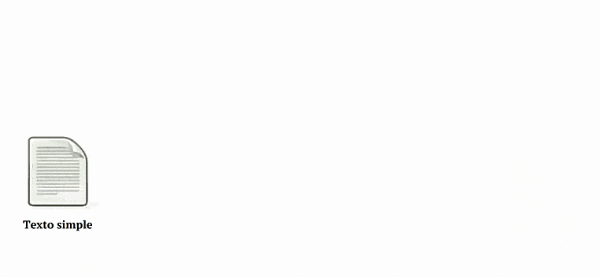
Sin embargo, a medida que la tecnología avanzaba y las capacidades de cómputo aumentaban, se hizo evidente que era necesario fortalecer los sistemas de cifrado. Surgieron nuevos desafíos y amenazas que requerían niveles más altos de seguridad. Es por eso que se desarrollaron otros métodos criptográficos, como la criptografía asimétrica, que utiliza pares de claves diferentes para el cifrado y el descifrado.
Aunque la criptografía simétrica ha evolucionado con el tiempo, todavía se utiliza ampliamente en muchos sistemas y aplicaciones. Su simplicidad y eficiencia la convierten en una opción popular para proteger datos en redes privadas, sistemas de comunicación y almacenamiento de información sensible.
Criptografía Asimétrica
El concepto de algoritmos criptográficos de clave asimétrica, fue un enfoque revolucionario que introdujo un concepto completamente diferente, el uso de un par de claves complementarias, una pública y una privada, para asegurar la confidencialidad de los datos. Cada clave del par tenía una función específica:
- Public key: esta clave pública se compartía abiertamente y se utilizaba para cifrar la información.
- Private key: esta clave privada se guardaba cuidadosamente y se utilizaba para descifrarla.
Con la criptografía de clave pública, los mensajes cifrados podían ser transmitidos a través de redes inseguras sin el temor de que fueran interceptados y descifrados por personas no autorizadas, pero en este caso diferenciándose de la simétrica en que estos mensajes requerían un Private key y una Public key. Era como si se hubiera descubierto una nueva forma de comunicación secreta y segura en el mundo digital, fue un avance revolucionario en el campo de la criptografía.
Algunos de los más destacados y utilizados son los siguiente:
-
RSA - Rivest-Shamir-Adleman: es un sistema criptográfico asimétrico de clave pública desarrollado en 1979. Su seguridad radica en el problema de la factorización de números enteros y se utiliza en diversos ámbitos de la transmisión de datos en Internet debido a su facilidad de uso. Este sistema consta de una clave pública RSA y una clave privada RSA.
-
ECC - Elliptic Curve Cryptography: en la década de 1980 se desarrolló este enfoque de curva elíptica criptográfica, una variante de la criptografía asimétrica o de clave pública basada en las matemáticas de las curvas elípticas que proporciona niveles de seguridad similares o superiores a RSA pero con claves más cortas.
-
ECDSA - Elliptic Curve Digital Signature Algorithm: en los Años 1990 nació ECDSA, un algoritmo de firma digital y autenticación en criptografía asimétrica, basado en curvas elípticas. Se utiliza en criptografía para garantizar la autenticidad, integridad de los datos. ECDSA se basa en la dificultad computacional de resolver el problema del logaritmo discreto en curvas elípticas.
Criptografía Híbrida
El cifrado híbrido utiliza las propiedades únicas de la criptografía de clave pública para intercambiar información secreta a través de un canal no confiable, combinando la eficacia del cifrado simétrico. Esto proporciona una solución práctica de extremo a extremo para garantizar la privacidad de los datos.
Aunque los algoritmos de clave pública, como RSA-OAEP, son menos eficientes que los algoritmos simétricos, generalmente no se utilizan directamente para cifrar los datos. Sin embargo, desempeñan un papel importante en el ecosistema criptográfico al permitir el intercambio seguro de claves.
Para utilizar el cifrado simétrico, las partes deben compartir una clave. Si ya existe un canal seguro, se puede enviar la clave a través de él. Sin embargo, si no hay un canal seguro disponible, se resuelve el problema del intercambio de claves utilizando la criptografía de clave pública.
- DH - Diffie–Hellman: el intercambio de claves DH es un algoritmo criptográfico de clave pública diseñado específicamente para acordar una clave simétrica en ausencia de un canal seguro. La combinación de criptografía de clave pública para el intercambio de claves y el cifrado simétrico para el cifrado de datos en masa se conoce como cifrado híbrido.
El cifrado híbrido se utiliza ampliamente en los protocolos de transferencia de datos para la web, como en la capa de seguridad de transporte (TLS). Cuando te conectas a un sitio web que utiliza HTTPS (HTTP seguro con TLS), tu navegador negocia los algoritmos criptográficos que aseguran la conexión. Estos algoritmos incluyen métodos para el intercambio de claves, cifrado simétrico y firmas digitales.
Firmas digitales
Los esquemas de firma digital son un tipo de criptografía de clave pública que garantiza la integridad, autenticidad y no repudio de los datos.
Es importante destacar que el esquema de firma digital puede variar dependiendo del algoritmo utilizado, ECDSA, es un ejemplo común de esquema de firma basado en criptografía de curva elíptica. Aquí EC recordemos que representa la curva elíptica utilizada y DSA (una variante de los esquemas de firma Schnorr y ElGamal) el algoritmo de firma digital. Cada esquema tiene sus propias características y propiedades de seguridad, y se selecciona según los requisitos y consideraciones específicas de la aplicación.
Cuando se trata de firmas digitales, los pasos generales suelen ser los siguientes:
-
Key generation: el Generador de Claves es un protocolo o algoritmo que genera un Keypar, un par de claves asimétricas como se explicó anteriormente compuestas por una public key y una private key. En el caso de la criptografía de curva elíptica (como ECDSA), se generan los parámetros necesarios para definir la curva y se elige una clave privada aleatoria. A partir de la clave privada, se calcula la clave pública correspondiente utilizando operaciones matemáticas específicas.
-
Hash del mensaje: antes de firmar el mensaje, se aplica una función hash criptográfica al contenido del mensaje. Esto reduce el mensaje a un valor de longitud fija llamado resumen o hash. El objetivo es garantizar la integridad y eficiencia del proceso de firma, ya que es más rápido firmar y verificar un resumen más corto que el mensaje completo.
-
Digital Signature: este proceso tiene el propósito de realizar una serie de operaciones matemáticas utilizando la clave privada y el hash del mensaje para generar la firma digital.
-
Verify Signature: para verificar la autenticidad de la firma, se necesita la clave pública del firmante. Se aplica nuevamente la función hash al mensaje original y se utiliza la clave pública junto con la firma para realizar operaciones matemáticas específicas. Si el resultado coincide con la firma original, se considera que la firma es válida y se confirma la autenticidad del mensaje y del firmante.
El proceso de firma puede considerarse como el cifrado del archivo mediante la clave privada. Para ello, la persona que firma utiliza su clave privada para producir una firma.
Exploraremos a continuación la relevancia de los diversos esquemas de firmas para garantizar la seguridad de nuestros datos, así como la forma en que Starknet usa AA para abstraer la firma de la validación. En este contexto, se pueden diseñar diferentes esquemas o configuraciones, como el secp256r1, una variante de STARK Curve, la versión amigable de ECDSA optimizada en Starknet. Este esquema de firma se puede utilizar para incorporar firmas en dispositivos modernos de manera biométrica, aislada y abstraída por naturaleza, lo que mejora significativamente la eficiencia, tal como se discutirá en detalle más adelante.
Por lo tanto, resulta crucial abordar el siguiente apartado relacionado con el uso de Key generation que desempeñan un papel fundamental en este contexto.
Key generator
Tenemos que entender cómo el generador de claves (Key generator) genera el Keypair, para lograrlo, es necesario trabajar con valores pseudoaleatorios que se utilizan en la generación de la private key. Un Key generator se puede implementar en un sistema con el propósito de generar y autenticar claves.
Key generator puede implementarse en cualquier sistema criptográfico que utilice la curva elíptica, como es el caso de secp256k1 (una curva optimizada basada en las propiedades matemáticas de las curvas elípticas para proporcionar un esquema de firma digital seguro y eficiente), como Bitcoin y Ethereum.
Este generador de claves garantiza que, con alta probabilidad, las claves privadas generadas sean únicas y seguras, lo que a su vez respalda la integridad y autenticidad de las transacciones realizadas en la red.
Generadores de números pseudoaleatorios
Para garantizar la seguridad usando la pseudoaleatoriedad estadística de un PRNG - Pseudorandom number generator, es crucial contar con una semilla inicial. Si la semilla es fácilmente predecible, generará valores predecibles de números y todo el proceso será inseguro.
Para lograr una inicialización segura del generador pseudoaleatorio, es necesario recolectar Entropía, que representa la aleatoriedad necesaria en el proceso.
Entropía
La entropía o aleatoriedad impredecible en computación, generalmente se mide en bits. Tenemos varios ejemplos para entender el concepto y grado de aleatoriedad. Si mueve el mouse de su computadora, generará algunos eventos difíciles de predecir, como la ubicación de inicio y la ubicación final del cursor del mouse.
Si suponemos que el mouse ha cambiado su posición en el rango de
[ 0 ... 255 píxeles ], la entropía recolectada de este movimiento del mouse debe ser de aproximadamente 8 bits, porque2⁸ = 255
Si se le pide al usuario que piense en un número en el rango
[ 0 ... 1000 ], este número tendrá alrededor de 9-10 bits de entropía porque,2¹⁰ = 1024
Para recolectar 256 bits de entropía, es decir, para generar de forma segura un número entero de 256 bits, deberá tener en cuenta una secuencia de varios eventos similares (como movimientos del mouse e interracidades del teclado del usuario).
Aquí la importancia de dónde y cómo hemos generado nuestras claves privadas y públicas y las posibles vulnerabilidades en algunos malos usos.
Funciones hash y funciones hash criptográficas
Este capítulo es de suma importancia para comprender el funcionamiento de las funciones hash. A diferencia de los esquemas de cifrado o las firmas, las funciones hash no requieren de una clave. Cualquier persona puede calcular el hash de una entrada determinada, y la función hash siempre producirá la misma salida para la misma entrada.
Así que podemos definir una función hash como un algoritmo que toma una entrada, como un mensaje o un archivo, y produce una salida de longitud fija llamada hash o resumen. Esta salida es única para cada entrada específica, lo que permite la verificación de la integridad de los datos y garantiza que cualquier cambio en la entrada resultará en un hash completamente diferente.
Una función hash criptográfica, por otro lado, es aquella función hash que se utiliza en el ámbito de la criptografía, para evaluar la seguridad de una función de hash criptográfica, se consideran las siguientes propiedades:
- Resistencia a la preimagen: partiendo de un valor
hash h, es difícil encontrar un mensajemque genere esehash, es decir,h = hash(m), este concepto está relacionado con el de una función de sentido único. Las funciones que carecen de esta propiedad son vulnerables a ataques de preimagen. - Resistencia a la segunda preimagen: dado un mensaje
m₁, es difícil encontrar otro mensajem₂distinto am₁que produzca el mismo valor de hash, es decir,hash(m₁) = hash(m₂). Esta propiedad también se conoce como resistencia débil a colisiones. Las funciones que no cumplen esta propiedad son vulnerables a ataques de segunda preimagen. - Resistencia a colisiones: es difícil encontrar dos mensajes diferentes
m₁ym₂que produzcan el mismo valor de hash, es decir,hash(m₁) = hash(m₂). Estas colisiones son conocidas como colisiones criptográficas de hash. Esta propiedad también se conoce como resistencia fuerte a colisiones. Se requiere que el tamaño del hash sea al menos el doble de largo para garantizar la resistencia a la preimagen.
Merkle Tree en Blockchain
Ahora que hemos comprendido mejor qué es un hash, veamos cómo en criptografía y ciencias de la computación, un árbol hash, también conocido cómo Merkle Tree o binary Merkle tree, es una estructura de datos utilizada para garantizar la integridad de los contenidos almacenados en un sistema, como la tecnología blockchain.
Podemos ver los Merkle Trees como una estructura de árbol en la que cada "hoja" o nodo terminal, está etiquetado con el hash criptográfico de un bloque de datos. A su vez, cada nodo que no es una hoja, también conocido como rama, nodo interior o inodo, está etiquetado con el hash criptográfico de las etiquetas de sus nodos secundarios.
La construcción de un Merkle Tree implica dividir los datos en bloques más pequeños y aplicar una función de hash criptográfico a cada uno de ellos. Luego, los bloques hash se combinan en pares y se vuelven a hashear, repitiendo este proceso hasta obtener un único hash llamado raíz de Merkle o “Merkle root”. Esta raíz se coloca en la cabecera de un bloque o transacción y se utiliza como una firma digital que representa y verifica la integridad de todos los datos incluidos en el bloque.
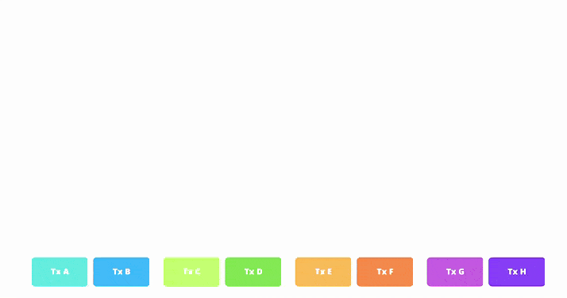
Una de las principales ventajas de los Merkle Trees es su capacidad para proporcionar una verificación eficiente y segura de los contenidos de una gran estructura de datos. Como cada nodo intermedio en el árbol está etiquetado con el hash criptográfico de las etiquetas de sus nodos secundarios, cualquier cambio realizado en los datos se reflejará en cambios en los hashes correspondientes.
En la tecnología blockchain que usan los Merkle Trees, los utilizan para garantizar la integridad de los datos almacenados en cada bloque de la cadena. Cada bloque contiene una lista de transacciones, y el Merkle Tree se construye utilizando los hashes de estas transacciones.
Cuando se agrega un nuevo bloque a la cadena, la raíz de Merkle del bloque anterior se incluye en el nuevo bloque, creando una cadena enlazada de árboles de Merkle. Esto permite verificar rápidamente la integridad de cualquier bloque en la cadena sin necesidad de verificar todos los datos desde el inicio. Además, si algún dato se modifica en un bloque, el hash del bloque cambiará, lo que afectará la raíz de Merkle y señalará la alteración en la cadena.
Algunos casos posibles de uso de los binary Merkle Trees para los diferentes esquemas pueden ser:
- Los binary Merkle Trees: son estructuras de datos muy eficientes para autenticar información que se presenta en formato de "lista", es decir, una secuencia de elementos consecutivos.
- Los transaction trees: también resultan beneficiosos, ya que una vez creado el árbol, no importa cuánto tiempo se tarde en editarlo, ya que permanecerá inmutable.
- Los State trees: sin embargo, cuando se trata de un árbol que almacena estados la situación se vuelve más compleja, el estado en Ethereum, que consiste en un mapa de valores clave donde:
- Las claves son direcciones
- Los valores son las declaraciones de cuenta que incluyen: saldo, nonce, código y almacenamiento asociados a cada cuenta, r
- Requiere la construcción de una prueba de transición de estado de Merkle (Merkle state transition proof)
Así que, comprender el funcionamiento de los State Trees y su optimización de datos es crucial en el contexto actual donde los datos y los hashes desempeñan un papel fundamental. En el caso de Ethereum, uno de los principales actores en el ámbito de los State Trees, se han incorporado modificaciones interesantes usando Patricia Merkle Trie.
Patricia Merkle Trie
La especificación de Ethereum define el Modified Merkle Patricia Trie (también conocido como MPT) este método se utiliza para guardar estados. Básicamente, el MPT es una combinación del Patricia trie y el Merkle tree, con algunas optimizaciones adicionales adaptadas a las características de Ethereum.
Patricia trie, (Radix tree o Radix trie), árbol de prefijos compacto (compact prefix tree) o árbol de prefijos comprimido (compressed trie), es una sofisticada estructura de datos que ofrece una optimización espacial en la representación de [Tries] (árboles de prefijos). Una de las características clave de este tipo de árbol es la fusión de nodos cuando un nodo es hijo único de su padre, lo que contribuye a una mayor eficiencia y rendimiento.
Esta estructura es un tipo de árbol de búsqueda k-ary, siendo un m-ary tree (también conocido como n-ary tree, k-ary tree o k-way tree) un árbol raíz en el cual cada nodo tiene como máximo m hijos. Ambas estructuras de datos se utilizan para localizar claves específicas dentro de un conjunto.
Estos árboles son completamente deterministas, lo que significa que aquellos con las mismas asociaciones de (clave, valor) están garantizados de ser idénticos, hasta el último byte. Esto asegura que tengan el mismo hash raíz, lo que proporciona la deseada eficiencia de O(log(n)) para inserciones, búsquedas y eliminaciones. Además, son más fáciles de entender y programar que alternativas más complejas basadas en comparaciones, como los red-black tree.
El Patricia Merkle Trie combina la estructura de un árbol de búsqueda binario con la estructura de árbol de Merkle, lo cual permite verificar eficientemente la integridad de los datos y proporciona una representación compacta del estado completo de la cadena.
El uso del Patricia Merkle Trie en Ethereum ofrece ventajas significativas en términos de eficiencia y escalabilidad. Permite realizar consultas rápidas sobre el estado de las cuentas y los contratos, evitando la necesidad de recorrer todo el estado completo. En cambio, solo es necesario verificar y acceder a los nodos relevantes en el árbol, lo que ahorra tiempo y recursos.
Además, esta estructura de árbol facilita la implementación de funciones de snapshot y revert en Ethereum. Estas funciones permiten crear instantáneas del estado del sistema en momentos específicos y revertir cambios en caso de errores o ataques, brindando una capa adicional de seguridad y confiabilidad a la red blockchain.
La comprensión de los Merkle Trees y el MPT resulta especialmente relevante al explorar otras estructuras de datos criptográficas, como las Merkle Mountain Ranges (MMRs) en Herodotus para las Storage Proof. Las MMRs pueden considerarse una lista de Árboles de Merkle, donde cada árbol se representa como una montaña y la lista completa forma el rango. La utilización de funciones hash específicas y sus características de seguridad se explorarán para comprender cómo crear estos árboles de manera eficiente y óptima.
Por lo tanto, es crucial comprender a fondo las diferentes funciones hash y sus propiedades para tomar decisiones informadas sobre la selección y optimización de las mismas en la construcción de estructuras de datos criptográficas más eficientes y seguras en los Árboles de Merkle.
Las funciones hash desempeñan un papel fundamental en garantizar la integridad y la seguridad de los datos almacenados en los árboles de Merkle, ya que se utilizan para calcular los hashes de los nodos y verificar su integridad durante la construcción y la verificación del árbol.
SHA-256
En este capítulo aprenderemos algunos ejemplos de funciones hash criptográficas ampliamente utilizadas, un ejemplo es SHA-256 (Secure Hash Algorithm 256-bit), que es una función de hash criptográfica perteneciente a la familia de algoritmos SHA-2. Esta función acepta una entrada de cualquier longitud y genera una salida de 256 bits que se considera única y asociada de forma irreversible a dicha entrada.
Pueden probar la generación de un hash utilizando cualquier generador en línea. En este caso, realizamos pruebas utilizando la función hash SHA-256 y keccak-256, también pueden explorar y probar más funciones hash desde aquí.
El cambio de un solo bit causa un efecto avalancha, lo que significa que incluso un cambio mínimo como un . en la entrada, produce un cambio significativo en la salida. Puedes revisar el hash de L2 en Español y L2 en Español.
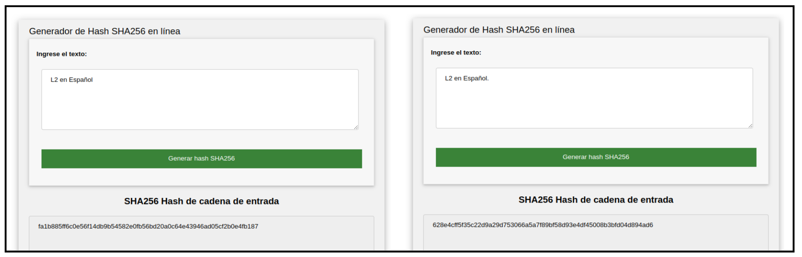
SHA-256 se utiliza ampliamente en criptografía, y cuenta con diversos casos de uso destacados:
- Verificación de integridad:
SHA-256se utiliza para verificar la integridad de los datos almacenados en un sistema. Al calcular el hash de un archivo o conjunto de datos, se puede comparar con el hash original para detectar cualquier cambio o alteración en los datos. - Firmas digitales: las firmas digitales se generan mediante algoritmos criptográficos y se basan en la función SHA-256 para asegurar la autenticidad e integridad de los mensajes. El hash
SHA-256se utiliza para resumir y proteger la información que se firma digitalmente. - Almacenamiento seguro de contraseñas: en lugar de almacenar contraseñas en texto plano, los sistemas de seguridad suelen almacenar el hash
SHA-256de las contraseñas. Cuando un usuario ingresa su contraseña, se calcula el hash y se compara con el valor almacenado, lo que permite verificar la autenticidad de la contraseña sin almacenarla directamente. - Generación de claves criptográficas:
SHA-256se utiliza en algoritmos de generación de claves criptográficas para producir claves aleatorias y seguras.
En resumen, SHA-256 es una función hash criptográfica ampliamente utilizada que forma parte de la familia de algoritmos SHA-2, la hace ideal para verificar la integridad de los datos, generar firmas digitales, almacenar contraseñas de forma segura y generar claves criptográficas. SHA-256 ha demostrado su robustez y eficacia en numerosos casos de uso en criptografía. Ahora es el turno de explorar otra función hash criptográfica más moderna llamada Keccak.
Keccak - El nuevo SHA-3
Este capítulo nos centraremos en el SHA-3 (Secure Hash Algorithm 3), es un estándar de función hash criptográfica diseñado por los criptógrafos Joan Daemen y Gilles Van Assche. El algoritmo utilizado en SHA-3 se llama Keccak, el cual fue seleccionado como el ganador del concurso organizado por el Instituto Nacional de Estándares y Tecnología (NIST) para encontrar un nuevo estándar de función hash criptográfica.
A diferencia de SHA-256, Keccak utiliza una estructura y operaciones diferentes. En lugar de rondas, Keccak se basa en una construcción llamada función de esponja (Sponge function), que se basa en una función pseudoaleatoria amplia o (permutation) pseudoaleatorio permitiendo ingresar "absorbing" y "squeezing".
Keccak-256 es una función hash criptográfica utilizada en Ethereum. Pertenece a la familia de algoritmos SHA-3 y se emplea ampliamente en la plataforma Ethereum para diversos propósitos.
Algunos casos de uso de Keccak-256 incluyen:
- Ethereum utiliza
Keccak-256para garantizar la integridad de los datos y generar identificadores únicos (hash) para verificar la autenticidad de los archivos y mensajes en sistemas criptográficos. - También se utiliza en la firma criptográfica de pequeño tamaño, donde en lugar de firmar la entrada completa, se firma el hash
Keccak-256del mensaje o dato. Keccak-256es utilizado para obtener una identificación única y determinista de una colección de datos. Por ejemplo, en Ethereum, las direcciones de Ethereum se derivan de claves públicas o contratos utilizando la función hash unidireccionalKeccak-256.
Las direcciones Ethereum son números hexadecimales, identificadores derivados de los últimos 20 bytes del hash Keccak-256 de la clave pública.
A diferencia de las direcciones de Bitcoin, que están codificadas en la interfaz de usuario de todos los clientes para incluir una suma de verificación incorporada para proteger contra direcciones mal escritas, las direcciones de Ethereum se presentan como hexadecimales sin ninguna suma de verificación.

El algoritmo Keccak utiliza la Sponge construction para procesar los datos de entrada de longitud variable para generar una salida de longitud variable. Esta construcción se basa en una función interna llamada "F" que opera en un número fijo de bits, denotado como "width" (anchura).
La anchura total del algoritmo Keccak se determina sumando dos componentes, el valor de "r" (rate) y el valor de "c" (capacity), donde b = r + c.
- El valor de
"r"representa la cantidad de bits absorbidos en cada paso de la función esponja, es decir, la capacidad de absorción de la esponja. Un valor de"r"más grande permite procesar más información en cada paso, lo que reduce la cantidad de pasos necesarios para procesar una entrada específica. - El valor de
"c"representa la capacidad de la esponja, es decir, la cantidad de bits que se mantienen en el estado interno del algoritmo después de cada paso de absorción. Estos bits se mezclan con los datos de entrada y el resultado de la función interna"F". La capacidad afecta la resistencia del algoritmo a ataques criptográficos como colisiones o preimagen.
La suma de "r" y "c" da como resultado el número total de bits, "b", utilizados en la función esponja de Keccak. Este valor determina la longitud del estado interno y, por lo tanto, la longitud de la salida generada por el algoritmo.
Funcionamiento keccak
El algoritmo funciona de la siguiente manera, inicialmente la cadena de entrada se rellena con bits adicionales para enmascarar el mensaje inicial y se divide en bloques de longitud "r" bits. Luego, los "b" bits de estado se inicializan a 0, que da inicio a la Sponge construction en dos fases "absorbing" y "squeezing".
- Fase Absorbing: a los bloques de entrada de longitud
r-bitsse les aplica un XOR (toma dos bits y devuelve un resultado que es 1 si solo uno de los bits es 1, y 0 en caso contrario) a los primerosrbits del estado, alternándose con la funciónf. Cuando todos los bloques han sido procesados, se pasa a la siguiente fase. - Fase Squeezing: los primeros
rbits del estado son devueltos como bloques de salida, alternándose con ejecuciones de la funciónf. El número de bloques de salida es seleccionado por el usuario.
A continuación os dejamos una tabla que enumeran algunas de las diferencias entre SHA-256 y Keccak-256.
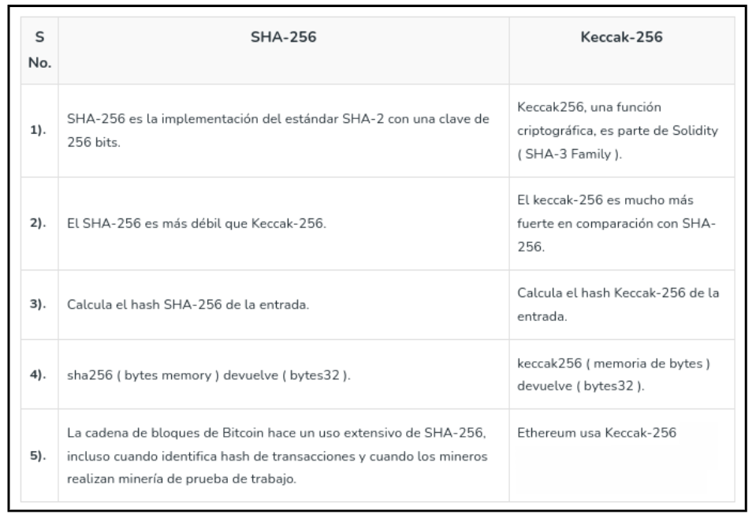
Vemos cómo cada tipo de criptografía o función hash tiene características distintas. En el contexto actual de la computación cuántica en constante evolución, es crucial abordar las preocupaciones emergentes sobre seguridad. Algunos algoritmos criptográficos podrían ser vulnerables a los ataques cuánticos en un futuro cercano. Es en este punto donde entra en juego el concepto de criptografía Post-Quantum.
Quantum Secure
Recomendamos repasar los episodios previos antes de leer este capítulo, con el fin de adquirir un mayor conocimiento de algunas definiciones y explorar posibles escenarios teóricos apocalípticos que podrían ocurrir. Pero antes comencemos con una breve descripción sobre computación cuántica para sumergirnos en el tema. No es más que un modelo de computación basado en la física cuántica, que funciona de manera diferente a las computadoras clásicas (el tipo de computadoras que usamos habitualmente) y tiene la capacidad de realizar tareas que estas últimas no pueden, como romper ciertos algoritmos de manera eficiente.
¡Así que espera un momento! Antes de que tu imaginación se desborde y te veas rodeado de supercomputadoras cuánticas capaces de solucionar todos nuestros problemas, déjame contarte una pequeña anécdota.
Ah, las computadoras cuánticas, esas criaturas de la física cuántica que nos hacen soñar con un futuro lleno de posibilidades. Pero, ¿sabías que no son máquinas mágicas capaces de resolver todos nuestros problemas informáticos en un abrir y cerrar de ojos?
Imagina esto: las computadoras cuánticas son como esas personas brillantes que son súper eficientes en ciertas tareas, pero bastante débiles en otras. Son como el genio matemático que resuelve complicados problemas de cálculo en segundos, pero se le olvida cómo atarse los zapatos.
Entonces, sí, las computadoras cuánticas pueden ser increíblemente poderosas cuando se trata de ciertos problemas específicos, como el factorizar números grandes o buscar en enormes bases de datos. Pero cuando se trata de tareas cotidianas, como revisar correos electrónicos o navegar por la web, bueno, digamos que son como un caracol tratando de correr una maratón.
Después de esta pequeña relato, es importante comprender el concepto de criptografía post-cuántica (PQC), también conocida como Resistente a la Computación Cuántica, se refiere a algoritmos criptográficos especialmente algoritmos de clave pública, que se consideran seguros contra los ataques criptoanalíticos llevados a cabo por computadoras cuánticas.
A medida que avanza la computación cuántica, se espera que algunos algoritmos y técnicas criptográficas tradicionales utilizadas en los sistemas de seguridad actuales sean vulnerables a los ataques cuánticos. Esto se debe a la capacidad de las computadoras cuánticas para realizar cálculos a una escala exponencialmente mayor que las computadoras clásicas, lo que podría comprometer la seguridad de los sistemas criptográficos actuales.
Es bien sabido en informática que las computadoras cuánticas podrán romper algunos algoritmos criptográficos, especialmente los criptosistemas de clave pública como RSA, el intercambio de llaves Diffie–Hellman y ECDSA, que dependen del IFP (problema de factorización en números primos), el DLP (problema del logaritmo discreto) y el ECDLP (problema del logaritmo discreto de curva elíptica). Todos estos problemas podrían resolverse fácilmente en una computadora cuántica suficientemente poderosa que ejecute el algoritmo de Shor.
Pero los algoritmos cuánticos no significarán el fin de la criptografía, porque:
- Solo algunos criptosistemas son inseguros frente a la computación cuántica (como RSA, DHKE, ECDSA y ECDH).
- Algunos criptosistemas son seguros frente a la computación cuántica y solo se verán ligeramente afectados (como los hash criptográficos, algoritmos MAC y cifrados de clave simétrica como AES, siempre que se utilicen tamaños de clave suficientemente grandes).
A diferencia de la amenaza que representa la computación cuántica para los algoritmos de clave pública actuales, la mayoría de los algoritmos criptográficos simétricos y las funciones hash actuales se consideran relativamente seguros contra ataques de computadoras cuánticas. Si bien el algoritmo cuántico de Grover acelera los ataques contra los cifrados simétricos, duplicar el tamaño de la clave puede bloquear eficazmente estos ataques. Por lo tanto, la criptografía simétrica post-cuántica no necesita diferir significativamente de la criptografía simétrica actual.
El algoritmo de Grover y la búsqueda no estructurada
El algoritmo de Grover es un algortimo cuántico para la búsqueda en una secuencia no ordenada de datos con N componentes en un tiempo O(N¹/₂), y con una necesidad adicional de espacio de almacenamiento de O(logN). Fue inventado por Lov K. Grover en 1996.
Aunque el algoritmo de Grover es eficiente, su paralelización óptima resulta complicada y no se espera que las computadoras cuánticas actuales tengan suficiente potencia para comprometer la seguridad de esquemas como ECDSA o de funciones de hash como SHA256.
El algoritmo de Shor teórico y su impacto en ECDSA
El algoritmo de Shor es un algoritmo cuántico desarrollado por Peter Shor en 1994. Este algoritmo es conocido por su capacidad para factorizar grandes números enteros de manera mucho más eficiente que los algoritmos clásicos conocidos, lo que tiene implicaciones importantes para la seguridad de algunos sistemas criptográficos basados en la factorización de números enteros.
En el contexto de sistemas centralizados, como los sistemas bancarios, ECDSA se utiliza para garantizar la autenticidad de las transacciones, proteger la confidencialidad de la información y asegurar la integridad de los datos. En el ámbito de Bitcoin y Ethereum, si bien los algoritmos de búsqueda cuántica, como el algoritmo de Shor, podrían eventualmente romper la ECDSA, es importante destacar que estos algoritmos aún están en una etapa teórica.
Cada implementación de algoritmos o protocolos puede ser diversa, ya sea privada o abstracta. Nos hemos centrado en los principios básicos comunes de ECDSA, además se espera que la implementación práctica de algoritmos de búsqueda cuántica sea un desafío técnico debido a los requisitos de recursos y la necesidad de superar errores cuánticos.
Aquí tienes una descripción general de en qué consisten algunos problemas que se consideran complejos de resolver mediante la computación clásica.
IFP
El IFP se refiere al desafío de descomponer un número entero grande en sus factores primos. En el caso de números pequeños, esto puede hacerse fácilmente mediante el uso de algoritmos como el cribado de Eratóstenes o el algoritmo de factorización de Pollard.
A modo de ejemplo simplificado, supongamos que queremos factorizar el número compuesto N = 35 utilizando el algoritmo de Shor. Después de aplicar el algoritmo, encontraríamos que los factores primos de N son 5 y 7.
Sin embargo, a medida que los números crecen en tamaño, el IFP se vuelve cada vez más difícil de resolver. De hecho, la seguridad de muchos sistemas criptográficos se basa en la dificultad de factorizar números grandes en tiempo razonable, como el popular algoritmo RSA.
DLP
Por otro lado, el DLP implica encontrar el exponente desconocido de una potencia modular dada. En términos más sencillos, se trata de resolver la ecuación (y = gˣ mod p) para el exponente desconocido (x), donde (g) y (p) son números conocidos e (y) es el resultado de la operación de potenciación modular. Para valores pequeños de (p), el DLP puede resolverse mediante la aplicación de métodos exhaustivos como la prueba y error.
A modo de ejemplo simplificado, sería encontrar el logaritmo discreto de base 2 para el número 5 módulo 11. Esto implica encontrar el valor de x en la ecuación 2ˣ ≡ 5 (mod 11).
Realizando los cálculos paso a paso:
- 2¹ ≡ 2 (mod 11)
- 2² ≡ 4 (mod 11)
- 2³ ≡ 8 (mod 11)
- 2⁴ ≡ 5 (mod 11)
Entonces, el valor de x que satisface la ecuación 2ˣ ≡ 5 (mod 11) es x = 4.
ECDLP
La seguridad de esquemas criptográficos basados en ECC, como ECDSA, se basa en la dificultad de resolución del problema del logaritmo discreto de curva elíptica o ECDLP. Las curvas elípticas son objetos matemáticos utilizados en criptografía de clave pública, y el ECDLP sería el problema de hallar el valor de ‘K’ en esta ecuación, P =k⋅G, donde P es un punto en la curva, k es el valor que debemos hallar y G es un punto base conocido (el generador).
Al igual que en el caso del DLP, el ECDLP se vuelve más difícil de resolver a medida que el tamaño de los números involucrados en esas expresiones matemáticas aumentan
ECDSA
Por último llegamos a un algoritmo ampliamente utilizado y conocido como es el ECDSA, que se utiliza comúnmente en blockchain. La clave pública se obtiene multiplicando un punto base conocido (llamado generador) en la curva elíptica por un entero, que representa la llave privada. El desafío radica en encontrar ese valor privado a partir del punto público conocido en la curva.
La curva elíptica secp256k1 está definida por la ecuación: y² = x³ + ax + b sobre 𝔽p donde p es un número primo grande.
El algoritmo de Shor, en su versión completa y ejecutado en un computador cuántico lo suficientemente grande y estable, podría factorizar el número primo p en esta ecuación, lo que proporcionaría información sobre el orden del subgrupo cíclico relacionado con la curva.
Si se pudiera determinar el orden del subgrupo cíclico relacionado con la curva secp256k1 utilizando el algoritmo de Shor, sería posible encontrar el valor privado a partir de la clave pública. Esto comprometería la seguridad de ECDSA, ya que la clave privada es fundamental para generar firmas digitales y autenticar transacciones. Es importante destacar que el algoritmo de Shor plantea un desafío para los sistemas criptográficos actuales basados en la factorización de números enteros o en el logaritmo discreto, como RSA y ECDSA.
No obstante, la implementación práctica de un algoritmo cuántico capaz de realizar estos cálculos, como los mencionados ejemplos, todavía se encuentra en desarrollo y no representa una amenaza inmediata para los sistemas criptográficos utilizados en la actualidad. La investigación y el desarrollo continuo en criptografía pos-cuántica son fundamentales para garantizar la seguridad en un entorno tecnológico en constante evolución.
Criptografía basada en Lattice previene Shor
En este capítulo aprenderemos cómo una verificación de esquemas de firmas puede ser lo suficientemente fuerte para prevenirnos contra un posible ataque ejecutado con el algoritmo de Shor, la criptografía basada en retículos (Lattice), es una forma segura de protegerse frente a muchos algoritmos.
Pensemos en un retículo, como una estructura matemática que se forma mediante una red de puntos en un espacio n-dimensional. Es similar a una cuadrícula o una rejilla en dos dimensiones, pero se extiende a cualquier número de dimensiones. Cada punto en el retículo está ubicado en una posición determinada y está conectado a los puntos vecinos por líneas rectas de igual longitud.
En el contexto de la criptografía basada en retículos, se utilizan retículos en teoría de números para construir sistemas criptográficos. Estos retículos se definen mediante un conjunto de vectores base, que son combinaciones lineales de vectores de coordenadas con coeficientes enteros. Los retículos tienen propiedades matemáticas interesantes, como la propiedad de ser densos y uniformes en el espacio.
Los problemas computacionales basados en retículos, como el problema de la aproximación más cercana en retículos o el problema del vector corto más cercano, se utilizan en criptografía para establecer la seguridad de los esquemas basados en retículos. Estos problemas son difíciles de resolver y se cree que no existen algoritmos eficientes para resolverlos en el caso general, lo que brinda seguridad a los sistemas criptográficos basados en retículos.
La criptografía basada en retículos es el término genérico para las construcciones de primitivas criptográficas que involucran retículos, ya sea en la construcción misma o en la prueba de seguridad.
Las construcciones basadas en retículos son actualmente candidatas importantes para la criptografía post-cuántica. A diferencia de los esquemas de clave pública más ampliamente utilizados y conocidos, como RSA, Diffie-Hellman o los criptosistemas de curva elíptica, que teóricamente podrían ser derrotados utilizando el algoritmo de Shor en un computador cuántico, algunas construcciones basadas en retículos parecen ser resistentes a los ataques tanto de computadoras clásicas como cuánticas. Además, muchas construcciones basadas en retículos se consideran seguras bajo la suposición de que ciertos problemas computacionales bien estudiados en retículos no pueden ser resueltos.
Aquí hay una breve explicación de las diferencias entre los esquemas de criptografía basados en retículos en términos de encriptación, funciones hash y intercambio de claves:
- Encriptación basada en retículos: los esquemas de encriptación basados en retículos aprovechan las propiedades matemáticas de los retículos para proporcionar seguridad en la comunicación.
- Funciones hash basadas en retículos: las funciones hash basadas en retículos utilizan retículos y operaciones matemáticas relacionadas para calcular los hashes y se utilizan en diversas aplicaciones criptográficas, como la integridad de datos y la firma digital.
- Intercambio de claves basado en retículos: el intercambio de claves basado en retículos como el (Intercambio NewHope Protocol) implica el establecimiento de una clave compartida entre dos o más partes que desean comunicarse de manera segura. Los protocolos de intercambio de claves basados en retículos utilizan los retículos y los problemas computacionales relacionados con ellos para garantizar que las partes puedan acordar una clave sin que un tercero pueda determinarla. Estos esquemas se basan en la dificultad de resolver ciertos problemas matemáticos relacionados con los retículos para asegurar la confidencialidad de la clave compartida.
Kyber Crystal
En este estudio post-quantum veremos Kyber, antes de entrar dentro del ecosistema de Starkware y aprender cómo se generan los contratos de cuentas, así como las características criptográficas y matemáticas detrás de las STARKs.
Kyber es un método de encapsulación de clave (KEM) diseñado para resistir ataques criptoanalíticos realizados por futuras computadoras cuánticas poderosas. Se utiliza para establecer un secreto compartido entre dos partes que se comunican, sin que un atacante (IND-CCA2) en el sistema de transmisión pueda descifrarlo. Este criptosistema asimétrico utiliza una variante del problema de redes de aprendizaje con errores (learning with errors, LWE) como su función básica con trampa. Ganó la competencia del NIST para el primer estándar de criptografía PQ.
La generación de claves en Kyber no se basa en la factorización de enteros o en problemas relacionados con las curvas elípticas, sino que utiliza el problema de aprendizaje con errores en retículos como base para la seguridad del algoritmo.
El sistema se basa en el aprendizaje con errores en módulos (M-LWE) del campo del aprendizaje automático, en conjunto con anillos ciclotómicos. Recientemente, también se ha logrado una reducción formal matemática estrecha de la problemática del anillo LWE al MLWE. En comparación con otros métodos de criptografía post-cuántica, tiene las ventajas típicas de los métodos basados en retículos, como el tiempo de ejecución, el tamaño de los textos cifrados y el material clave.
En cuanto a los parámetros, Kyber proporciona diferentes conjuntos para alcanzar diferentes niveles de seguridad. Por ejemplo, Kyber-512 tiene una seguridad aproximada equivalente a AES-128, Kyber-768 tiene una seguridad aproximada equivalente a AES-192 y Kyber-1024 tiene una seguridad aproximada equivalente a AES-256.
En resumen, Kyber utiliza un enfoque matemático diferente a ECDSA en la generación de claves. Se basa en el problema de aprendizaje con errores en retículos y en la selección adecuada de parámetros de seguridad. La seguridad de Kyber radica en la dificultad de resolver problemas criptográficos específicos asociados a ese enfoque matemático.
Con esto hemos concluido las bases criptográficas que nos han brindado los detalles de cómo se generan los distintos tipos de criptografía simétrica o asimétrica, así como las funciones hash y su importancia en la seguridad. Nos adentramos en cómo se integraban en los Merkle Tree o Patricia Trie, para luego explorar el ámbito de la computación cuántica y ver cómo se podían resolver algunos de los problemas planteados por ciertas criptografías. También destacamos la importancia de las firmas y las verificaciones de firmas en los avances de la tecnología de la computación cuántica.
La computación cuántica se mostró resistente a las bases simétricas de una llave maestra o a las funciones hash en sí. Además, presenciamos avances en la prevención de ataques cuánticos y en algoritmos cuánticos como Lattice o encapsulamientos por Kyber. Con estos avances en mente, es hora de pasar a ver las EOA (Externally Owned Accounts) y los firmantes en Ethereum, para luego diferenciarlos de la Account Abstraction nativa en Starknet.
EOA y AA - Firmantes
Las cuentas de EOA (Externally Owned Accounts) en Ethereum, al igual que muchas otras criptomonedas, utilizan el algoritmo ECDSA que aprendimos antes para generar claves y firmar transacciones digitalmente. Esto les permite participar de manera segura en la red y realizar operaciones. Las EOA son cuentas que pertenecen a usuarios externos a la cadena de bloques.
En Ethereum, el estado de una cuenta solo puede ser modificado a través de transacciones, las cuales deben ser iniciadas por una EOA. sin embargo, no cualquier persona puede activar una transacción desde cualquier EOA, aquí es donde entra en juego el concepto de firmante.
Cada cuenta en Ethereum está asociada con un objeto criptográfico llamado keypair, como aprendimos antes.
La clave privada, se utiliza para firmar mensajes digitales, mientras que la clave pública permite que cualquiera pueda verificar que una firma en particular fue generada por la clave privada correspondiente.
La asociación entre una cuenta y un firmante se realiza mediante la dirección de la cuenta. La dirección de un EOA se deriva de la clave pública del firmante, específicamente, la dirección se obtiene tomando los últimos 20 bytes del hash Keccak-256 de la clave pública.
El propietario de una cuenta puede autorizar una transacción desde su cuenta firmando los parámetros de la transacción con la clave privada correspondiente.
La curva elíptica secp256k1 es una de las curvas elípticas más utilizadas en criptografía, especialmente en el contexto de criptomonedas como Bitcoin o Ethereum. Esto ha permitido establecer esquemas de firmas digitales que garantizan la integridad de las transacciones al asegurar la autenticidad de las claves.
La abstracción de firma y clave privada es una propiedad presente en algunos sistemas criptográficos, como ciertos esquemas de firmas digitales basados en identidad. Sin embargo, en el caso del algoritmo ECDSA utilizado en Ethereum y muchas otras blockchain, la firma está inherentemente vinculada a la clave privada de la cuenta y no es posible separarlas o abstraerlas, como podría ser el caso en otros esquemas diseñados con estos principios.
Ahora que ya hemos adquirido los conceptos básicos y hemos prestado atención para adquirir la formación adecuada y avanzada, podemos sumergirnos en el apasionante ecosistema de StarkWare, Starknet, StarkEx y STARKs. Nuestra mente está mejor preparada para embarcarnos en el viaje que nos espera en el resto del documento y en las futuras series.
Starknet AA
En esta sección sobre Starknet, continuaremos construyendo sobre los conceptos previamente abordados en los capítulos anteriores, donde exploramos temas fundamentales de criptografía. Esperamos que haya disfrutado de la información y recursos presentados en capítulos anteriores, ya que han sido de vital importancia para comprender lo que abordaremos a continuación dentro de Starknet. Exploraremos cómo mejora todo el ecosistema y cómo los contratos de cuentas (CA) y el esquema de firmas abstraídas ofrecen beneficios significativos en comparación con el ERC-4337.
Si deseas aprender más sobre el concepto y las variantes del ERC-4337, te recomendamos leer esta serie de artículos en el blog de Argent. La serie está compuesta por la Parte 1, Parte 2 y Parte 3. Argent y Braavos son Smart wallets que aprovechan el poder del AA nativo en Starknet. También te recomendamos leer los artículos de Braavos de Guide 101 AA y Security Pyramid AA, los cuales presentan optimizaciones adicionales y capas de seguridad que exploraremos más adelante. Estos recursos te proporcionarán una mejor comprensión del concepto de AA y del ERC-4337.
¡Así que sin más preámbulos, bienvenidos a Starknet!
En el ecosistema de Starknet, se encuentran diversas metodologías para generar claves y firmas. A diferencia de las cuentas EOA, en Starknet se emplea Account Abstraction (AA) para la implementación de Contract Accounts (CA). Estos contratos son responsables de establecer la lógica en nuestras cuentas dentro de Starknet, incluyendo la validación del esquema de firma abstraído.
En lugar de utilizar ECDSA, Starknet utiliza una variación llamada [STARK Curve], un tipo de curva elíptica más amigable y optimizada que es nativa en el ecosistema, esta variante nos ofrece mejoras y características específicas para las necesidades de Starknet.
Lo grandioso de tener esta abstracción nativa es que permite añadir diferentes lógicas en tus esquemas o capas adicionales. Normalmente, se utiliza un sistema asimétrico usando la curva elíptica secp256k1, basado en la pseudoaleatoriedad y diversas operaciones matemáticas utilizando dicha curva, para generar claves privadas y públicas. Sin embargo, también se pueden añadir curvas adicionales de forma nativa al crear un CA, como lo ha hecho Braavos con la secp256r1. Esta curva cuenta con un sistema de firmas integrado, mejor optimizado y preparado para dispositivos modernos, donde el signer puede almacenar los datos habilitados por biometricidad en dispositivos aislados y seguros, como el módulo "Enclave" de Apple.
La AA desempeña un papel crucial al abstraer el esquema de firmas o verificación de firmas de la ejecución. Como vimos anteriormente, podemos generar una clave privada y mediante ECDSA generar una clave pública. En este caso el poseedor de esta clave privada y del esquema de firma asociado tiene el poder de realizar transacciones en Starknet, los dos tipos de transacciones son DEPLOY o INVOKE.

Con AA podemos modificar estas firmas o curvas. Por ejemplo, la curva Secp256r1, vimos que ofrece una seguridad adicional en Braavos al configurar una firma biométrica en el módulo de seguridad del enclave. De esta manera, esta firma biométrica solo puede ser añadida gracias a AA.
Todo esto es posible gracias al lenguaje de programación utilizado en la implementación, el poderoso Cairo, así que analicemos cómo Cairo incorpora esta abstracción en su programación.
En primer lugar, se necesita validar la firma y comprobar que coincide con la generada mediante ECDSA antes de proceder a la ejecución. Estas dos funciones principales son validate y execute. Además, execute también puede realizar múltiples llamadas utilizando execute_calls.

Ahora analicemos cómo Cairo incorpora esta abstracción en su programación.
Veamos cómo funciona un ciclo de transacción con AA nativa y cómo se representa gráficamente este ciclo completo de firmas para detectar si es correcto y realizar la operación.
También pensemos en cómo se podrían combinar de manera eficiente firmas como ha realizado Braavos con la EC secp256r1 o incluso realizar la verificación de firmas, como vimos con Lattice para prevenir ataques cuánticos.

Los conocimientos previos adquiridos nos han enseñado muchas cosas, una de ellas es cómo el algoritmo de Shor puede teóricamente romper ECDSA, pero no podrá romper una prueba STARK.
En la sección de generación de STARKs, aprenderemos como gracias a sus bases de criptografía simétrica y otras variables, si alguien nos roba, hackea o perdemos la cuenta, el esquema PQS para la prueba no será de mucha utilidad, ya que no se ha alterado la integridad del estado de los datos, sino que por oun teórico ataque criptoanalítico se habrá obtenido tu PK, lo que permitiría mover los fondos de forma justa.
Pero, ¿qué sucedería si tuviéramos un esquema de verificación de firmas seguro frente a un ataque cuántico?
Aquí es donde entran en juego pequeños cambios, específicamente en la parte de validación y no de ejecución, con las mejoras en Starknet y con la ayuda de AA nativo, está implementando para prepararse para el futuro. Una posibilidad sería el uso de Lattice o Kyber, aunque el futuro no está escrito, así que ha llegado el momento de ver cómo se genera la parte de la EC.
EC en Cairo - STARK Curve
Como hemos visto en capítulos anteriores, en el contexto de los sistemas criptográficos, la elección de la curva elíptica adecuada es de suma importancia. En este caso, se utiliza una variante de EC la cual ha sido especialmente diseñada y optimizada para su aplicación en el entorno de Starknet.
La STARK Curve (EC.cairo) se define mediante la ecuación:
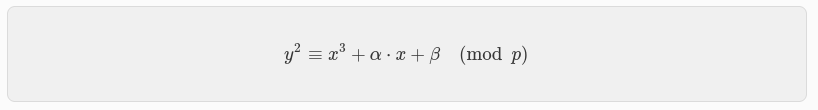
Los valores específicos de α, β y p utilizados en esta curva han sido cuidadosamente seleccionados para proporcionar propiedades criptográficas sólidas y un rendimiento eficiente en el contexto de los contratos de cuenta nativos en Starknet.
En particular, los valores de α, β (notese que es π “PI” sin decimales usando 67 digitos) y p son los siguientes:
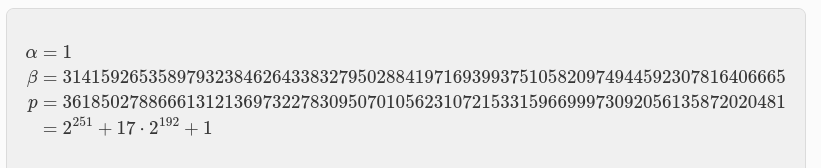
Estos valores aseguran que la curva elíptica Stark-friendly cumple con los requisitos de seguridad necesarios para su aplicación en sistemas criptográficos.
Además se utiliza un punto generador (G) específico asociado a esta curva. El punto generador G se define como:
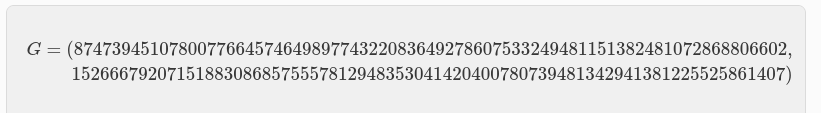
Este punto generador desempeña un papel fundamental en el esquema de firmas digitales ECDSA, permitiendo la generación de claves públicas, como aprendimos al momento de hablar del Generador de Claves.
La elección de la curva elíptica Stark-friendly y el punto generador G asociado a ella proporcionan una base sólida y optimizada para la implementación de esquemas criptográficos en el entorno de Starknet. Estos elementos garantizan la seguridad y eficiencia necesarias para la creación de contratos de cuenta nativos y la verificación de firmas digitales en el sistema.
Si desea probar y adentrarse en el despliegue de cuentas en Starknet, o si está interesado en aprender cómo se generan y calculan off-chain, y luego financiar esas cuentas para que los contratos de cuenta se autodesplieguen, le animamos a seguir los ejercicios oficiales de Starknet-Edu Account o las Guías Completas Cairo 1 proporcionadas por Starknet-Es para realizar pruebas reales.
My Braavos - Secp256r1
Comencemos explorando un dato interesante relacionado con la curva elíptica vista en capítulos anteriores, la secp256k1. En este contexto, la k hace referencia a Koblitz, un destacado matemático cuyas contribuciones fueron fundamentales para el desarrollo de la criptografía y la teoría de números.
Por otro lado, en el caso de secp256r1, la r significa random, resaltando el énfasis en el proceso de selección aleatoria de parámetros utilizado en esta curva elíptica.
Braavos ha incorporado la firma y validación de transacciones utilizando secp256r1, lo que brinda una excelente experiencia al usuario final al permitir transacciones con firma biométrica directamente en el dispositivo del usuario, añadiendo así un nivel adicional de seguridad. Puedes encontrar más detalles sobre esta implementación en el blog de Braavos, donde presentan una interesante Pirámide de Seguridad AA.
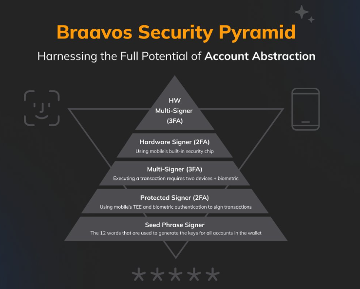
Podemos ver en la cúspide de la pirámide al Multi-Signer (3FA). El Multi-Signer combina la protección de la frase de recuperación (seed phrase) en la extensión del navegador y el Hardware Signer o Protected Signer utilizando el dispositivo móvil.
Ahora se requieren dos firmas de dos claves diferentes para ejecutar la transacción en la cadena, obteniendo una autenticación de 3FA:
- Algo que sabemos: la clave derivada de tu frase de recuperación en la extensión del navegador.
- Algo que tenemos: tu dispositivo móvil.
- Algo que somos: tu huella dactilar o identificación biométrica facial.
Cabe destacar que aunque se ha agregado otro firmante, no se ha añadido otra seed phrase, esto también tiene el beneficio adicional de alejarse de las seed phrase a una mejor seguridad en los dispositivos móviles/computadoras portátiles modernas, y seguridad superior cuando el dispositivo del usuario admite un chip de seguridad dedicado, como el elemento seguro Titan de Android o Enclave Secure de Apple, etc.
Este chip Secure Enclave/Titan es un subsistema dedicado y aislado, totalmente separado del procesador de aplicaciones que puede generar claves privadas y mensajes de signo. Genera las teclas utilizando un generador interno de números aleatorios verdaderos (TRNG) y firma mensajes a través de la curva elíptica secp256r1 a través de su acelerador interno de claves públicas (PKA). Las claves privadas nunca abandonan el sistema seguro y son desconocidas / inaccesibles para cualquier persona, ni siquiera para el usuario o para la aplicación en sí.
Esto significa que incluso si el núcleo del procesador de la aplicación del dispositivo se ve comprometido, ¡Nuestras claves se mantendrán seguras!

Vemos que esta implementación de la firma ECDSA secp256r1 en Cairo no es nativa, lo que significa que no tiene un Builtin dedicado nativo, esto puede llevar a un alto costo de gas al validar la firma. Sin embargo, Braavos es uno de los que han adoptado esta maravillosa novedad y está trabajando en mejorar la eficiencia de este proceso.
Además, aprovechando la funcionalidad de Multi-Call incorporada, los usuarios pueden agrupar múltiples transacciones en una única transacción atómica. Esto no solo acelera y reduce los costos de las transacciones, sino que también permite a los usuarios aprobar la cantidad exacta que desean depositar, lo cual mejora la seguridad al eliminar la necesidad de aprobación infinita
En cuanto a la gestión de firmantes, cuando se añade un firmante adicional, como un Hardware Signer o Protected Signer, el firmante original basado en semillas ya no puede firmar transacciones, a menos que se solicite la eliminación del firmante adicional y se regrese al firmante basado en semillas. Esta solicitud tiene un retraso de tiempo (actualmente de 4 días) para su procesamiento.
Por otro lado, la función de multifirma permite configurar la cuenta en modo de multifirma (actualmente admite 2 de 2), lo que significa que ninguna transacción se ejecutará hasta que los 2 firmantes definidos en la cuenta firmen la transacción. La seed phrase puede solicitar la desactivación de la multifirma, pero esto también tiene un retraso de tiempo (actualmente 4 días) antes de que se haga efectiva.
Vemos la importancia de las firmas y como vimos en el contexto del PQS, entendemos la relevancia de poder modificar nuestros esquemas de verificación de firmas, como la utilización de Lattice o Kyber, por ejemplo. Ahora, centrémonos en aprender cómo creamos una Stark Key para StarkEx, el motor de escalabilidad de Starknet.
Creación de una Stark Key en StarkEx
Es importante comprender cómo StarkEx se comunica con otras billeteras en términos de firmas, y cómo mantiene todo el motor de transacciones y pruebas STARKs en su interior.
StarkEx ofrece soluciones altamente especializadas para diferentes aplicaciones que deseen construir sobre su servicio, y esto es parte de lo que StarkWare, como compañía, proporciona a grandes empresas o cualquier otra entidad que desee aprovechar su conjunto de profesionales y servicios adaptables.
Aplicaciones populares como Sorare, Rhino y Apex Pro, por ejemplo, aprovechan las soluciones ofrecidas por StarkWare. Estas aplicaciones específicas se construyen sobre el marco de Starknet. Si bien no profundizaremos en los detalles específicos de estas aplicaciones aquí, se recomienda visitar la Biblioteca de Layer 2 en Español para obtener información más detallada sobre cada una de ellas y comprender mejor cómo se integran en las soluciones de escalado de capa 2 de Ethereum.
Para utilizar StarkEx y asociar tu cuenta de MetaMask u otra billetera a Starknet, es necesario crear una Stark Key. StarkEx admite diferentes tipos de billeteras y métodos para crear esta clave, dependiendo de cómo se utilizará posteriormente. A continuación, se detallan las opciones disponibles:
Billeteras compatibles con BIP32
Si estás utilizando una billetera compatible con BIP32, como Ledger, se recomienda seguir el EIP-2645. Este estándar describe una ruta denominada starkPath y un algoritmo de derivación de clave que utiliza esta ruta para obtener la starkPrivateKey.
La starkPath está compuesta por cuatro parámetros pasados y dos parámetros internos, y sigue la siguiente estructura:
m/purpose'/layer'/application'/ethAddress1'/ethAddress2'/index
Los parámetros externos pasados son los siguientes:
- Purpose: el número de EIP correspondiente (en este caso, 2645).
- Layer: se utiliza para diferenciar entre tecnologías y se calcula como
sha256(layer) & ((1 << 31) - 1)). En el contexto de StarkEx, el valor es579218131según lo descrito en el EIP-2645. - Application: sirve para diferenciar entre aplicaciones y se calcula como:
sha256(application_name) & ((1 << 31) - 1)). - Index: permite tener múltiples claves por dirección de Ethereum.
Los parámetros internos usados son los siguientes:
- ethAddress1: Los 31 LSB de la dirección Ethereum del usuario, es decir,
(ethAddress & 1 << 31) - 1 - ethAddress2: Los 31 LSB siguientes de la dirección Ethereum del usuario, es decir,
(ethAddress >> 31) & 1 << 31) -.
Además, es importante que las billeteras compatibles con BIP32 mantengan un estado persistente en relación con su propia dirección de Ethereum.
Billeteras NO compatibles con BIP32
Si estás utilizando una billetera que no es compatible con BIP32, como MetaMask, se recomienda seguir el siguiente proceso:
- El usuario firma un mensaje utilizando su clave privada de Ethereum a través de MetaMask u otra billetera similar. Se recomienda utilizar el estándar IP-712 para brindar transparencia al usuario durante el proceso de firma. Es importante que el mensaje incluya una advertencia, indicando al usuario que so1lo debe firmarlo si proviene de un dominio específico.
- La firma
(r, s, v)se utiliza como entrada para el algoritmo de derivación de clave, que generará lastarkPrivateKey. Para realizar este cálculo, puedes utilizar la biblioteca StarkEx Crypto SDK. Primero, llama a la funcióngetPrivateKeyFromEthSignaturepara obtener la clave privada a partir de la firma, y luego utiliza la funciónprivateToStarkKeypara calcular laStarkKey.
Al seguir estos pasos, podrás crear una Stark Key asociada a tu cuenta de MetaMask u otra billetera compatible. Esta clave te permitirá interactuar con StarkEx y otras aplicaciones dentro del ecosistema de Starknet, realizar transacciones seguras y aprovechar las funcionalidades ofrecidas por esta plataforma.
Starknet y Funciones Hash
En capítulos anteriores aprendimos la importancia de las firmas, el poder de AA y la asociación de los hash dentro del ecosistema de Starknet y StarkEx. Ahora, profundicemos en cómo se utilizan y los diferentes tipos de hash que podemos encontrar.
Dominio y rango
Todas las salidas de las funciones de hash se mapean eventualmente a elementos en 𝔽ₚ con p = 2²⁵¹ + 17 ⋅ 2¹⁹² + 1 como vimos en la Stark Curve.
Las funciones hash son componentes clave en las especificaciones de Starknet, y se utilizan para mapear las salidas de los cálculos a elementos en el campo finito 𝔽ₚ. A continuación, explicaremos las tres funciones hash utilizadas en Starknet de manera más clara:
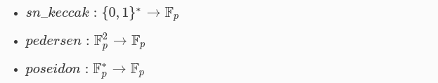
- sn_keccak: Esta función hash se basa en el algoritmo KECCAK, que es una familia de funciones hash criptográficas como vimos antes. Su dominio es el conjunto de cadenas de bits compuestas por ceros y unos
{0,1}*y su rango es el campo finito𝔽ₚLa función toma una cadena de bits como entrada y produce una salida en el campo finito𝔽ₚ. - Pedersen: La función hash Pedersen es una función hash computacionalmente segura que se utiliza en la construcción de criptografía de compromiso cero y otras primitivas criptográficas. Su dominio es el conjunto de pares de elementos del campo finito
𝔽²p, dondepes un número primo, y su rango es el campo finito𝔽p. La función toma un par de elementos del campo finito𝔽²pcomo entrada y produce una salida en el campo finito𝔽p. - Poseidon: La función hash Poseidon es una función hash criptográfica. Su dominio es un conjunto de elementos del campo finito
𝔽p, que incluye el cero y los elementos inversos multiplicativos, y su rango también es el campo finito𝔽p. La función toma un conjunto de elementos del campo finito𝔽pcomo entrada y produce una salida en el campo finito𝔽p.
Las funciones de hash mencionadas son añadidas como Builtin (AIR integradas específicas de aplicaciones), que se utilizan como herramientas adicionales en el protocolo para garantizar la seguridad y la integridad de las transacciones y los datos.
Estas funciones hash desempeñan un papel fundamental en las operaciones de Starknet al garantizar la integridad y seguridad de los cálculos realizados en el sistema.
Keccak Starknet
Keccak en Starknet es una implementación específica de la función hash Keccak256 adaptada para su uso en la red Starknet. Proporciona un método confiable y eficiente para calcular hashes dentro del entorno de Starknet.
Generalmente denotado por sn_keccak, se define como los primeros 250 bits del hash Keccak256 (esto es simplemente Keccak256 ampliado para ajustarse a un field element “elemento de campo”).
Pedersen Hash Starknet
El Pedersen hash es una función hash criptográfica utilizada en criptografía propuesta por Torben Pedersen en 1991.
Uno de los aspectos interesantes del esquema de compromiso de Pedersen es su propiedad homomórfica, que permite realizar la adición entre dos compromisos. En otras palabras, dados dos mensajes m₁ y m₂, y sus respectivas aleatoriedades r₁ y r₂, el Pedersen hash permite combinarlos de manera segura.
La función Pedersen Hash utilizada en Starknet es resistente a colisiones para entradas de longitud fija, siempre y cuando la función de codificación subyacente sea inyectiva. Una función inyectiva asigna elementos distintos de su dominio a elementos distintos de su codominio, esto hace que el Pedersen hash sea resistente a ciertos tipos de ataques, como colisiones y preimágenes.
Sin embargo, es importante destacar que la implementación y el contexto en el que se utilice esta función pueden influir en su resistencia. Para obtener más información se recomienda realizar una lectura sobre Pedersen hashes in Practice.
En Starknet, se utiliza la EC amigable STARK curve sobre el campo finito 𝔽ₚ para calcular el Pedersen hash de manera eficiente y segura.
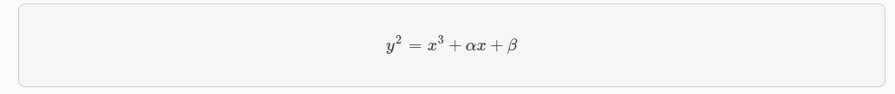
- α = 1
- β = 31415926535897932384626433832795028841971693993751058209749 44592307816406665
Los parámetros α y β de la curva son importantes en términos de seguridad y eficiencia en los algoritmos utilizados en la construcción del Pedersen hash y los protocolos de ZKP o basados en STARK.
Dada una entrada (a, b) ∈ 𝔽²p, se divide en alow, ahigh, blow y bhigh, donde la parte low consiste en los 248 bits menos significativos del elemento y la parte high consiste en los 4 bits más significativos del elemento. El cálculo del Pedersen hash se define de la siguiente manera:

En esta fórmula, [P]x denota la coordenada x del punto P. Para calcular el hash, se realiza una combinación lineal de los puntos P0, P1, P2 y P3, ponderados por los valores alow, ahigh, blow y bhigh, respectivamente. Luego, se suma el punto shift_point y se extrae la coordenada x del resultado.
Los valores de las constantes shift_point, P0, P1, P2 y P3 se encuentran en el archivo fast_pedersen_hash.py. Este archivo contiene la implementación específica del algoritmo necesario para calcular el Pedersen hash.
No se trata de puntos en la EC en sí misma, sino de valores específicos que se han elegido para el cálculo del hash y tampoco están relacionadas con la EC ni con el punto generador G, revise minuciosamente la información oficial en caso de querer hacer pruebas sobre Stark Curve o Hash en Starknet. Estas constantes se eligen de forma independiente para el cálculo del hash y se utilizan en combinación con los valores de entrada para obtener el hash resultante.
Poseidon hash Starknet
La función Poseidon hash es un ZK-friendly Hashing, pertenece a una familia de funciones hash diseñadas para ser muy eficientes en circuitos algebraicos. Como tal, pueden ser muy útiles en sistemas ZK proof como STARKs y otros.
Poseidon es una construcción de esponja basada en la permutación Hades, la estrategia de diseño Hades se basa en dividir el proceso en diferentes rondas para garantizar la seguridad y eficiencia del algoritmo:
- En las primeras rondas, denominadas
Rf, se aplican lasS-boxesal estado completo. LasS-boxesson funciones no lineales que mezclan y transforman los datos. En esta etapa inicial, se busca lograr una alta dispersión de los bits en el estado. - Después de estas rondas iniciales, se llevan a cabo las rondas intermedias, denominadas
RP. En cada ronda intermedia, se aplica únicamente unaS-box, mientras que el resto del estado permanece sin cambios, es decir, se utiliza una función identidad en lugar de lasS-boxesfaltantes. Esta simplificación reduce el costo computacional y la complejidad del algoritmo. - Finalmente, en las últimas rondas, nuevamente se utilizan las
S-boxespara el estado completo. Estas rondas finales, al igual que las rondas iniciales, permiten obtener una mezcla y transformación adicional de los datos.
Para una revisión más profunda sobre su integridad en sistema de Proof pueden revisar POSEIDON: A New Hash Function for Zero-Knowledge Proof Systems (Updated Version).
La versión de Poseidon utilizada en Starknet se basa en una permutación de estado de tres elementos.
El campo 𝔽, sobre el que se definen las declaraciones aritméticas que utilizan Poseidon. A menudo es determinado por el sistema de prueba ZK. Lo más probable es que sea un subgrupo de primer orden del grupo de puntos de una curva elíptica. Poseidon mapea secuencias de elementos 𝔽 a una secuencia de longitud fija de elementos 𝔽.
A continuación, se define el Poseidon hash de hasta 2 elementos, y también se menciona una versión que admite un número arbitrario de entradas.
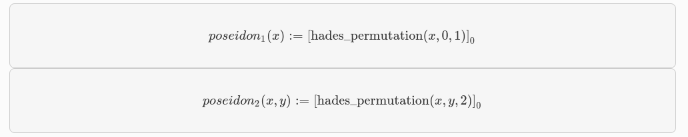
Hashing de Array (matrices)
En este capítulo, explicaremos cómo se realizan los hashings de Arrays (matrices) utilizando las funciones Pedersen y Poseidon en el contexto de Starknet. Estas operaciones son fundamentales para garantizar la integridad y seguridad de los cálculos realizados en el sistema.
El hashing de un array implica aplicar la función de hash correspondiente a cada elemento del array, de manera secuencial o iterativa. Esto permite resumir y representar de manera compacta la información contenida en el array, independientemente de su longitud o contenido específico.
El hashing de un array es útil en muchas aplicaciones, como la verificación de integridad de datos, la indexación eficiente de información y la identificación única de elementos.
Pedersen
La función hash Pedersen, denotada como h, se utiliza para calcular el hash de un array de elementos de campo. Consideremos un arreglo a₁, a₂, ..., aₙ que contiene n elementos. La definición de h(a₁ a₂, ..., aₙ) es la siguiente:
- Comenzamos con un valor inicial de 0.
- Aplicamos la función de hash h al primer elemento a₁ junto con el valor inicial. El resultado se convierte en el nuevo valor inicial.
- Continuamos aplicando la función de hash h al siguiente elemento a₂ junto con el valor anteriormente obtenido. Nuevamente, el resultado se convierte en el nuevo valor inicial.
- Repetimos este proceso hasta llegar al último elemento aₙ, aplicando la función de hash en cada paso.
- Finalmente, aplicamos la función de hash h al último elemento an junto con el valor obtenido en el paso anterior.
De esta manera, obtenemos el resultado final que representa el hash del array completo.
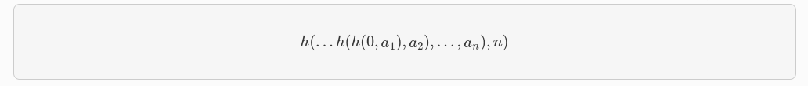
Esta construcción en capas nos permite combinar de manera secuencial los elementos del array a medida que calculamos el hash. Cada iteración agrega un nivel adicional de seguridad y complejidad al resultado final.
Poseidon
La función de hash Poseidon utiliza la permutación Hades, representada por hades: 𝔽³ₚ→𝔽ₚ, con los parámetros de Starknet. Dado un array a₁, a₂, ..., aₙ que contiene n field elements, definimos poseidon(a₁, a₂, ..., aₙ) como la primera coordenada de H(a₁, a₂, ..., aₙ; 0, 0, 0),
H(a₁, a₂, ..., aₙ; s₁, s₂, s₃)se define de la siguiente manera:
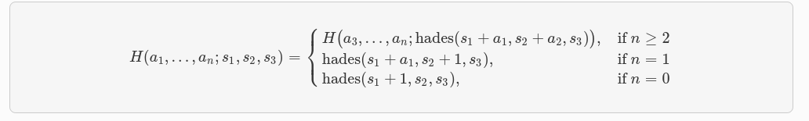
- Si n ≥ 2: entonces
H(a₁,a₂,...,aₙ;s₁,s₂,s₃) = H(a₃, a₄, ..., aₙ;hades(s₁ + a₁, s₂ + a₂, s₃)). - Si n = 1: entonces
H(a₁; s₁, s₂, s₃) = hades(s₁ + a₁, s₂ + 1, s₃). - Si n = 0: entonces
H(); s₁, s₂, s₃) = hades(s₁ + 1, s₂, s₃).
En resumen, la función poseidon(a₁,a₂,...,aₙ) toma el array de field elements y aplica la permutación Hades en capas. Cada iteración de la permutación combina los elementos del array en función de los valores de s₁, s₂ y s₃, generando así una salida única. La primera coordenada de la salida final se considera el resultado de la función de hash Poseidon.
Esta construcción en capas y la utilización de la permutación Hades permiten obtener un hash seguro y resistente a ciertos ataques criptográficos.
S-T-ARKs
Ahora, adentrémonos en una de las partes más fascinantes del ecosistema, los STARKs (Scalable Transparent Argument of Knowledge) que se basan en matemáticas modernas, la existencia de funciones hash criptográficas seguras y resistentes a las colisiones. Los STARKs presentan variados beneficios, entre los cuales tenemos:
-
Seguridad poscuántica: los STARK son plausiblemente seguros frente a ordenadores cuánticos eficientes.
-
Eficiencia concreta: el prover STARK es al menos 10 veces más rápido que el prover SNARK y el prover Bulletproofs.
El verificador STARK es al menos 2 veces más rápido que el verificador SNARK y más de 10 veces más rápido que el verificador Bulletproof.
A medida que StarkWare continúe optimizando STARKs estos ratios probablemente mejorarán. Sin embargo, la longitud de una prueba STARK es ~100x mayor que la correspondiente SNARK y ~20x mayor que BulletProofs.
Puede encontrar una imagen animada de una comparativa con los datos expuestos sobre el proving time y verification time, tamaño de la prueba, configuración inicial y PQS entre STARKs y SNARKs, veremos cómo cada una cumple con distintas propiedades que les permite ser recomendadas para variados usos.
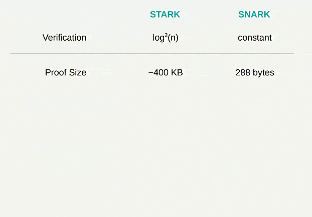
Ahora que tenemos conceptos más profundos sobre algunos aspectos de la criptografía, funciones hash y las operaciones detrás de cada una, veamos la importancia de la Integridad Computacional (CI), una propiedad fundamental para el día a día. Esta propiedad se refiere a la confianza en que la salida de un cálculo es correcta, permitiéndonos confiar en el saldo de una cuenta o en el monto de una factura en una tienda.
Pero, ¿cómo podemos garantizar esta integridad en un entorno digital donde no siempre podemos confiar en todas las partes involucradas?
Aquí es donde entra en juego la tecnología STARK, que se basa en estas Validity Proof para garantizar que la computación se realice correctamente, incluso si nadie está observando “INTEGRO”. STARKs utiliza matemáticas para lograr este objetivo y está diseñado para monitorear y garantizar la integridad de un gran cálculo realizado por un grupo de supercomputadoras poco confiables.
Las Validity Proofs son una herramienta crucial para garantizar la integridad y validez de los cambios realizados fuera de la cadena principal. Los sistemas de ZKP, en los que el prover posee información secreta que no es conocida por el verifier, son clave para las Validity Proofs. En el caso de Starknet, se trata de un Validity Rollup que utiliza STARKs.
Es importante tener en cuenta que ZK en Starknet, es una propiedad adicional que se utiliza para afirmar al probador que no tiene que revelar ninguna información incluida en el cálculo. Sin embargo, en el caso de Starknet como una capa 2 pública, los datos de transacción son públicos, lo que significa que no se ofrece privacidad como tal en transacciones, ocultar saldos u otras operaciones opacas, aunque los zk-STRAKs están listas para eso.
En Starknet, el enfoque principal es el Validity Rollup, que se utiliza para probar la validez del cálculo computacional, a diferencia de otros protocolos que utilizan el término ZK Rollup. Los STARKs en Starknet son Validity Proofs en lugar de ZK Proofs.
Los STARKs utilizan funciones de criptografía simétrica y hash criptográficos como componentes fundamentales en su construcción, las vulnerabilidades cuánticas conocidas en criptografía, como el algoritmo de Shor que puede factorizar números enteros grandes y romper sistemas de criptografía asimétrica basados en factorización, no afectan a las STARKs.
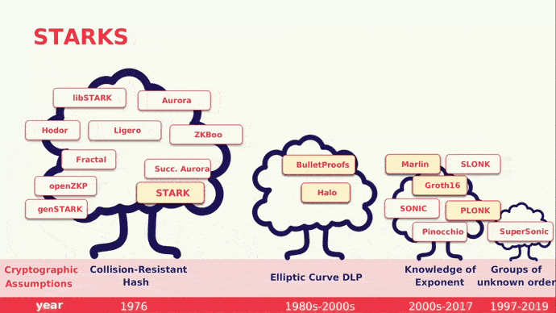
En la imagen superior, se puede observar que las pruebas pueden basarse en principios de criptografía simétrica o asimétrica, como aprendimos al principio del documento. Además, se pueden apreciar las diferentes propiedades de cada una en cuanto a escalabilidad, transparencia, seguridad en el futuro post-cuántico o tamaño de la prueba.
Como conclusión final antes de pasar a sus propiedades podemos ver para pruebas cortas como se recomienda utilizar Groth16 o SNARKs, mientras que para todo lo demás se sugiere STARK. Es importante destacar que este campo se encuentra en constante desarrollo y cada uno sigue optimizando sus propias soluciones. Tanto las STARKs como Starknet también experimentarán optimizaciones para mejorar STARK y/o admitir diferentes tipos de pruebas. Un ejemplo de esto es como Keep-Starknet-Strange el equipo detrás de Garaga, que está trabajando en diversas librerías criptográficas como Plonk, Groth16, SNARK, entre otras.
Si desea obtener más información sobre como los STARKs están en diversas arquitectura y sus diversos casos de uso para asentar las bases dela criptografía moderna, recomendamos leer el articulo que sacamos para L2 Español Profundizando en el Ecosistema STARKs
Propiedas de las STARKs
En capítulos anteriores hemos visto cómo diferenciar los tipos de pruebas según su criptografía, así como la comparativa entre varias de ellas. Ahora veamos cuáles son las dos propiedades esenciales en las pruebas y cómo se pueden lograr, antes de pasar a la definición de STARK
- Succintness: exigimos que nuestras pruebas y, en particular, el tiempo de verificación sean sucintos, es decir, que sean órdenes de magnitud más pequeños que el tiempo necesario para calcular nuestro programa. De lo contrario, no habría ninguna ventaja para el verificador en utilizar la prueba en lugar del cálculo original.
- Heurística Fiat-Shamir: este es un proceso mediante el cual podemos convertir una prueba interactiva en una no interactiva. Funciona proporcionando compromisos a los mensajes que formarían la interacción y las funciones hash se utilizan como fuente de aleatoriedad.
Uno de los protocolos que se utiliza en sistemas criptográficos, como los STARKs, para abordar el desafío de verificar eficientemente la corrección de grandes cálculos polinomiales es FRI (Fast Reed-Solomon Interactive Oracle Proofs of Proximity).
FRI utiliza códigos de corrección de errores Reed-Solomon para permitir pruebas interactivas eficientes. Esto significa que el probador puede proporcionar una prueba corta de la corrección del cálculo, mientras que el verificador puede verificar de manera eficiente la validez de la prueba. Este proceso interactivo permite realizar pruebas de proximidad, donde el verificador puede verificar de manera eficiente si el cálculo reclamado se acerca al resultado correcto sin tener que evaluar por completo todo el polinomio.
El conjunto de operaciones matemáticas, bases criptográficas, FRI y otras propiedades, como Fiat-Shamir, permite que las STARKs logren seguridad cuántica y escalabilidad, al tiempo que proporcionan una verificación transparente y eficiente de cálculos complejos.
Podemos decir entonces que los STARKs demuestran la correcta operación de una máquina virtual al demostrar que la traza de ejecución asociada es válida con respecto al AIR dado. En términos generales, las trazas de ejecución se organizan como tablas de números, y el protocolo STARK demuestra que estos números resuelven conjuntamente un sistema de polinomios.
Así vemos cómo algunas de estas propiedades, como Succintness, pueden venir de forma natural en las STARKs, y cómo el principio de Fiat-Shamir permite realizar pruebas interactivas. Además, contar con FRI como corrección de errores amplía las capacidades y visión de las STARKs, así que ahora vayamos a su definición
S = Scalable
Una de las principales ventajas de STARKs es que al trasladar un cálculo fuera de la cadena, se reducen de manera exponencial los costos de verificación en la cadena de bloques. El proceso de creación de una prueba fuera de la cadena tiene un costo similar al de solicitar a un único nodo de la cadena de bloques que realice el cálculo.
La producción de pruebas no resulta considerablemente más costosa que la ejecución del cálculo original, y la validación de las pruebas es exponencialmente más rápida que la ejecución del cálculo original. Además, las pruebas son considerablemente más cortas en tamaño que el cálculo original.
Otra ventaja importante es que a medida que se incrementa la cantidad de cómputo, su crecimiento es casi lineal. Esto la convierte en una opción ideal para procesar transacciones a gran escala.

Además, se puede aprovechar la capacidad de paralelización de pruebas por el prover y recursividad de los STARKs eficentes para mejorar significativamente la escalabilidad.

T = Transparent
La seguridad de las STARKs no depende de ceremonias de configuración elaboradas que puedan generar residuos tóxicos criptográficos, como ocurre en otras tecnologías de pruebas.
El uso de STARKs que tienen una base matemática compleja y que utilizan pseudoaleatoriedad proporciona un inicio de ceremonia transparente y elimina la necesidad de una configuración de confianza inicial (trusted setup), lo que mejora la seguridad y confiabilidad general del sistema criptográfico.
Una característica importante de las STARKs es su construcción basada en el trabajo de Micali. En esta construcción, la única criptografía necesaria para producir o validar una prueba corta 𝛑 es una función hash criptográfica H, como SHA-256 o Keccak. La elección de H se convierte en el único "parámetro global" que todos los usuarios del sistema de prueba deben conocer, y esta elección puede hacerse de manera pública, garantizando la transparencia de las pruebas criptográficas obtenidas a través de las STARKs.
Sin embargo siempre comparamos STARKs con SNARKs o pruebas derivadas de criptografía asimétrica como las Pinocchio de ECC, pero cada una tiene sus varientes y esquemas diversos, aunque para una explicación más clara cogeremos el ejemplo de VB en un artículo sobre zk-SNARKs.
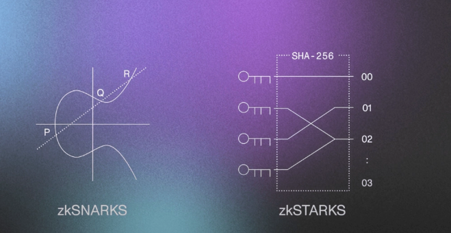
Imaginemos que tenemos un par de puntos P y Q, donde P * k = Q, y tienes un punto C, entonces no es posible obtener C * k a menos que C esté "derivado" de alguna manera que conozcas a partir de P. Esto puede parecer intuitivamente obvio, pero esta suposición en realidad no puede derivarse de ninguna otra suposición (por ejemplo, la dificultad del logaritmo discreto) que usualmente utilizamos al probar la seguridad de los protocolos basados en EC. Por lo tanto, los SNARKs se basan en una base un tanto más frágil que la ECC en general.
Supongamos que cae del cielo un par de puntos (P, Q), donde P * k = Q, pero nadie conoce el valor de k. Ahora, supongamos que yo presento un par de puntos (R, S) donde R * k = S. Entonces, la suposición de conocimiento del extremo de la curva (KoE, por sus siglas en inglés) implica que la única forma en que podría haber creado ese par de puntos es tomando P y Q, y multiplicándolos por un factor r que solo yo conozco. También hay que tener en cuenta que, gracias a la magia de las parejas de curvas elípticas, verificar que R = k * S no requiere conocer k; en su lugar, simplemente puedes comprobar si e(R, Q) = e(P, S), donde e es una función de emparejamiento de curvas elípticas.
Hagamos algo más interesante. Supongamos que caen del cielo diez pares de puntos: (P_1, Q_1), (P_2, Q_2) ... (P_10, Q_10). En todos los casos, se cumple que P_i * k = Q_i, ahora, supongamos que te proporciono un par de puntos (R, S) donde R * k = S.
¿Qué sabemos ahora? Que R es una combinación lineal de la forma P_1 * i_1 + P_2 * i_2 + ... + P_10 * i_10, donde yo conozco los coeficientes i_1, i_2 ... i_10, es decir, la única forma de obtener un par de puntos (R, S) de esta manera es tomando algunos múltiplos de P_1, P_2 ... P_10 y sumándolos, y hacer el mismo cálculo con Q_1, Q_2 ... Q_10.
Enrtonces tenemos que tener en cuenta que dado cualquier conjunto específico de puntos P_1…P_10 para los que puedas querer verificar combinaciones lineales, en realidad no puedes crear los puntos correspondientes Q_1…Q_10 sin conocer el valor de k, y si conoces el valor de k, entonces puedes crear un par (R, S) donde R * k = S para cualquier R que desees, sin necesidad de crear una combinación lineal.
Por lo tanto, para que esto funcione, es absolutamente imperativo que quien cree esos puntos sea confiable y realmente elimine k una vez que haya creado los diez puntos.
Se debe destacar la importancia de las ceremonias de ajuste inicial en ciertos casos, como en implementaciones de sistemas de votación. En estos casos, es crucial tener en cuenta quién ha sido el creador de los puntos y si existe alguna posibilidad de manipulación o si se ha eliminado correctamente el valor de k. Esto es necesario para lograr transparencia y evitar depender de estas verificaciones. En este sentido, los STARKs se presentan como una solución prometedora y EFICIENTE, ya que proporcionan una base sólida que elimina la necesidad de confiar en dichas ceremonias de ajuste inicial.
ARK = Argument of Knowledge
Los argumentos de conocimiento “ARK” son llevados a cabo por el prover que opera fuera de la cadena principal. Este probador se encarga de ejecutar el cálculo requerido para la prueba, utilizando las entradas auxiliares necesarias, la realización de la prueba fuera de la cadena principal es clave, ya que debe garantizar la integridad y la confiabilidad del proceso.
La principal ventaja de esta metodología es que permite una verificación auténtica y matemáticamente sólida. Después de que el probador haya realizado el cálculo, puede proporcionar la prueba generada a cualquier computadora o entidad interesada para su verificación, haciendo uso de ARK sto significa que cualquier sistema informático puede confirmar la validez de la prueba de manera independiente.
STARKS eficientes
En este capítulo, llegó el momento de comprender cómo los STARKs representan una versión más eficiente de los (PCP), un protocolo que permite establecer la exactitud de las declaraciones de CI, mediante una verificación aleatoria local en una prueba larga. Este protocolo se lleva a cabo entre un prover PCP y un verificador PCP.
En esta versión, se han realizado ajustes para mejorar la cohesión y la fluidez del texto. Se ha utilizado un lenguaje más claro y directo para explicar la relación entre los STARKs y los PCP, así como su función en la verificación de declaraciones de información computacional.
El prover PCP produce una cadena de prueba 𝚿 que codifica el seguimiento de cálculo de la declaración de CI, a pesar de que 𝚿 es más larga que la traza de cálculo de pasos T. Sin embargo, la cadena de prueba 𝚿 tiene la propiedad especial de que puede ser validada a través de una prueba probabilística que lee solo una pequeña parte de 𝚿.
El verifier PCP, al recibir la misma declaración de CI (A, x, y, T), puede validar la cadena de prueba 𝚿 leyendo aleatoriamente unas pocas ubicaciones de 𝚿 y luego realizar una "verificación local" económica en los valores leídos. El número de ubicaciones de lectura puede ser una pequeña constante, como 3, independientemente de la longitud de la traza de cálculo T.
Si la declaración de CI es verdadera, el verifier siempre aceptará. Sin embargo, si la declaración de CI es falsa, el verificador la rechazará con alta probabilidad, sin importar cómo se haya elegido la cadena de prueba 𝚿.
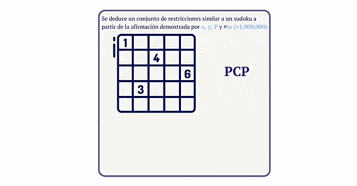
En la imagen animada podemos ver un ejemplo de PCP con un conjunto de resticciones un sudoku y ahora veremos como los STARKs eficiente pueden mejorar la eficiencia de las PCP y MPCP con IOPs.
IOPs - Interactive Oracle Proof
Las Interactive Oracle Proof (IOP) son un nuevo tipo de sistema de prueba que combina las propiedades clave de pruebas interactivas y PCP, las IOP permiten que un verifier esté convencido de la exactitud de una declaración al interactuar con un prover no confiable mientras lee solo algunos bits de los mensajes enviados por el prover. Las IOP se han vuelto muy prominentes en el diseño de sistemas de prueba eficientes en los últimos años.
Las construcciones STARK eficientes se obtienen combinando IOP eficientes y funciones hash criptográficas. La IOP le confiere al STARK su escalabilidad, mientras que la función hash le confiere al STARK su transparencia.
Las STARKs eficientes se basan en IOP, de manera informal, un prover y un verifier participan en un protocolo interactivo en el que, en cada ronda, el verifier envía algo de aleatoriedad 𝛔ᵢ al prover, y el prover responde con una proof larga 𝚿ᵢ. Al final de la interacción, el verificador realiza una verificación local aleatoria de todas las proof largas (𝚿₁,𝚿₂,…) enviadas por el prover a lo largo de la interacción.
Ahora, antes de sumergirnos en el mundo de los pasos de creación de un STARKs y su eficiencia, es importante comprender qué es un polinomio, ya que desempeñan un papel crucial en la construcción y verificación de STARKs. Son utilizados para representar y manipular datos de manera eficiente, lo que permite lograr un alto nivel de compresión y optimización en el proceso de verificación.
Polinomios
Los polinomios son una poderosa herramienta algebraica que se utiliza en diversas ramas de las matemáticas y la física. Estas expresiones algebraicas están formadas por términos que contienen variables y coeficientes. Los términos son la suma o resta de monomios, que son productos de constantes y variables elevadas a exponentes enteros no negativos.
Un polinomio puede tener una o varias variables, y su grado está determinado por el exponente más alto presente en los términos del polinomio. Por ejemplo, el polinomio 3x² - 2x + 1 es un polinomio de grado 2, ya que el término de mayor grado tiene un exponente de 2.
Los polinomios se pueden sumar, restar, multiplicar y dividir, y se emplean en ecuaciones algebraicas, cálculo, geometría y muchas otras ramas de las ciencias exactas.
¿Por qué no evalúa el verifier los propios polinomios?
- Porque, en realidad, el prover no envía todos los polinomios al verificador, si lo hiciera perderíamos la succintness, contienen más información que nuestra declaración original, por lo que el prover sólo proporciona un compromiso con los polinomios.
¿Qué propiedades de los polinomios son importantes en este caso?
- Los polinomios son buenos códigos de corrección de errores.
Si tenemos polinomios de grado d sobre un dominio de codificación D, y dos mensajes m₁ y m₂, entonces m₁ y m₂ diferirán en |D|-d puntos. Esto es importante porque queremos que la diferencia entre una declaración correcta y una incorrecta sea grande, de modo que sea fácil de encontrar.
Esto conduce a un buen muestreo, lo que ayuda a la sucintez, sólo necesitamos muestrear unos pocos valores para estar seguros de que la probabilidad de error es lo suficientemente baja como para ser insignificante.
- Disponer de pruebas eficaces de lote cero mantiene la sucintez.
Tener la capacidad de realizar pruebas de lote cero eficaces es fundamental. Esto nos permite demostrar de manera conjunta que un conjunto de elementos cumple con una determinada propiedad, en lugar de tener que probar cada elemento de forma individual, esta técnica de prueba en lote nos permite lograr una mayor concisión y eficiencia en la verificación.
Imaginemos que queremos demostrar que un polinomio de grado grande P(x) (grado ~ 10 millones) evalúa a 0 en los puntos 1...1 millón, pero queremos hacerlo con una sola consulta.
Imaginemos que nuestra afirmación es que P desaparece en estos puntos. Si el verifier sólo utiliza el muestreo, el prover podría hacer trampas fácilmente proporcionando un punto que se evalúe como 0, pero los otros 999.999 podrían ser distintos de 0.
Resolviendo el problema
Consideremos un conjunto S = 1...10⁶
Definir V como el polinomio que se anula en estos puntos, es decir: (x - 1)(x - 2)(x - 3)... el grado de V = tamaño de S y esto es beneficioso porque:
P(x) = P'(x) • V(x)Grado de P = Grado de P' - Tamaño de S.
La introducción de V(x) nos permite verificar en todo el dominio.
- Estos polinomios tienen una propiedad "multiplicadora". Podemos "envolver" una restricción alrededor de un polinomio.
Por ejemplo, si tenemos la restricción C, que indica que nuestra evaluación siempre será 0 o 1, podríamos expresarla como C(x) = x • (x - 1). Esto se podría interpretar como restringir una salida para que sea un booleano, lo cual es útil en términos de integridad computacional.
En lugar de tener x como un simple punto, podríamos considerar la evaluación de un de un polinomio P₁(x) en un punto específico, es decir, C(P₁(x)) = P₁(x)•(P₁(x)-1)
Los grados de los polinomios resultantes de la multiplicación son aditivos, por lo que el grado de C(x) = 2 • grado de P₁(x)
Podemos afirmar que si P₁(x) cumple con esta restricción para nuestro conjunto S, entonces, como mencionamos anteriormente, existe un polinomio P'(x) tal que:
C(P₁(x)) = P'(x) • V(x)
Si P₁(x) no cumpliera con la restricción (por ejemplo, si para un valor de x, P₁(x) = 93), entonces no podríamos encontrar esos polinomios, la igualdad no se cumpliría y habría un residuo en la ecuación anterior.
Creando un STARK
En los próximos capítulos del Libro de L2 sobre StarkWare, después de haber explicado algunas propiedades importantes de los polinomios y su relevancia, exploraremos la creación de un STARK desde sus fundamentos matemáticos más profundos. Para obtener una comprensión completa de los procesos involucrados y cómo se puede combinar un PCP con criptografía ligera para obtener un STARK, te recomendamos revisar la serie lanzada por Starkware, la cual ofrece una profundización más detallada desde el inicio.
A continuación os dejaremos los enlaces a cinco artículos fundamentales traducidos al español que complementarán tu aprendizaje:
- Comienza el Viaje
- Aritmetización I
- Aritmetización II
- Pruebas de Bajo Grado
- Un Frameword para STARKs Eficientes
Estos recursos adicionales te brindarán una visión más completa y práctica del proceso de creación de una STARK. También te recomendamos revisar los repositorios relacionados y los videos de creación de una STARK en Pioneros Clases 3, un Basecamp descentralizado en Español creado por Starknet, o el de inglés impartido por Eli Ben-Sasson
Nos interesa la Integridad Computacional (CI), por ejemplo, saber que el programa de Cairo que escribiste se calculó correctamente.
- Tenemos que pasar por una serie de transformaciones desde el trazado de nuestro programa, hasta la prueba.
- La primera parte de esto se llama aritmetización, y consiste en tomar nuestra traza y convertirla en un conjunto de polinomios.
- Nuestro problema se convierte entonces en uno en el que el prover intenta convencer a un verificador de que el polinomio es de grado bajo.
- El verificador está convencido de que el polinomio es de grado bajo si y sólo si el cálculo original es correcto (salvo una probabilidad infinitesimalmente pequeña).
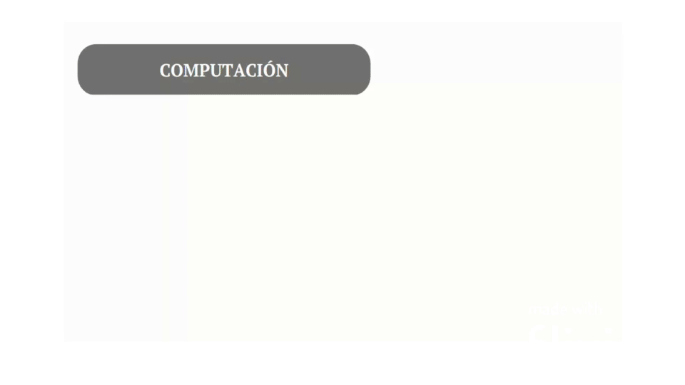
El uso de la aletoriedad es muy importante para el prover y el verifier, mientras que el prover utiliza la aleatoriedad para alcanzar el conocimiento cero, el verificador utiliza la aleatoriedad al generar consultas al prover, para detectar trampas por parte del prover.
Gran parte del trabajo que se realiza al crear una prueba consiste en garantizar que sea sucinta y que pueda elaborarse y verificarse en un tiempo razonable. Por tanto, nuestro plan consistirá en:
- Reformular la traza de ejecución como un polinomio,
- Extenderlo a un gran dominio,
- Transformarlo, utilizando las restricciones polinómicas, en otro polinomio que se garantiza que es de grado bajo si y sólo si la traza de ejecución es válida.
- Queremos lograr una verificación sucinta, en la que el verificador de la declaración CI requiera exponencialmente menos recursos que los necesarios para la repetición ingenua.
Aritmetización
Tenemos dos pasos principales en este proceso:
- Generación de una traza de ejecución y restricciones polinómicas.
- Transformar estos dos objetos en un único polinomio de bajo grado.
En términos de interacción prover-verifier, realmente lo que ocurre es que entre ambos acuerdan de antemano cuáles son las restricciones polinómicas.
A continuación, el prover genera una traza de ejecución y, en la interacción posterior, intenta convencer al verificador de que las restricciones polinómicas se cumplen en esta traza de ejecución, sin que el verificador lo vea.
La traza de ejecución es una tabla que representa los pasos del cálculo subyacente, donde cada fila representa un único paso y el tipo de traza de ejecución que buscamos generar debe tener la característica especial de ser sucintamente comprobable:
- Cada fila puede ser verificada basándose sólo en las filas que están cerca de ella en la traza, y el mismo procedimiento de verificación se aplica a cada par de filas.
Por ejemplo, imaginemos que nuestra traza representa un total en ejecución, con cada paso de la siguiente manera.
╔════════╦═══════════╦═══════╗
║ PASO ║ IMPORTE ║ TOTAL ║
╠════════╬═══════════╬═══════╣
║ 0 ║ 0 ║ 0 ║
╠════════╬═══════════╬═══════╣
║ 1 ║ 5 ║ 5 ║
╠════════╬═══════════╬═══════╣
║ 2 ║ 2 ║ 7 ║
╠════════╬═══════════╬═══════╣
║ 3 ║ 2 ║ 9 ║
╠════════╬═══════════╬═══════╣
║ 4 ║ 3 ║ 12 ║
╠════════╬═══════════╬═══════╣
║ 5 ║ 6 ║ 18 ║
╚════════╩═══════════╩═══════╝
Si representamos la fila como i , y la columna como j , y los valores como Aᵢ,ⱼ , podríamos escribir algunas restricciones sobre esto de la siguiente manera:
A₀,₂=0∀1 >= i <= 5 : Aᵢ,₂ − Aᵢ,₁ − Aᵢ-₁,₂ = 0A₅,₂ = 18
Se trata de restricciones polinómicas lineales en Aᵢ,ⱼ
Nótese que aquí estamos consiguiendo cierta concisión porque podríamos representar un número mucho mayor de filas con sólo estas 3 restricciones.
El sistema de restricciones aritméticas define al menos dos tipos de restricciones sobre la traza de ejecución algebraica:
- Restricciones de contorno: al principio o al final del cálculo, un registro indicado tiene un valor determinado.
- Restricciones de transición: dos tuplas de estado consecutivas cualesquiera evolucionan de acuerdo con la función de transición de estado. En conjunto, estas restricciones se conocen como representación algebraica intermedia o AIR.
Las STARKs avanzadas pueden definir más tipos de restricciones para tratar con la memoria o con la consistencia de los registros dentro de un ciclo.
Polinomio para nuestra traza
Siguiendo el capítulo anterior, en esta ocasión continuaremos definiendo un polinomio f(x) en el que los elementos de la traza de ejecución se obtienen a través de evaluaciones de f en potencias de algún generador g.
Recordemos que nuestro campo finito tiene generadores, los cuales utilizaremos para indexar los pasos de la traza. Para ello, consideraremos una secuencia de Fibonacci que nos permitirá establecer restricciones específicas, como la siguiente:
∀ x ∈ {1,g²,g³...g⁵⁰⁹}: f(g²x) ₋ f(gx) ₋ f(x) = 0
Esto restringe los valores entre las filas subsiguientes. También significa que los valores g son raíces de este polinomio.
Por lo tanto, podemos utilizar el enfoque que vimos anteriormente para proporcionar el polinomio de fuga utilizando el término (x - gⁱ) y a partir de él creamos la Composición Polinomial.
El hecho básico sobre polinomios y sus raíces es que si p(x) es un polinomio, entonces p(a)=0 para algún valor específico a, si y sólo si existe un polinomio q(x) tal que (x-a)q(x)=p(x), y deg(p)=deg(q)+1.
Esta expresión coincide con el polinomio de grado 2 como máximo si nuestra traza de ejecución ha sido correcta, es decir, ha obedecido a la restricción de paso que hemos definido.
Si la traza difiere de eso, entonces es poco probable que esta expresión produzca un polinomio de bajo grado.
Composición Polinomial
El Polinomio de Composición en su traducción también conocido como Composición Polinomial (CP), se realiza para demostrar eficazmente la validez del rastro de ejecución, nos esforzamos por alcanzar los dos objetivos siguientes:
- Componer las restricciones sobre los polinomios de la traza para hacerlas cumplir en la traza.
- Combinar las restricciones en un único polinomio (más grande), denominado Composición Polinomial, de modo que se pueda utilizar una única prueba de grado bajo para atestiguar su grado bajo.
Ampliando el polinomio
Como hemos visto antes, los polinomios pueden utilizarse para construir buenos códigos de corrección de errores, ya que dos polinomios de grado d, evaluados en un dominio considerablemente mayor que d, son diferentes en casi todas partes.
Observando esto, podemos extender la traza de ejecución pensando en ella como una evaluación de un polinomio en algún dominio, y evaluando este mismo polinomio en un dominio mucho mayor. Extendiendo de manera similar una traza de ejecución incorrecta, se obtiene una cadena muy diferente, lo que a su vez hace posible que el verificador distinga entre estos casos utilizando un pequeño número de consultas.
De restricciones polinómicas al problema de las pruebas de bajo grado
En general, si nuestro cálculo implica N pasos, la traza de ejecución estará representada por polinomios de grado inferior a N
f(X) = c₀ + c₁X + c₂X² +⋯+ cɴ-₁Xᴺ⁻¹
Los coeficientes cᵢ están en el campo 𝔽 y el límite N en el grado es típicamente grande, quizá del orden de unos pocos millones. A pesar de ello, estos polinomios se denominan de bajo grado.
Esto se debe a que el punto de comparación es el tamaño del campo. Por interpolación, toda función sobre 𝔽 puede representarse mediante un polinomio.
La mayoría de ellos tendrán un grado igual al tamaño total del campo, por lo que, comparado con éste, N es realmente bajo.
Este tipo de funciones, coherentes con un polinomio de bajo grado, también se conocen como códigos Reed-Solomon.
Tras la generación de la traza, el prover se compromete con ella. Recordemos que no queremos enviar los polinomios al verificador como un todo, pero necesitamos que el prover se comprometa con ellos.
En todo el sistema, los compromisos se ejecutan construyendo árboles de Merkle sobre las series de elementos de campo y enviando las raíces de Merkle al verificador.
Queremos que un verificador plantee al prover un número muy reducido de preguntas y decida si acepta o rechaza la prueba con un alto nivel de precisión garantizado. Idealmente, al verificador le gustaría pedir al prover que proporcione los valores en unos pocos lugares (aleatorios) en la traza de ejecución, y comprobar que las restricciones polinómicas se mantienen para estos lugares.
Una traza de ejecución correcta pasará naturalmente esta prueba.
Sin embargo, no es difícil construir una traza de ejecución completamente errónea (especialmente si sabíamos de antemano qué puntos se comprobarían), que viole las restricciones sólo en un punto de la traza único y, al hacerlo, llegar a un resultado completamente alejado y diferente. Identificar este fallo mediante un pequeño número de consultas aleatorias es altamente improbable.
Pero recuerda que los polinomios tienen algunas propiedades útiles aquí:
- Dos polinomios (diferentes) de grado
devaluados en un dominio considerablemente mayor quedson diferentes en casi todas partes.
Así que si tenemos un prover deshonesto, que crea un polinomio de bajo grado representando su traza (que es incorrecta en algún punto) y lo evalúa en un dominio grande, será fácil ver que este es diferente al polinomio correcto.
Pruebas de Bajo Grado
Las pruebas de bajo grado son realmente el corazón del proceso de verificación.
El supuesto de comprobación de bajo grado establece la existencia de un verificador probabilístico que comprueba si una función f es de grado como máximo d ≪ |𝔽|. El verificador debe distinguir entre los dos casos siguientes:
- La función
fes igual a un polinomio de bajo grado: es decir, existe un polinomiop(x)sobre𝔽, de grado menor qued, que coincide confen todas partes. - La función
festá lejos de TODOS los polinomios de bajo grado: por ejemplo, necesitamos modificar al menos el 10% de los valores defantes de obtener una función que concuerde con un polinomio de grado inferior ad.
La aritmetización muestra que un prover honesto que trate con una afirmación verdadera caerá en el primer caso, mientras que un prover (posiblemente malicioso) que intente "probar" una afirmación falsa caerá, con alta probabilidad, en el segundo caso.
Otra forma de ver esto es que el polinomio de traza correcto combinado con las restricciones será necesariamente de grado bajo, el grado proviene del número de pasos en nuestra traza (probablemente unos pocos millones), y la combinación de esto con los polinomios de restricción (probablemente < 10).
En general, cabría esperar que los polinomios "correctos" tuvieran un grado de alrededor de 10⁷ , mientras que un prover tramposo que eligiera puntos al azar del campo 𝔽 obtendría, tras la interpolación, polinomios de grado comparable al tamaño del campo, es decir, del orden de 2²⁵⁶
FRI
FRI son las siglas de Fast Reed-Solomon IOP of Proximity, es un protocolo que establece que un polinomio comprometido tiene un grado limitado.
El FRI es complejo y gran parte del procesamiento que lo compone está diseñado para que las pruebas sean factibles y sucintas. También hay mucho procesamiento involucrado con la protección contra diversos tipos de ataques que podrían ser realizados por el prover, y garantizar que todo se lleva a cabo en el conocimiento cero.
Su objetivo es encontrar si un conjunto de puntos se encuentran mayoritariamente en un polinomio de bajo grado y puede alcanzar una complejidad de prueba lineal y una complejidad de verificación logarítmica.
En general, hay 2 etapas : commit y query, contenidas en los siguientes pasos repetidos.
- El verifier envía un número aleatorio al prover.
- El prover genera un nuevo polinomio.
- El verifier genera los conjuntos puntuales de consultas y los envía al prover.
- El prover evalúa los valores polinómicos correspondientes.
- El verifier realiza una comprobación de validez.
Aprendamos como FRI es un protocolo entre un probador y un verificador, que establece que una codeword dada pertenece a un polinomio de grado bajo.
El prover conoce explícitamente este codeword, mientras que el verificador sólo conoce su raíz Merkle y las hojas de su elección, suponiendo la validación satisfactoria de las rutas de autenticación que establecen la pertenencia de las hojas al Merkle Tree.
Una de las grandes ideas para los sistemas de pruebas de los últimos años ha sido la técnica de dividir y doblar. La idea es reducir una afirmación a dos afirmaciones de la mitad de tamaño. A continuación, ambas afirmaciones se fusionan en una sola utilizando pesos aleatorios proporcionados por el verificador.
Después de muchos pasos, la afirmación se ha reducido a una de tamaño trivial que es verdadera si y sólo si (modulo alguna degradación de seguridad insignificante) la afirmación original era verdadera.
El Verifier inspecciona los Merkle Tree (en concreto: pide al prover que proporcione las hojas indicadas con sus rutas de autenticación) de rondas consecutivas para comprobar una relación lineal simple.
Para los provers honestos, el grado de los polinomios representados también se reduce a la mitad en cada ronda y, por tanto, es mucho menor que la longitud de la codeword. Sin embargo, para los provers maliciosos, este grado es uno menos que la longitud de la codeword. En el último paso, el prover envía una codeword no trivial correspondiente a un polinomio constante.
Después de explorar los diferentes pasos en la creación detrás de un STARKs y la importancia de las pruebas de integridad, es evidente que estas pruebas son fundamentales para garantizar la seguridad y confiabilidad de los sistemas del Futuro.
Leve introducción Cairo
Para concluir esta primera parte del L2 Book sobre Starkware, antes de adentrarnos en los próximos temas sobre la arquitectura de Starknet y Cairo, haremos una breve introducción a Cairo y su relación con la CVM (Máquina Virtual de Cairo). En este contexto, es relevante comprender cómo todos los pasos de un cálculo pueden ser representados mediante polinomios, utilizando lo que se conoce como la Representación Algebraica Intermedia (AIR).
Los bloques de cálculo pueden ser representados como AIR y tienen la capacidad de combinarse entre sí, lo que se convierte en la base de Cairo. Para ilustrarlo mediante una analogía con el hardware:
- ASIC (AIR)
- CPU (varias AIR)
El nombre Cairo deriva de una CPU construida a partir de AIRs:
- (CPU-AIR, Oh genial -> CAIRO)
Cairo es un lenguaje funcional de alto nivel, no determinista y Turing completo, que cuenta con un modelo de memoria basado en registros y un compilador que produce una tabla de pasos computacionales llamada traza.
En los programas escritos en Cairo, se especifican los resultados que se consideran aceptables, no cómo obtenerlos.
En los capítulos anteriores, hemos visto cómo, en el proceso de construcción de pruebas STARK, el prover utiliza esta traza para crear Representaciones Algebraicas Intermedias (AIRs). Posteriormente, estas AIRs se combinan y convierten en pruebas STARK.
Conclusión
Con esto, concluimos nuestro profundo viaje por el mundo de la criptografía, explorando la generación de claves privadas y públicas, así como sus diversas implementaciones. Hemos aprendido cómo Starknet y los esquemas de firmas pueden prevenir ataques criptoanalíticos, y hemos visto cómo las STARKs han sido diseñadas desde su inicio para brindar seguridad matemática frente a ataques cuánticos, siguiendo sus principios fundamentales.
Starknet está sentando las bases de la criptografía moderna y creando un ecosistema escalable, íntegro y seguro por una de las mayores descentralizada como Ethereum, escalemos juntos.
Introducción Parte 2
¡Hola comunidad! 👋
Nos complace presentar la segunda parte del libro L2 en Español sobre StarkWare. En estos capítulos, nos enfocaremos en la fascinante arquitectura de Starknet y el poderoso lenguaje de programación, Cairo. Antes de profundizar en ello, agradecemos a los expertos y colaboradores que han aportado su valioso conocimiento para enriquecer este documento y han sido parte activa en el éxito de esta investigación sobre la arquitectura de StarkWare.
En esta etapa, estamos emocionados de adentrarnos en el desarrollo detrás de StarkWare, un ecosistema en el que brillantes mentes trabajan en conjunto para alcanzar logros extraordinarios.
¿Te sientes inspirado para ser parte de esta comunidad de mentes brillantes? Si es así, te animamos a acompañarnos en este viaje. Nos sumergiremos en los detalles más profundos, exploraremos algunos conceptos clave para establecer una sólida base y contextualizar los componentes como StarkEx, Starknet, SHARP, Secuenciadores, Starknet Stack y mucho más.
¡Prepárate para un emocionante recorrido por el mundo de Starknet y Cairo! ¡Comencemos! 🚀
Arquitectura Starknet y Cairo
Starknet es una solución escalabilidad de de capa 2 para ETH que ofrece transacciones rápidas, seguras y de bajo costo. Funciona como un Validity Rollup (confundidos o mal nombrados a veces como ZK Rollup) que utiliza sistemas criptográficos llamados STARKs para reducir los costos de computación.
Starknet introduce una innovadora solución de Capa 2 para ETH, que aprovecha la tecnología de STARKs para revolucionar la escalabilidad y seguridad. En este documento ofreceremos información sobre la estructura de Starknet y Cairo, en los primeros capítulos daremos una visión técnica detallada de la arquitectura de la red Starknet y sus componentes clave Sequencers, Provers y Nodes. Estos actores trabajan en armonía, impulsando el procesamiento eficiente de la red y asegurando la integridad de las transacciones. Aunque Starknet se encamina hacia la descentralización total, actualmente se enfoca en el desarrollo para alcanzar este objetivo final.
Características Generales de Starknet
Veamos algunas caráteristicas básicas antes de pasar a componente y su arquitectura.
- Bajos costos de transacción: Los costos de transacción en Starknet son significativamente inferiores a los de Ethereum. Con próximas mejoras como Volition (disponibilidad de datos fuera de la cadena) y la implementación de EIP 4844 en L1, se espera que estos costos disminuyan aún más.
- Plataforma amigable para desarrolladores: Starknet proporciona un entorno que empodera a los desarrolladores para construir aplicaciones descentralizadas utilizando STARKs y el lenguaje de programación Cairo.
- Alto rendimiento y baja latencia: Las futuras versiones de Starknet tienen como objetivo aumentar el rendimiento de la red, reducir la latencia de las transacciones y disminuir los costos de las mismas.
- La Filosofía de Starknet: La filosofía de Starknet se centra en ser amigable para los desarrolladores. La red está diseñada con un claro enfoque en proporcionar a los desarrolladores una plataforma robusta, segura y poderosa para construir el futuro de la infraestructura y las aplicaciones descentralizadas.
- Rendimiento: Starknet ofrece mayor rendimiento, menor latencia y costos de transacción reducidos, facilitando así la creación de aplicaciones intensivas en cómputo.
- Cairo: El lenguaje de programación central de Starknet, Cairo, se actualiza constantemente y se mejora para brindar a los desarrolladores las mejores herramientas para aprovechar las pruebas de validez y la tecnología zk-STARKs.
- Enfoque en la comunidad: Starknet mantiene canales activos de comunicación y retroalimentación con la comunidad de desarrolladores a través de plataformas como Telegram y Discord.
- Creatividad: Starknet tiene como objetivo eliminar limitaciones y empoderar a los desarrolladores para construir el futuro de las aplicaciones descentralizadas. Permite crear cosas que nunca antes se pudieron construir debido a las limitaciones de la tecnología subyacente.
- Herramientas: Starknet se compromete a proporcionar una amplia gama de herramientas de desarrollo, incluyendo SDKs para diversos lenguajes, un marco de pruebas e implementación inspirado en Foundry (Protostar) y administradores de paquetes (Scarb).
En la próxima sección, nos sumergiremos en la arquitectura de Starknet y sus componentes fundamentales para comprender cómo construir aplicaciones web3 escalables. Te proporcionaremos un conocimiento profundo de los elementos clave de Starknet, lo que te permitirá desarrollar e implementar dApps de manera eficiente. Comencemos con una breve descripción de los componentes fundamentales que desempeñarán un papel crucial en el funcionamiento de la red y asegurarán que el ciclo de las transacciones sea escalable, rápido y económico.
Sequencers:
Los Secuenciadores (Sequencers) son componentes esenciales de la red Starknet y juegan un papel central al actuar como puntos de entrada para las transacciones. Son comparables a los validadores en Ethereum, y los ZK Rollups tienen la capacidad única de delegar ciertas tareas de la red, como la agregación y el procesamiento de transacciones, a entidades especializadas. Sin embargo, este proceso demanda recursos significativos debido a los altos requisitos de capacidad y continuidad.
En el ecosistema de Starknet y otras plataformas con ZK Rollups, se observa un paralelo similar. Estas redes externalizan el procesamiento de transacciones a estas entidades especializadas, denominadas Sequencers, quienes luego verifican su trabajo. La delegación de tareas a los Sequencers es clave para que los ZK Rollups puedan manejar una gran cantidad de transacciones sin poner en riesgo la seguridad de la red subyacente, y así los Sequencers desempeñan un papel esencial para lograr una mayor escalabilidad en Ethereum.
A diferencia de los mineros, cuya función es brindar seguridad en otras redes, los Sequencers no aportan seguridad, sino que ofrecen capacidad de transacción. Su labor consiste en agrupar múltiples transacciones en un solo batch, procesarlas y generar un bloque. Este bloque será luego verificado por el Verificador, al cual se le proporcionará una zk Proof que garantiza la Validez o Integridad de los datos, conocida como Validity Proof, y más concretamente un STARK específico de Starknet. El Prover es el encargado de generar este STARK y se asegura de que todos los datos de las transacciones sean correctos. Posteriormente, el Sequencer enviará todo a la red de Capa 1 como un rollup, una prueba única y compacta para que el Verificador compruebe que los datos son correctos y actualice el nuevo estado de la red.
Los Sequencers siguen un método sistemático para el procesamiento de transacciones:
- Agregación: Recopilan transacciones de los usuarios.
- Procesamiento: Los Sequencers procesan estas transacciones de acuerdo con las reglas definidas por la red.
- Agrupación: Las transacciones se agrupan en batchs o bloques para mayor eficiencia.
- Producción de Bloques: Los Sequencers producen bloques que contienen lotes de transacciones procesadas.
Los Sequencers deben ser confiables y estar altamente disponibles, ya que su función es fundamental para el buen funcionamiento de la red. Necesitan máquinas potentes y bien conectadas para desempeñar su papel de manera efectiva, ya que deben procesar transacciones de manera rápida y continua.
La hoja de ruta actual de Starknet incluye la descentralización del rol de secuenciador. Este cambio hacia la descentralización permitirá que más participantes se conviertan en Sequencers, contribuyendo a la robustez y seguridad de la red.
Provers:
En Starknet, el SHARP (Shared Prover) desempeña un papel esencial al realizar múltiples tareas, incluida la generación de la Validity Proof. Detallaremos estas diversas funciones en capítulos posteriores para comprender su importancia. Podemos entender al Prover como un componente que actúa en la segunda línea de verificación del sistema, y una de sus tareas principales es validar el trabajo de los Sequencers, especialmente cuando estos reciben el bloque producido por el Sequencers. Además, los Provers también tienen la responsabilidad de generar pruebas que demuestren que todos estos procesos se llevaron a cabo de manera correcta.
Los Provers necesitan incluso más potencia computacional que los Sequencers, ya que deben calcular y generar pruebas, un proceso que es computacionalmente pesado. Sin embargo, el trabajo de los Provers se puede dividir en varias partes, lo que permite la paralelización y la generación eficiente de pruebas. El proceso de generación de pruebas es asincrónico, lo que significa que no es necesario que ocurra de inmediato o en tiempo real. Esta flexibilidad permite distribuir la carga de trabajo entre varios Provers, cada uno trabajando en un bloque diferente, lo que facilita la paralelización y una generación más eficiente de pruebas.
El diseño de Starknet se basa en dos tipos de actores: los Sequencers y los Provers, que trabajan en conjunto para garantizar un procesamiento eficiente y una verificación segura de las transacciones.
En cuanto a las funciones de un Prover, podemos destacar:
- Recepción de Bloques: Los Provers obtienen bloques de transacciones procesadas de los Sequencers.
- Procesamiento: Los Provers vuelven a procesar estos bloques para asegurarse de que todas las transacciones dentro del bloque se hayan manejado correctamente.
- Generación de Pruebas: Después del procesamiento, los Provers generan una Validity Proof que demuestra el correcto procesamiento de las transacciones.
- Envío de Prueba a Ethereum: Finalmente, la Validity Proof se envía a la red de Ethereum para su validación. Si la Validity Proof es correcta, la red Ethereum acepta el bloque de transacciones.
Nodos:
Cuando se trata de definir qué hacen los nodos en Bitcoin o Ethereum, a menudo se interpreta erróneamente su papel como mantener un registro de cada transacción dentro de la red. Sin embargo, esto no es del todo preciso.
Los nodos actúan como auditores de la red, manteniendo el estado de la red, como cuánto Bitcoin posee cada participante o el estado actual de un contrato inteligente específico. Logran esto procesando transacciones y conservando un registro de todas las transacciones, pero eso es un medio para un fin, no el fin en sí mismo.
En el caso de Validity Rollup, específicamente dentro de Starknet, este concepto se invierte en cierta medida. Los nodos no necesariamente tienen que procesar todas las transacciones para obtener el estado. A diferencia de Ethereum o Bitcoin, los nodos de Starknet no están obligados a procesar cada transacción para mantener el estado de la red.
Existen dos formas principales de acceder a los datos del estado de la red:
- A través de una puerta de enlace de API.
- Mediante el protocolo RPC para comunicarse con un nodo.
Operar su propio nodo suele ser más rápido que usar una arquitectura compartida, como la puerta de enlace. A medida que avanza el tiempo, Starknet planea descontinuar las API y reemplazarlas por un estándar JSON RPC, lo que hará que operar su propio nodo sea aún más beneficioso.
Vale la pena señalar que alentar a más personas a ejecutar nodos aumenta la resistencia de la red y evita la sobrecarga del servidor, un problema que ha afectado a otras redes de Capa 2.
Actualmente, existen principalmente tres métodos principales para que un nodo lleve un registro del estado de la red:
- Reproducción de Transacciones Antiguas: Al igual que en Ethereum o Bitcoin, un nodo puede tomar todas las transacciones y volver a ejecutarlas. Aunque este enfoque es preciso, no es escalable a menos que se tenga una máquina potente capaz de manejar la carga. Si se pueden volver a reproducir todas las transacciones, el nodo puede convertirse en un Sequencer, como puede ser el caso del nuevo enfoque adaptado a Madara con Substrate, actuando como un Sequencer, Full Node o mucho más como veremos en su momento.
- Confiar en el Consenso de Capa 2: Los nodos pueden confiar en que los Secuencer ejecutan la red correctamente. Cuando el Secuencer actualiza el estado y agrega un nuevo bloque, los nodos aceptan la actualización como precisa.
- Verificación de la Validación de Pruebas en L1: Los nodos pueden monitorear el estado de la red observando L1 y asegurándose de que cada vez que se envía una prueba, reciben el estado actualizado. De esta manera, no tienen que confiar en nadie y solo necesitan realizar un seguimiento de la última transacción válida para Starknet.
Podemos encontrarnos una variedad de tipos de nodos, cada uno desempeñando un papel esencial en el funcionamiento y cada tipo de configuración de nodo presenta sus propios desafíos y oportunidades, ya que vienen acompañados de requisitos de hardware y suposiciones de confianza únicas.
A medida que nos adentramos en este universo descentralizado, es crucial entender cómo estos nodos interactúan y cómo contribuyen a la eficiencia y seguridad de Starknet. Desde aquellos que reproducen transacciones con potencia de procesamiento masiva, hasta los que confían en el consenso de Capa 2 con menor carga computacional, y aquellos que verifican la validación de pruebas en L1 con una huella más liviana, cada nodo tiene su lugar y su relevancia en esta red en constante evolución.
Nodos que Reproducen Transacciones:
Los nodos que reproducen transacciones requieren máquinas potentes para rastrear y ejecutar todas las transacciones. Estos nodos no tienen suposiciones de confianza, únicamente confían en las transacciones que ejecutan, garantizando que el estado en cualquier momento sea válido.
Nodos que Confian en el Consenso de Capa 2:
Los nodos que confían en el consenso de Capa 2 representan una opción de menor exigencia en cuanto a potencia computacional. Aunque necesitan un almacenamiento adecuado para mantener el estado, su carga de procesamiento de transacciones es más liviana, dado que se basan en una suposición de confianza. Inicialmente, Starknet estuvo centrado en un solo secuenciador, pero ha evolucionado hacia una red más descentralizada con la incorporación de componentes como Madara y Secuencers de Rust mejorados por Lambda, entre otros, los cuales serán detallados en la sección de Sequencers.
En este contexto, estos nodos depositan su confianza en que Starkware no interferirá con la red. Sin embargo, a medida que se implemente un mecanismo de consenso y selección de líderes entre los Sequencers, el nivel de confianza se modificará. En ese futuro escenario, los nodos solo necesitarán confiar en que un Sequencer que ha comprometido su participación para producir un bloque no estará dispuesto a perderla.
Nodos que Verifican la Validación de Pruebas en L1:
Los nodos que actualizan su estado basándose únicamente en la validación de pruebas en L1 requieren menos hardware y comparten los mismos requisitos que un nodo de Ethereum. Con la futura existencia de nodos ligeros de Ethereum, mantener un nodo de este tipo podría ser tan sencillo como usar un teléfono inteligente. No obstante, existe un compromiso a considerar la latencia. Las pruebas no se envían a Ethereum en cada bloque de manera constante, sino de forma intermitente, lo que provoca actualizaciones de estado retrasadas.
Para aumentar la frecuencia de las pruebas, incluso si no se envían a Ethereum de inmediato, se espera que un avance en el futuro permita que estos nodos reduzcan significativamente su latencia. Sin embargo, es importante tener en cuenta que este desarrollo aún está lejos en la hoja de ruta de Starknet
Componentes
Aprendamos como a medida que te embarcas en el viaje para construir aplicaciones web3 escalables, es esencial comprender la arquitectura de donde estás construyendo, en este caso tendrás que formarte sobre Starknet y sus diversos componentes. Este capítulo tiene como objetivo proporcionar una comprensión profunda de los elementos clave de construcción de Starknet, lo que te permitirá desarrollar e implementar aplicaciones descentralizadas (dApps) de manera eficiente.
En este capítulo, abordaremos temas como:
-
Nodos L2: Una visión general de alto nivel de los diferentes nodos de Starknet (Secuenciador, Full Nodes, Prover e Indexer) y sus funciones dentro de la red.
-
Ciclo de Vida de Transacciones: Una explicación detallada de los diferentes estados por los que pasa una transacción L2, discutiendo los beneficios y riesgos de considerar un state en particular como finality, como se añadido con la 0.12.0 directamente el Accepted_On_L2 eliminando el estado Pending y como la 0.12.1 empezará a cobrar y añadir las tx Rejected en el bloque, mejorando la eficiencia y seguridad de la red.
-
SHARP: Veremos el flujo de trabajo del SHARP, un componente en Starknet que actúa como un transporte público para las pruebas, permitiendo la agregación de múltiples programas Cairo para reducir costos y aumentar la eficiencia.
Utilizando SHARP, se generan pruebas STARK para programas combinados, lo que facilita el envío de transacciones a una prueba común. La demostración recursiva de SHARP permite la paralelización y optimización, brindando escalabilidad a todas las aplicaciones, y su personalización.
-
Stack de Starknet: Permite crear sus propias Appchains personalizadas, lo que les proporciona beneficios como protección contra la congestión en la red pública y la capacidad de implementar características que no son compatibles con la cadena pública, como su propia lógica de mercado de tarifas. Lo que permite valiosos experimentos que pueden aplicarse a otras Appchains o a la red pública.
-
VM de Cairo: La CVM forma el núcleo del lenguaje Cairo, brindando capacidades avanzadas de ejecución de contratos inteligentes y permitiendo el desarrollo de aplicaciones descentralizadas seguras y eficientes en la cadena de bloques.
-
Storage Proof: Estas Pruebas de Almacenamiento proporcionan inherentemente una prueba de autenticidad. Las Storage Proof nos permiten validar el state de una cadena de bloques en cualquier momento utilizando compromisos criptográficos sin asumir la confianza de un tercero.
-
Cairo: Cairo es un lenguaje para crear programas verificables mediante STARK para cálculos generales, este impulsa a Starknet y StarkEx, escalando aplicaciones.
Cairo está inspirado en Rust y permite a los desarrolladores escribir contratos inteligentes para Starknet de manera segura y conveniente.
Al final de esta parte 2 sobre arquitectura de Starknet y Cairo, tendrás un conocimiento profundo del funcionamiento y los componentes del ecosistema Starknet, lo que te permitirá tomar decisiones informadas al construir formarte sobre toda su infraestructura.
Secuenciadores
Los secuenciadores desempeñan un papel crucial en las soluciones blockchain y de Capa 2, ya que son responsables de gestionar el orden y la ejecución de las transacciones. En Starknet, los secuenciadores garantizan que las transacciones se ejecuten en un orden específico para prevenir el doble gasto y mantener la consistencia del estado de la red.
Los secuenciadores reciben transacciones, las procesan según reglas predefinidas y producen una serie de acciones u cambios de estado ordenados. Estas acciones se agrupan en bloques y se incluyen en la cadena de bloques.
Los secuenciadores desempeñan un papel vital en el rendimiento y la seguridad de Starknet al ejecutar transacciones y aplicar cambios de estado según las reglas y requisitos del protocolo.
El secuenciador de Starknet es especialmente relevante debido al uso de pruebas de conocimiento cero (ZKPs, por sus siglas en inglés). El correcto funcionamiento del secuenciador garantiza que las transacciones se ejecuten de manera compatible con la generación de ZKPs, lo que contribuye a la escalabilidad y seguridad general de Starknet. Los usuarios interactúan con los secuenciadores al enviar transacciones a Starknet, siendo este el primer paso hacia el escalado de STARK. Una vez que un secuenciador ensambla un bloque, el protocolo de consenso lo aprueba y los probadores generan una prueba para la Capa 1 (L1).
En Ethereum, los mineros ordenan y ejecutan las transacciones, mientras que los secuenciadores cumplen un propósito similar en Starknet. Los secuenciadores procesan las transacciones, las agregan y producen bloques, lo que los convierte en una pieza fundamental de la infraestructura del ecosistema de Starknet.
A medida que Starknet evoluciona, es crucial mejorar el rendimiento de los secuenciadores. Aquí es donde se vuelve fundamental la transición a secuenciadores basados en Rust. Al reescribir los componentes principales del secuenciador en Rust, la red puede lograr un mejor rendimiento, mayor capacidad y mayor resistencia.
Algunos ejemplos de implementaciones de secuenciadores incluyen Starknet Tendermint Sequencer de LambdaClass y Madara, un secuenciador de Starknet impulsado por Rust utilizando Substrate.
Secuenciadores Basados en Rust
Originalmente, los secuenciadores se escribieron en Python, que resultó ineficiente para operaciones a gran escala. A medida que la red alcanzó su capacidad, los desarrolladores buscaron mejorar el rendimiento del secuenciador. El primer hito fue establecer una cadena de bloques en pleno funcionamiento, seguida de un enfoque en la optimización del rendimiento.
La mejora inicial del rendimiento implicó la implementación de una concurrencia optimista para la ejecución de transacciones paralelas. Sin embargo, el avance más significativo provino de la reescritura de secuenciadores en Rust, un lenguaje más eficiente y más rápido.
La reescritura de secuenciadores en Rust ha mostrado resultados prometedores en rendimiento y escalabilidad. Se espera que el rendimiento y la latencia de la red Starknet mejoren dramáticamente, beneficiando a la red y a aquellos que trabajan con infraestructura relacionada y herramientas de desarrollo.
Uno de los nuevos secuenciadores se basa en Papyrus, un nodo completo Starknet de código abierto responsable de la gestión del estado. Los primeros puntos de referencia para proyectos como Madara revelan una notable transacción de 76 TPS ( por segundo ) para transferencias ERC20, mostrando las posibles mejoras que los secuenciadores basados en el óxido aportan al ecosistema Starknet.
La implementación de concurrencia optimista también contribuye a las mejoras en el rendimiento del secuenciador al ejecutar transacciones en paralelo, verificar conflictos en las celdas de almacenamiento tocadas e invalidar transacciones posteriores cuando sea necesario.
A medida que Starknet evoluciona, el desarrollo del secuenciador progresará, enfocándose en mejorar las capacidades y garantizar una integración perfecta con la red. Los desarrolladores trabajarán en nuevas características, como los mecanismos de tarifas, que se implementarán en los próximos lanzamientos como Memphis.
La mejora continua y la optimización de los secuenciadores son vitales para el crecimiento sostenido de Starknet. La transición a secuenciadores basados en Rust y los esfuerzos continuos para mejorar su desempeño indudablemente contribuirán.
Madara - Bases de su arquitectura
Madara es mucho más que un secuenciador, ha sido diseñado por el equipo de exploración de Starkware, los poderosos Keep Starknet Strange. Su enfoque modular, basado en Substrate (SDK) con el poder de Rust, lo convierte en un componente principal para escalar Starknet, ETH y darle al usuario y desarrollador la facilidad de adaptar sus dapps, montando capas 3, 4 o 5 modificables según su proyecto. Podrá utilizar y desplegar una pila de componentes de forma rápida y segura gracias a las STARKs y Cairo, usando la Cairo VM y el Blockifier para ejecutar programas o contratos de Cairo en Starknet.
En este capítulo, exploraremos los cimientos de Madara, definiendo conceptos esenciales que son cruciales para comprender tanto esta arquitectura como otras similares.
-
Substrate: Es un Kit de desarrollo de software (SDK) que le permite construir cadenas de bloques específicas de la aplicación que pueden ejecutarse como servicios independientes o en paralelo con otras cadenas.
-
Blockifier: Es una implementación de Rust para el componente de ejecución de transacciones en el secuenciador Starknet, a cargo de crear diferencias de estado
state distaffy bloques, su función engloba:- Realizar la ejecución de un bloque y generar un state distaff.
- Integrarse con el secuenciador Starknet actual, reemplazando su componente de bloqueo de transacciones, escrito en Python.
- Implementar la concurrencia optimista de la ejecución de transacciones.
- Ampliar el Blockifier para convertirlo en un secuenciador Starknet completo, escrito en Rust, sustituyendo al actual en uso.
-
Pallet: El núcleo de Madara reside en el starknet pallet, que proporciona una capa de compatibilidad Starknet para Substrate. Esto permite una ejecución fluida del código existente de Cairo. Este pallet no solo incluye un módulo RPC, sino que también posibilita la emulación de bloques Starknet, valida las transacciones codificadas por Starknet y facilita la implementación de una Starknet DApp sin necesidad de modificaciones.
-
Paridad de bloques: Wrapper Block es una estrategia en Substrate diseñada para procesar bloques que no fueron originariamente concebidos con Substrate en mente, este enfoque fue pionero por Parity en la capa de compatibilidad EVM para Substrate.
-
Stack de Madara: El Stack de Madara consta de tres componentes clave: Ejecución, Asentamiento y Secuenciación.
-
Ejecución: Define el procedimiento para la ejecución de bloques y la creación de diferencias de estado. Permite cambiar entre Blockifier (por Starkware) y starknet_in_rust (por LambdaClass) para una mayor optimización con el tiempo.
-
Settlement: Permite construir el estado de la cadena Madara solo mirando su capa de asentamiento. No hace suposiciones sobre la capa de asentamiento elegida y permite establecer la finalidad Hard y Soft según el contexto.
-
Sequencing: Realizada por Madara, se puede modificar para satisfacer diferentes necesidades. Puede ser un FCFS, PGA simple o esquemas más complejos como Narwhall & Bullshark o HotStuff, que se basa en el protocolo PBFT.
-
-
Gobernanza: La gobernanza en Madara se basa principalmente en la SnapShot X, un sistema totalmente en cadena que utiliza Storage Proof. Además, se están explorando otros mecanismos de gobernanza, como el pallet nativo de gobernanza en Substrate.
Con estos aspectos clave, hemos buscado fortalecer los fundamentos esenciales de Madara y evitar limitarnos a considerarlo únicamente como un secuenciador. Su enfoque modular, adaptado a Starknet y centrado en el concepto de escalado fractal, abre las puertas a fusiones de componentes que trascienden las expectativas convencionales. Además, esta arquitectura posibilita optimizaciones y mejoras más efectivas en diversos desarrollos, como el impresionante Starknet Stack desarrollado por Lambda, que contribuye a la eficiencia global del sistema.
Este enfoque estratégico de Madara en Substrate no solo nos permite la creación de nuevas cadenas subyacentes, abordando diversas estrategias de almacenamiento de datos y variados protocolos de consenso, incluyendo opciones como Celestia. También nos brinda la capacidad de implementar una gama diversa de arquitecturas, como la prometedora fusión potencial con Kakarot, un zkEVM que interpreta el lenguaje de programación Solidity y lo ejecuta en el entorno Cairo. Esta colaboración inteligente proporciona una mayor flexibilidad y la opción de afinarla como un zkEVM de tipo 1. Además, Madara sienta las bases para el desarrollo de motores de juegos completos al estilo de Unity, como se demuestra claramente con el ejemplo de Dojo en el entorno de Starknet. Estas capacidades no solo permiten una creación ágil y adaptable a necesidades específicas, sino que también destaca la versatilidad de Madara más allá de su papel inicial como secuenciador, tal como mencionamos al principio.
Starknet Kraken Sequencer 🚧
En este capítulo, exploraremos Kraken, uno de los Secuenciadores que busca optimizar y mejorar el rendimiento. Kraken es una implementación descentralizada de un secuenciador diseñado por Lambda Class con el propósito de escalar Starknet.
Nota: El código actual de consenso se basa en gran medida en la implementación de Albert Sonnino's (asonnino) implementation, la cual se centró en la investigación en lugar de la aplicación. Las modificaciones fueron realizadas por Lambda Class, principalmente en la estructura del nodo, para permitir el procesamiento de transacciones para bloques confirmados.
En este análisis detallaremos sus diferentes módulos y posibles implementaciones, analizemos como el secuenciador puede dividirse en (aproximadamente) 3 módulos intercambiables:
Módulo Mempool
El módulo Mempool, conocido como Narwhal, almacena las transacciones recibidas. Narwhal se especializa en la difusión y el almacenamiento de historias causales de transacciones. Está diseñado para funcionar con alta eficiencia en la difusión y almacenamiento de transacciones, tolerando incluso fallas en la red. Narwhal es escalable y puede ser implementado con múltiples trabajadores en cada validador, con un alto rendimiento demostrado. La investigación en Narwhal y Tusk propone la separación de la difusión confiable de transacciones de su ordenamiento, habilitando un consenso de alto rendimiento y tolerancia a fallas bizantinas. La combinación de Narwhal con un protocolo de consenso parcialmente sincrónico (Narwhal-HotStuff) mejora significativamente el rendimiento, manteniendo alta tolerancia a fallos.
Según los datos del Whitepaper, Narwhal-Hotstuff logra más de 130,000 tx/sec con una latencia inferior a 2 segundos en una WAN, en comparación con 1,800 tx/sec a 1 segundo de latencia para Hotstuff. La adición de trabajadores aumenta linealmente el rendimiento a 600,000 tx/sec sin aumento de latencia. Además, el protocolo Tusk ha sido diseñado para trabajar con Narwhal y lograr un rendimiento óptimo incluso bajo condiciones de fallo.
Módulo de Consenso
En el funcionamiento del secuenciador Kraken, el módulo de consenso desempeña un papel fundamental al ofrecer diversas alternativas para lograr acuerdos en el estado compartido. Estas opciones abarcan desde enfoques simples hasta esquemas más complejos, como el FCFS (First-Come, First-Served), que organiza tareas según su recepción, PGA (Practical Byzantine Fault Tolerance), un algoritmo que busca acuerdos en sistemas distribuidos a pesar de fallos o nodos maliciosos, y también esquemas más sofisticados como Bullshark, Tendermint y Hotstuff.
-
HotStuff: es un protocolo de consenso basado en el algoritmo PBFT que destaca por su enfoque en la optimización de la latencia y el rendimiento. Su diseño permite la replicación de estado a alta velocidad en sistemas distribuidos. Introduciendo un enfoque basado en tolerancia a fallos bizantinos, HotStuff capacita a un líder confiable para guiar el protocolo hacia el consenso en línea con el retraso real de la red, en contraposición al retraso máximo, obteniendo una propiedad denominada capacidad de respuesta. Este logro se complementa con una complejidad de comunicación lineal en función del número de réplicas involucradas. En la esencia de su estructura, HotStuff supera el desafío de la replicación de la máquina de estado (SMR), logrando aplicar comandos de manera secuencial y coherente. En el núcleo de SMR reside un protocolo que rige la determinación de un registro en crecimiento de solicitudes de comandos procedentes de los clientes. De manera conjunta, un grupo de réplicas de la máquina de estado lleva a cabo la ejecución de estos comandos en orden secuencial y coherente. Si bien gran parte de la discusión excluye al cliente, la literatura estándar aborda aspectos relativos a la numeración y deduplicación de solicitudes de clientes.
-
Bullshark: BullShark es un protocolo de difusión atómica asincrónica basado en gráficos acíclicos dirigidos (DAG) que está optimizado para el caso sincrónico común. A diferencia de otros protocolos asincrónicos basados en DAG, BullShark proporciona una ruta rápida de baja latencia que explota períodos sincrónicos y elimina la necesidad de mecanismos de cambio de vista y sincronización de vista notoriamente complejos. BullShark logra esto manteniendo todas las propiedades deseables de su predecesor DAG-Rider, incluyendo una complejidad de comunicación amortizada óptima, equidad y vida asincrónica, y garantizando la seguridad incluso ante un adversario cuántico.
Mediante esta gama de opciones de consenso, Kraken se adapta con flexibilidad a diversos escenarios y requerimientos.
Módulo de Ejecución
Ahora enfoquémonos en el motor de ejecución, el componente esencial encargado de procesar las transacciones en la máquina de estado. En Starknet, el sistema operativo está implementado en Rust, y la ejecución puede llevarse a cabo mediante Cairo Native (un compilador que transforma el código de representación intermedia "Sierra" de Cairo en código de máquina a través de MLIR y LLVM) o Cairo-rs (una implementación más rápida y segura de la máquina virtual de Cairo en Rust). Esta adaptabilidad a través de múltiples opciones garantiza una operación eficiente y segura en el procesamiento de las transacciones.
Módulos Intercambiables
Una característica clave de Kraken es su capacidad de intercambiar módulos. Esto implica que la implementación subyacente en la comunicación del Mempool, el protocolo de Consenso o el Motor de Ejecución puede personalizarse y adaptarse según las necesidades específicas de la red.
Además, para mantener y persistir el estado, Kraken utiliza un módulo de Estado que implementa PhotonDB en una primera iteración. PhotonDB, un motor de almacenamiento de alto rendimiento diseñado para hardware y plataformas modernas, asegura una gestión adecuada y segura de los datos en el entorno descentralizado de Kraken.
En resumen, Kraken emerge como un poderoso secuenciador descentralizado diseñado por Lambda Class para abordar los desafíos de escalabilidad en Starknet. A través de su enfoque en módulos intercambiables, Kraken ofrece flexibilidad y personalización, permitiendo adaptar su funcionamiento a diferentes necesidades y contextos. Además, su incorporación de tecnologías avanzadas como Narwhal, HotStuff, Bullshark o PhotonDB que contribuyen a mantener la coherencia y seguridad del estado en la red distribuida.
En última instancia, el secuenciador Kraken no solo demuestra su capacidad para procesar transacciones eficientemente, sino que también juega un papel esencial en la búsqueda continua de la descentralización en el Starknet.
Full Nodes - Starknet Stack
En el contexto de Ethereum y blockchain, un nodo es una parte integral de la red que valida y retransmite transacciones. Los nodos descargan una copia de toda la cadena de bloques y están interconectados con otros nodos para mantener y actualizar el estado de la cadena de bloques. Hay diferentes tipos de nodos, como nodos completos, nodos ligeros y nodos de minería, cada uno con roles y responsabilidades diferentes dentro de la red.
Starknet Stack
La red de nodos de Starknet está compuesta por nodos que sincronizan y procesan transacciones, contribuyendo a la seguridad y descentralización general de la red.
La pila de Starknet se puede dividir en varias capas, al igual que los modelos OSI o TCP/IP. El modelo más apropiado depende de tu comprensión y requisitos. Una versión simplificada de la pila modular de blockchain podría verse así:
- Capa 1 - Capa de Datos: La Capa 1 en la pila de Starknet es la Capa de Datos, que se refiere a la cadena de bloques subyacente en Ethereum. Esta capa proporciona la seguridad y la integridad de los datos subyacentes a Starknet. Aquí es donde se almacenan los contratos inteligentes y se realizan las transacciones en Ethereum.
- Capa 2 - Capa de Ejecución: La Capa 2 en la pila de Starknet es la Capa de Ejecución. Aquí es donde se lleva a cabo la ejecución de los contratos inteligentes utilizando el entorno de ejecución de Cairo. Cairo es un lenguaje de programación específico de Starknet que facilita la escritura y ejecución de contratos inteligentes complejos. En esta capa, se procesan las transacciones y se realizan las operaciones computacionales necesarias para ejecutar los contratos inteligentes.
- Capa 3 - Capa de Aplicación: La Capa 3 en la pila de Starknet es la Capa de Aplicación. Aquí es donde se desarrollan y despliegan las aplicaciones descentralizadas (dApps) en Starknet. Las dApps pueden incluir una amplia gama de aplicaciones, como juegos, finanzas descentralizadas, intercambios descentralizados y más. Esta capa permite a los desarrolladores aprovechar la escalabilidad y las capacidades de ejecución de Starknet para construir aplicaciones más rápidas y eficientes.
- Capa 4 - Capa de Transporte: La Capa 4 en la pila de Starknet es la Capa de Transporte. Esta capa se encarga de la comunicación y el transporte de datos entre los diferentes nodos de Starknet. Proporciona la infraestructura necesaria para que los nodos se sincronicen y compartan información, lo que contribuye a la seguridad y descentralización general de la red.
Estas son las cuatro capas principales en la pila de Starknet. Cada capa desempeña un papel crucial en el funcionamiento y la escalabilidad de Starknet, permitiendo a los desarrolladores aprovechar las capacidades de Capa 2 para construir aplicaciones más rápidas y eficientes en Ethereum.
En cuanto a por qué el cómputo verificable constituye un movimiento tecnológico con un impacto amplio, creemos en tres cualidades esenciales: inmutable, inalterable, componibilidad.
- Nivel 8 - Interfaces de usuario: Las interfaces de usuario parecen fuera de lugar en la pila de cómputo verificable a primera vista. La clave aquí es reconocer la ventaja poco explorada de ejecutar la generación de pruebas en el lado del cliente.
- Nivel 7 - Hiperestructura y aplicaciones: Aquí es donde participarán directamente las próximas olas de desarrolladores y creadores. Para una definición, consulta las Hiperestructuras.
- Nivel 6 - Bibliotecas de bajo nivel: Aquí es donde se encuentran bibliotecas como numpy, scipy, onnx. Por ejemplo, consulta Giza.
- Nivel 5 - Lenguaje de programación y compilador: Aquí es donde los programas / intenciones de diseño escritos en notaciones accesibles y ergonómicas en los niveles 5-7 se transforman en objetos estandarizados (por ejemplo, con respecto a algunas arquitecturas de conjuntos de instrucciones) que son susceptibles a aritmetización. Por ejemplo, consulta Cairo y Risc0.
- Nivel 4 - Aritmética y arquitectura: Aquí es donde los objetos estandarizados del nivel 5 se transforman en restricciones polinomiales. Por ejemplo, consulta ethSTARK.
- Nivel 3 - Generación y verificación de pruebas: Aquí es donde las restricciones polinomiales se transforman en pruebas (sucintas, de conocimiento cero) que pueden ser verificadas (de manera eficiente y recursiva), donde los calificadores entre paréntesis son métricas a las que se aspira. Por ejemplo, consulta DEEP-FRI y KZG.
- Nivel 2 - Sistema distribuido: Aquí es donde pertenece el diseño de la arquitectura del sistema de blockchain o rollup. Por ejemplo, consulta Descentralización de Starknet.
- Nivel 1 - Aceleración de hardware: Autoexplicativo. Por ejemplo, consulta Ingonyama.
Pathfinder
Juno
Deoxys
Papyrus
Papyrus es una implementación en Rust de un nodo completo de Starknet. Proporcionará las bases para el nuevo Sequencer de Starknet, que mejorará drásticamente el rendimiento de Starknet. Papyrus ayudará a mejorar el rendimiento y la descentralización de Starknet, que son las principales prioridades de desarrollo.
El nodo completo de Papyrus realizará un seguimiento del estado de Starknet a medida que evoluciona con el tiempo y permitirá a los usuarios y desarrolladores consultar este estado a través de Starknet's JSON-RPC.
Papyrus proporcionará al Sequencer de Starknet una capa de almacenamiento eficiente, lo que mejorará el rendimiento. Esto significa que el secuenciador mantendrá una base de datos local en lugar de una base de datos en la nube, y también almacenará un almacenamiento plano de clave/valor, lo que interactuará directamente con el estado.
Papyrus se une a otros nodos completos de Starknet, Pathfinder y Juno, para fortalecer la descentralización y redundancia. Al ser de código abierto, Papyrus contribuye a la variedad de implementaciones de clientes, lo que es crucial para una red descentralizada.
Actualmente, Papyrus permite sincronizarse con el estado de Starknet y acceder a toda su historia. Aunque el soporte JSON-RPC está parcialmente implementado, el equipo de Papyrus trabajará para alcanzar la compatibilidad completa y contribuirá a formar la base de la capa P2P de Starknet, lo que permitirá una mayor descentralización. El objetivo final es que diferentes nodos puedan comunicarse y sincronizarse a través de esta capa P2P, mejorando significativamente los tiempos de sincronización.
En resumen, Papyrus es el tercer nodo completo en unirse al ecosistema de Starknet. Es de código abierto bajo la licencia Apache 2.0 y será una parte crucial de la infraestructura de Starknet descentralizado.
SHARP
SHARP (SHARed Prover) opera como el transporte público para las pruebas en Starknet, permitiendo la agregación de múltiples programas Cairo con el fin de reducir costos y aumentar la eficiencia. Mediante SHARP, se generan pruebas STARK para los programas de Cairo combinados, lo que facilita que cualquier aplicación pueda enviar transacciones a la misma prueba. Además, SHARP emplea pruebas recursivas que permiten la paralelización y optimización, lo que lo convierte en una opción más accesible para todos los usuarios.
Imagina que SHARP funciona como un servicio de reparto tipo StarknetUber para las Pruebas STARK. Es como cuando un grupo de amigos se reúne y cada uno realiza compras en diferentes tiendas, pero todos comparten el mismo servicio de entrega para recibir sus pedidos y compartir el gasto.
De manera similar, SHARP permite que múltiples programas Cairo se unan y compartan el mismo proceso de generación de pruebas STARK. Cada programa puede ser como una compra individual en diferentes tiendas, pero al utilizar el servicio de reparto compartido de SHARP, los costos de generación de la prueba se distribuyen entre todos los programas. Esta dinámica de "reparto de entregas" garantiza que incluso las aplicaciones más pequeñas puedan acceder al enorme poder de escalabilidad que ofrece STARK. Si un programa está escrito en Cairo, SHARP puede demostrarlo, sin importar qué tan diversas sean las aplicaciones (dApps) que lo utilizan
- El procesamiento de SHARP agrupa aproximadamente 220,000 transacciones en una sola prueba en la red Ethereum Mainnet.
- La demostración recursiva con SHARP permite el procesamiento y la verificación paralela de múltiples pruebas STARK, mejorando la escalabilidad y la eficiencia.
- La personalización de SHARP,
Dynamic Layouts, promete una reducción adicional de hasta un 30% en las tarifas de gas.
Veamos una analogía para ilustrar cómo funciona SHARP, según un documento oficial de StarkWare:
Imagina que tú y tu hermana están comprando regalos para tus padres: un nuevo teléfono, una taza y una camiseta. Cada regalo se ordena en línea a un minorista diferente y se entregará en sus respectivos hogares en diferentes fechas, variando en tamaño y embalaje. Su plan es envolver cada artículo y enviarlos a sus padres por correo.
Sin embargo, hay un problema en la oficina de correos. Las cajas pequeñas y medianas no están disponibles, solo hay cajas grandes de tamaño único. Esto presenta dos opciones:
-
Opción 1: Empacar y enviar cada artículo por separado en su propia caja grande tan pronto como llegue. Si bien esto puede acelerar el envío de regalos individuales, requiere el esfuerzo adicional de empacar tres cajas separadas y hacer tres viajes a la oficina de correos para enviar tres paquetes diferentes. Como resultado, este método no resulta eficiente en términos de tiempo ni económico.
-
Opción 2: Empacar y enviar todos los artículos juntos en una sola caja grande. Esto significa que solo manejarán una caja en lugar de tres.
En este ejemplo, SHARP es la Opción 2, lo que permite el uso eficiente de los recursos y una gestión del tiempo más fluida.
SHARP es un sistema potente que está diseñado para generar pruebas STARK para programas de Cairo agrupados. Cairo, un lenguaje de programación de computación general, permite la acomodación de diversas lógicas de código en una sola prueba. El objetivo principal de SHARP es mejorar la escalabilidad y la eficiencia dentro de la red de Starknet, aquí tenemos algunas de sus propiedades y caractrerísticas:
Amortización Exponencial y Eficiencia en Costos:
Una de las características clave de SHARP es su capacidad para reducir costos y mejorar la eficiencia en la generación de pruebas STARK. Al agrupar múltiples trabajos de Cairo (conjuntos individuales de cálculos), SHARP aprovecha la amortización exponencial que ofrecen las pruebas STARK. Esto significa que a medida que aumenta la carga computacional de las pruebas, el costo de verificarlas aumenta a una tasa logarítmica más lenta que el crecimiento de la computación en sí. Como resultado, el costo de cada transacción dentro del conjunto agregado se reduce significativamente, lo que lo hace más rentable y accesible para los usuarios.
Procesamiento Paralelo y Pruebas Recursivas:
SHARP utiliza el procesamiento paralelo de declaraciones entrantes, lo que permite sortear las barreras de escalabilidad anteriores que requerían que las declaraciones combinadas se demostraran solo después de recibir todas las declaraciones individuales. Con la implementación de pruebas recursivas, SHARP demuestra cada declaración a medida que llega, en lugar de esperar a completar un conjunto de declaraciones para comenzar el proceso de demostración. Esto agiliza el proceso de verificación y mejora la eficiencia en comparación con el cálculo en sí.
Con la implementación de la recursión, SHARP demuestra las declaraciones entrantes de inmediato. A partir de ahí, estas pruebas pueden demostrarse repetidamente y fusionarse en pruebas recursivas. Este proceso de demostración recursiva se implementa hasta que, finalmente, la prueba final se envía a un contrato verificador de Solidity en cadena.
Validación y Solidity Verifier:
Las pruebas STARK generadas por SHARP se validan mediante un contrato verificador de Solidity en Ethereum. Antes de enviar las pruebas al verificador de Solidity, se envían inicialmente a un programa Verificador STARK escrito en Cairo. Este programa Verificador STARK genera una nueva prueba que confirma la validez de las pruebas iniciales, permitiendo la generación de múltiples pruebas hasta llegar al Verificador de Solidity en Ethereum.
Acceso a la Escalabilidad de STARK para Todos:
SHARP permite que incluso las aplicaciones más pequeñas accedan al enorme poder de escalabilidad que ofrece STARK. Si un programa está escrito en Cairo, SHARP puede demostrarlo, sin importar qué tan diversas sean las aplicaciones (dApps) que lo utilizan.
Con SHARP, los desarrolladores tienen una solución efectiva para mejorar la escalabilidad y reducir los costos de transacción en la red de Starknet. La capacidad de procesar múltiples programas Cairo en una sola prueba STARK es un avance significativo que abre nuevas posibilidades para la adopción masiva de la tecnología de escalabilidad STARK.
Dynamic Layouts:
El equipo detrás de SHARP está desarrollando actualmente Dynamic Layouts como la próxima personalización de sus servicios. Con Dynamic Layouts, el probador calculará los recursos necesarios para cada lógica específica y generará una prueba a medida en consecuencia.
Haciendo un paralelismo con nuestra analogía anterior, Dynamic Layouts se puede asemejar a la idea de cajas de envío personalizadas. Estas cajas personalizadas acomodan perfectamente la forma de cada regalo, asegurándose de que solo pagues por el tamaño exacto necesario, evitando tarifas innecesarias. De manera similar, con Dynamic Layouts, crearán una prueba adaptada para cada lógica y los recursos de computación únicos que requiere, asegurándose de que solo pagues por la computación que uses. Si está en Cairo, SHARP puede demostrarlo con precisión.
Al aprovechar el poder de la generación de pruebas recursivas basadas en STARK, SHARP se convierte en una tecnología que impulsa enormemente la escalabilidad y eficiencia de la red Ethereum. En el próximo capítulo, nos centraremos en analizar más a fondo su arquitectura y componentes, así como su funcionamiento, en especial la recursividad.
Recursividad - SHARP
Una de las características más poderosas de SHARP es su uso de pruebas recursivas. En lugar de enviar directamente las pruebas generadas al Verificador de Solidity, primero se envían a un programa Verificador STARK escrito en Cairo. Este Verificador, que también es un Programa Cairo, recibe la prueba y crea un nuevo trabajo de Cairo que se envía al Proveedor. El Proveedor luego genera una nueva prueba para confirmar que las pruebas iniciales fueron verificadas. Estas nuevas pruebas se pueden enviar de vuelta a SHARP y al Verificador STARK, reiniciando el proceso.
Este proceso continúa de forma recursiva, enviando cada nueva prueba al Verificador de Cairo hasta que se alcanza un disparador. En este punto, la última prueba de la serie se envía al Verificador de Solidity en Ethereum. Este enfoque permite una mayor paralelización de la computación y reduce el tiempo y los costos asociados con la generación y verificación de pruebas.
A primera vista, las pruebas recursivas pueden parecer más complejas y consumir más tiempo. Sin embargo, hay varios beneficios en este enfoque:
- Paralelización: Las pruebas recursivas permiten la paralelización del trabajo, reduciendo la latencia del usuario y mejorando la eficiencia de SHARP.
- Menores costos en la cadena: La paralelización permite que SHARP cree pruebas más grandes, que anteriormente se limitarían por la disponibilidad de máquinas en la nube grandes (que son escasas y limitadas). Como resultado, los costos en la cadena se reducen.
- Menores costos en la nube: Dado que cada trabajo es más corto, se reduce la memoria requerida para el procesamiento, lo que resulta en menores costos en la nube.
- Optimización: Las pruebas recursivas permiten que SHARP se optimice para varios factores, incluyendo la latencia, los costos en la cadena y el tiempo de prueba.
- Compatibilidad con Cairo: Las pruebas recursivas solo requieren soporte en Cairo, sin necesidad de agregar soporte en el Verificador de Solidity.
La latencia en Starknet abarca el tiempo que lleva procesar, confirmar e incluir transacciones en un bloque. Está afectada por factores como la congestión de la red, las tarifas de transacción y la eficiencia del sistema. Minimizar la latencia garantiza un procesamiento de transacciones más rápido y una retroalimentación del usuario más rápida.
El tiempo de prueba, por otro lado, se refiere específicamente a la duración requerida para generar y verificar pruebas criptográficas para transacciones u operaciones.
Desde SHARP 4.0 se agregaron dos nuevos componentes importantes: keccack y Poseidón.
Keccack es importante para las aplicaciones y Poseidon también se usa en el propio estado de Starknet (para el nuevo cálculo de hash de clases de Cairo 1 y para el nuevo estado de clases).
La arquitectura del backend de SHARP consiste en varios servicios que trabajan en conjunto para procesar trabajos de Cairo y generar pruebas. Estos servicios incluyen:
- Gateway: Los trabajos de Cairo ingresan a SHARP a través del gateway.
- Job Creator: Evita la duplicación de trabajos y garantiza que el sistema funcione de manera consistente, independientemente de las solicitudes múltiples idénticas.
- Validator: Este es el primer paso importante. El servicio de validación realiza verificaciones en cada trabajo para asegurarse de que cumplan con los requisitos y puedan adaptarse a las máquinas probadoras. Los trabajos inválidos se etiquetan como tales y no continúan hacia el Prover.
- Scheduler: El servicio de planificación crea "trains" que agregan trabajos y los envían al Prover. Los trabajos recursivos se emparejan y se envían juntos al Prover.
- Cairo Runner: Este servicio ejecuta Cairo para las necesidades del Prover. El servicio Cairo Runner ejecuta programas de Cairo, realizando los cálculos necesarios y generando el rastro de ejecución como resultado intermedio. El Prover luego utiliza este rastro de ejecución.
- Prover: El Prover calcula las pruebas para cada trains (que contiene varios trabajos).
- Dispatcher: El Dispatcher cumple dos funciones en el sistema SHARP.
-
En el caso de una prueba recursiva, el Dispatcher ejecuta el programa Cairo Verifier en la prueba que ha recibido del Prover, lo que resulta en un nuevo trabajo de Cairo que vuelve al Validador.
-
En el caso de una prueba que debe ir a la cadena (por ejemplo, a Ethereum), el Dispatcher crea "paquetes" a partir de la prueba, que luego se pueden enviar al Escritor de la Cadena de Bloques.
-
- Blockchain Writer: Una vez que el Dispatcher ha creado los paquetes, los envía al Escritor de la Cadena de Bloques. El Escritor de la Cadena de Bloques se encarga de enviar los paquetes a la cadena de bloques correspondiente (por ejemplo, Ethereum) para su verificación. Este es un paso importante en el sistema SHARP, ya que garantiza que las pruebas se verifiquen correctamente y que las transacciones se registren de forma segura en la cadena de bloques.
- Catcher: El Catcher monitorea las transacciones de la cadena de bloques (por ejemplo, Ethereum) para asegurarse de que hayan sido aceptadas. Si bien el Catcher es relevante para fines de monitoreo interno, es importante tener en cuenta que si una transacción falla, el hecho no se registrará en el registro de hechos de la cadena. Como resultado, la integridad del sistema se mantiene incluso sin el Catcher.
SHARP está diseñado para ser sin estado (cada trabajo de Cairo se ejecuta en su propio contexto y no depende de otros trabajos), lo que permite una mayor flexibilidad en el procesamiento de trabajos.
Actualmente, los principales usuarios de SHARP incluyen:
- StarkEx
- Starknet
- Usuarios externos que utilizan el Cairo Playground
Optimizar el Proveedor implica numerosos desafíos y proyectos potenciales en los que el equipo de Starkware y la comunidad están trabajando actualmente:
- Exploración de funciones hash más eficientes: SHARP está constantemente explorando funciones hash más eficientes para Cairo, el Proveedor y Solidity.
- Investigación de campos más pequeños: La investigación de campos más pequeños para los pasos de prueba recursiva podría conducir a cálculos más eficientes.
- Ajuste de varios parámetros: SHARP está ajustando constantemente varios parámetros del protocolo STARK, como los parámetros FRI y los factores de bloque.
- Optimización del código de Cairo: SHARP está optimizando el código de Cairo para hacerlo más rápido, lo que resulta en un Proveedor recursivo más rápido.
- Desarrollo de diseños dinámicos: Esto permitirá a los programas de Cairo adaptar los recursos según sus necesidades.
Mejora del algoritmo de programación: Este es otro camino de optimización que se puede tomar. No está dentro del Proveedor en sí.
En particular, los Dynamic Layouts o diseños dinámicos, permitirán que los programas de Cairo adapten los recursos según sus necesidades. Esto puede llevar a una computación más eficiente y a una mejor utilización de los recursos. Los diseños dinámicos permiten a SHARP determinar los recursos necesarios para un trabajo específico y ajustar el diseño en consecuencia en lugar de depender de diseños predefinidos con recursos fijos. Este enfoque puede proporcionar soluciones personalizadas para cada trabajo, mejorando la eficiencia general.
Componentes - SHARP
Playground
El Playground de Cairo es una herramienta que te permite crear y probar códigos de Cairo de manera interactiva. Con esta plataforma, puedes desarrollar y probar tus programas de Cairo antes de implementarlos en una cadena de bloques.
El proceso de prueba en el Playground de Cairo consta de varios pasos. Primero, cuando escribes tu código en Cairo, el Playground lo compila y ejecuta para crear un rastro de ejecución. Este rastro se envía a la red de Cairo para su evaluación.
En la etapa de prueba, el sistema de Cairo, conocido como SHARP, recopila múltiples trazas de ejecución de programas (incluso programas no relacionados) y los combina en un lote llamado "tren". Al igual que un tren no sale de la estación a pedido, el tren de Cairo puede tardar un tiempo en ser enviado al probador. SHARP esperará hasta acumular un lote lo suficientemente grande de trazas de programas o hasta que haya transcurrido cierto tiempo, lo que ocurra primero.
Una vez que se ha formado el tren de pruebas, SHARP envía este conjunto al verificador en cadena (actualmente en Goerli). Para cada programa en el tren, el contrato SHARP registra un hecho en el Registro de hechos que certifica la validez de la ejecución y su salida particular. Con esto, se cierra el ciclo y tu aplicación en la cadena de bloques puede utilizar la salida del programa.
Durante todo este proceso, puedes monitorear el estado de tu trabajo haciendo clic en el enlace en el panel de salida del Playground. Se abrirá una nueva pestaña que se actualizará automáticamente y te mostrará en qué etapa se encuentra tu trabajo.
Además, puedes acceder al contrato compartido para ver el hecho de tu trabajo utilizando el método isValid().
https://github.com/patrickbiel01/Cairo_Verifier
Quantum Leap
Versiones
Puede consultar el roadmap con cada uno de sus estados desde la páginal oficial, les dejamos un resumen de lo más importante.
Versión 0.12.1: en esta versión se introdujo otra mejora significativa al incluir transacciones fallidas en el bloque. Anteriormente, en versiones anteriores a la 0.12, las transacciones fallidas no se incluían en el bloque, lo que resultaba en problemas para el Sequencer al no poder cobrar tarifas ni avanzar el nonce correspondiente a esas transacciones. Esta situación generaba inconvenientes en la experiencia de usuario para los desarrolladores, ya que debían monitorear constantemente el estado de las transacciones antes de enviar nuevas transacciones, sin poder confiar en el avance del nonce. Con esta actualización, el Sequencer queda protegido de usuarios que intentan llenar el sistema con transacciones fallidas sin pagar por ellas.
Versión 0.13: en este lanzamiento previsto en su hoja de ruta para 2023, tiene como objetivo reducir significativamente los costos de transacción mediante la introducción del modo Volition, lo que permitirá una gama más amplia de casos de uso y empoderando a los desarrolladores y usuarios. El compromiso de reducir costos se alinea con la misión de Starknet de proporcionar una infraestructura escalable, flexible y rentable para aplicaciones descentralizadas.
El modo Volition permitirá a los desarrolladores construir aplicaciones con un enfoque híbrido de DA, que incorpora tanto datos en cadena como fuera de cadena.
Al aprovechar el modo Volition, Starknet prevé una reducción drástica en el costo de los datos. Se espera que esta reducción se logre a través de dos factores clave: la implementación del EIP-4844 de Ethereum (Shard Blob Transaction) y la introducción de Volition en sí.
Versión 0.14: en esta versión se introducirá un mercado de tarifas, conocido como "Fee Market", para mejorar la experiencia del usuario durante la congestión de la red. Actualmente, cuando hay congestión, los tiempos de espera de las transacciones aumentan para todos. Para abordar este problema, Starknet planea implementar un mercado de tarifas en la versión 0.14.0. Este mercado permitirá asignar eficientemente los recursos limitados de Starknet en base a la disposición de los usuarios para pagar por una transacción, en lugar de simplemente seguir el orden de las transacciones en línea. El objetivo de este mercado de tarifas es proporcionar a los usuarios una experiencia más predecible y fluida, incluso en momentos de alta actividad en la red.
Versión 0.15: esta actualización permitirá un mejor manejo de las transacciones fallidas, destacando especialmente la implementación de Sierra para demostrar dichas transacciones. Esta adición garantiza una experiencia de red más confiable y robusta al reducir la frecuencia de las transacciones fallidas y mejorar la eficiencia general del procesamiento de transacciones.
Además, Starknet aborda el problema de la variabilidad en los intervalos de bloque, que genera tiempos de espera impredecibles para las transacciones, a partir de la versión 0.15.0, se introducirán intervalos de bloque constantes y más cortos.
Al desvincular la relación 1:1 entre un bloque de Starknet y su prueba, las pruebas podrán verificar la integridad de uno o más bloques de Starknet. Esta modificación establecerá intervalos de bloque fijos, lo que garantizará un comportamiento de red más consistente y predecible. El objetivo de la introducción de intervalos de bloque más cortos y fijos es mejorar significativamente la experiencia general del usuario en Starknet al reducir los tiempos de espera y permitir un procesamiento de transacciones más fluido y eficiente.
Starknet Stack
TL;DR (Too Long; Didn't Read):
El Stack de Starknet está experimentando un crecimiento vertiginoso y permitirá lanzar tu propia instancia personalizada de Starknet para satisfacer tus necesidades. Starknet ya es la capa 2 más eficiente en términos de rendimiento, con la comunidad de desarrolladores de más rápido crecimiento y la pila Rollup más descentralizada, que incluye infraestructura clave desarrollada por múltiples equipos independientes. Pronto se lanzará la primera Starknet Appchain en Mainnet.
Introducción:
Actualmente, hay un renacimiento de las cadenas públicas de capa 2 sobre Ethereum. Starknet, en particular, ha florecido con una comunidad de desarrolladores activos que abordan emocionantes casos de uso en juegos, DeFi, NFTs, IA y más.
La necesidad de Appchains, cadenas de bloques específicas de aplicaciones diseñadas para satisfacer las necesidades de una aplicación específica, ha sido evidente durante varios años y ahora está recibiendo una mayor atención. La oferta de servicios SaaS de StarkWare, StarkEx, ha impulsado el éxito de las Appchains de capa 2 más exitosas en funcionamiento en Ethereum, como dYdX y Sorare. A la fecha (julio de 2023), StarkEx ha liquidado alrededor de $1 billón en operaciones acumuladas y procesado más de 500 millones de transacciones. Las Appchains de Starknet son el entorno personalizado donde las aplicaciones pueden adaptar una instancia de Starknet para lograr un mayor control sobre las especificaciones, reducir costos, aumentar la escala y ofrecer privacidad opcional. El Stack de Starknet tiene como objetivo permitir que cualquier aplicación despliegue su propia Appchain de Starknet de forma descentralizada.
El Stack de Starknet:
Los bloques de construcción de Starknet atraen a una amplia gama de aplicaciones y casos de uso, que incluyen pruebas STARK, el lenguaje de programación Cairo y Abstracción de Cuenta nativa. Con la actualización de Starknet a la versión 0.12.0 en Mainnet, Starknet se convirtió en la capa 2 más eficiente en términos de TPS. Se espera que la ventaja de rendimiento de Starknet sobre otras capas 2 y, en particular, sobre las capas 2 compatibles con EVM, aumente con el tiempo, ya que Starknet no está limitado por las restricciones heredadas impuestas por el diseño e implementación del EVM.
Sin embargo, es natural que algunas aplicaciones requieran ajustes adicionales a su plataforma. El Stack de Starknet les permitirá hacerlo.
En línea con el ecosistema de Starknet, se busca mostrar primero y contar después. Pero dado el desarrollo electrizante dentro de nuestro ecosistema y el ritmo con el que evoluciona el Stack, hemos decidido ofrecer nuestra perspectiva actual sobre el Stack de Starknet. Los esfuerzos de desarrollo están impulsados por el ecosistema de Starknet y orquestados por la Fundación Starknet a través de sus colaboraciones de desarrollo.
Beneficios:
El Stack de Starknet permite a las aplicaciones crear sus propias Appchains personalizadas. Estas proporcionarán los beneficios genéricos de las Appchains, como:
- Protección contra la congestión en la red pública de Starknet, lo que permite a los usuarios obtener un mejor rendimiento y experiencia de usuario.
- Las Appchains pueden implementar características que no son compatibles con la cadena pública, como su propia lógica de mercado de tarifas. Desde la perspectiva de la red pública, estas nuevas características implementadas en las Appchains son valiosos experimentos. Implementarlas en una Appchain proporcionaría conclusiones valiosas que podrían aplicarse a otras Appchains o a la red pública.
Además de estos beneficios, las Appchains de Starknet tendrán ventajas adicionales. Starknet es el rollup más escalable, con la opción de configurar varios parámetros, incluidos el consenso, los parámetros de la cadena de bloques y la disponibilidad de datos.
Descentralización:
El Stack de Starknet se está convirtiendo rápidamente en la pila L2 más descentralizada. Las blockchains sin permisos se centran en la descentralización como medio para lograr la seguridad y resiliencia de la red. La Fundación Starknet está enfocada en lograr esta propiedad para Starknet.
"Una pila descentralizada hace que la red sea más segura, resiliente, transparente, escalable e innovadora. Sin un único punto de falla, sin dependencia de una única entidad, sin cajas negras y mucho más constructores".
Diego Oliva CEO, Starknet Foundation
"Starknet está logrando la descentralización orgánica de la pila: diferentes equipos están produciendo versiones optimizadas de los componentes principales, que luego vuelven a las versiones oficiales (LambdaClass Rust VM) o crean completamente nuevos componentes".
Nicolas Bacca Cofundador y CTO, Ledger
Madara: Un ejemplo reciente de la descentralización del Stack de Starknet es el Secuenciador de Madara. Está basado en Substrate y, como tal, se basa en mecanismos de consenso descentralizados de forma nativa. El esfuerzo de desarrollo comunitario comenzó en febrero de 2023. El esfuerzo de ingeniería incluye a 45 desarrolladores de la comunidad, que hasta la fecha (julio de 2023) han realizado más de 740 commits y más de 400 solicitudes de extracción fusionadas. Este esfuerzo ha producido un Secuenciador compatible con Starknet público, con un mempool configurable y más.
LambdaClass: Otro esfuerzo notable en la construcción de la pila que permitirá el lanzamiento de Appchains de Starknet es el trabajo realizado por LambdaClass (que también desempeñó un papel fundamental en las mejoras manifestadas en V0.12.0). LambdaClass está construyendo un Stack de Starknet que eventualmente incluirá un probador, un secuenciador, un motor de ejecución y un explorador de red. En un futuro cercano, estos diferentes componentes podrían integrarse con otros componentes del Stack de Starknet y convertirse en una instancia funcional de Starknet.
Por la Comunidad, para la Comunidad:
El ecosistema de Starknet tiene como objetivo tener múltiples implementaciones de cada componente en el Stack. Aquí hay una muestra de los diferentes equipos y la infraestructura que están desarrollando:
| Categoría | Proyecto | Entidad | Estado | |Nodo completo | Pathfinder | Equilibrium | En producción | Juno Nethermind En producción Papyrus StarkWare Pronto en producción Deoxys KasarLabs En desarrollo Motor de ejecución Blockifier StarkWare En producción starknet_in_rust LambdaClass Pronto en producción Secuenciador SW Sequencer StarkWare En producción Madara Comunidad En desarrollo LC Sequencer LambdaClass En desarrollo Probador SW Prover StarkWare En producción LC Prover LambdaClass En desarrollo Sandstorm Andrew Milson En desarrollo
Además de los componentes principales del Stack, hay componentes y servicios complementarios importantes que son necesarios para ejecutar una Appchain (todos en producción, a menos que se indique lo contrario):
Exploradores de bloques: Starkscan, ViewBlock, Voyager y Explorer de LambdaClass (en desarrollo). Indexadores: Apibara, Checkpoint, TokenFlow. Servicios de API: Alchemy, Infura, Blast API, Lava y Chainstack. Puentes: LayerSwap, Orbiter, StarkGate. Pasarelas para monedas fiduciarias: Banxa, Ramp. Billeteras: Argent, Braavos, Cartridge y Metamask’s Snap (llegará en sep 2023). Marco de desarrollo de aplicaciones específico de dominio: Dojo (juegos). Oráculos: Pragma y RedStone.
Expresividad:
El Stack de Starknet está impulsado por Cairo. Su última versión, similar a Rust y ergonómica, ha generado una tremenda emoción en la comunidad de desarrolladores.
"Como alguien que nunca ha escrito Rust, lo aprendí hace unas semanas y soy tan eficiente escribiendo contratos Cairo como Solidity. Agregue la capacidad de compartir lógica entre contratos (¡próximamente!) y pruebas de fuzz incorporadas, y será mi entorno preferido para escribir contratos inteligentes".
Moody Salem Desarrollador principal de Solidity, Uniswap
Cairo, como un lenguaje de contrato inteligente de propósito general, con la ventaja adicional de producir cálculos demostrables, es utilizado por uno de los ecosistemas de desarrollo de blockchain de más rápido crecimiento en la historia. Las aplicaciones pueden encontrar desarrolladores de Starknet con los que asociarse, contratar o externalizar.
"El ecosistema de Starknet se siente como los primeros días de Ethereum. Atrae al mejor talento en el espacio con su enfoque descentralizado para el desarrollo e innovación".
Itamar Lesuisse Cofundador y CEO, Argent
El Camino por Delante:
El Stack de Starknet es un trabajo en progreso y continuará evolucionando y mejorando con el tiempo. Sin embargo, hoy en día, las Appchains de Starknet se pueden ejecutar como un servicio alojado, operado por StarkWare. De hecho, la primera Appchain de Starknet se lanzará pronto en una versión beta cerrada en Mainnet.
Esperamos que los equipos de desarrollo del ecosistema de Starknet, como LambdaClass, Nethermind y StarkWare, así como los proveedores de Rollup como servicio, ofrezcan servicios de alojamiento para las Appchains. Las Appchains elegirán qué componentes del Stack ejecutar por sí mismas y cuáles a través de un servicio de alojamiento (por ejemplo, SHARP de StarkWare). Pueden optar por depender de componentes de código abierto estrictamente, o de tecnología propietaria. Esta es la belleza de las Appchains: una talla única no sirve para todos. En cambio, cada aplicación tomará sus propias decisiones óptimas.
Las Appchains comenzaron como una capa 2 sobre Ethereum, pero no permanecerán allí por mucho tiempo. En 2021, StarkWare introdujo el concepto de capa 3. Creemos que, para lograr una mayor escala y menor costo por transacción, las Appchains de Starknet migrarán a la capa 3 y, como tal, se ejecutarán sobre la red pública de Starknet.
Resumen:
El Stack de Starknet está experimentando un crecimiento notable. Esperamos que domine el espacio de las Appchains debido a su rendimiento, seguridad y expresividad. El próspero ecosistema de desarrolladores de Starknet, que ha impulsado la rápida evolución de este Stack, continuará desarrollándolo y satisfaciendo las diversas necesidades de más y más aplicaciones.
https://starkware.co/resource/paradex-starknets-first-appchain/
Starknet Stack
-
Client: Es el punto de inicio del ciclo. El cliente envía transacciones de Starknet a través de la red.
-
Sequencer: El secuenciador recibe las transacciones enviadas por el cliente y las organiza en bloques que contienen varias transacciones.
-
Watcher-Prover: Este es un servicio que actúa en dos partes: el "Watcher" y el "Prover".
- Watcher: Monitorea la cadena de bloques en busca de bloques confirmados generados por el secuenciador.
- Prover: Genera pruebas (STARK proofs) para cada transacción dentro de los bloques confirmados. Para hacerlo, utiliza la "Cairo VM" para ejecutar los programas Cairo asociados con cada transacción y genera las trazas correspondientes.
-
Request blocks through RPC: Después de que el "Watcher-Prover" identifica un nuevo bloque con transacciones confirmadas, solicita los bloques al secuenciador a través de un protocolo de comunicación remota llamado RPC (Remote Procedure Call).
-
STARK proofs: Una vez que el "Watcher-Prover" tiene acceso a los bloques confirmados, genera pruebas STARK para cada transacción dentro de esos bloques utilizando la información obtenida de la ejecución de los programas Cairo asociados con cada transacción.
-
Proof Storage (Db): Las pruebas STARK generadas se almacenan en una base de datos (Db) para su posterior uso y consulta. Es importante destacar que el estilo de línea (stroke-dasharray: 5) indica que esta conexión es de tipo almacenamiento, es decir, una conexión de datos más permanente.
-
Cairo Native: Es la ejecución de los programas Cairo asociados con cada transacción dentro de los bloques confirmados. Estos programas son ejecutados en la "Cairo Native" para obtener resultados y trazas que se utilizarán para generar las pruebas STARK.
-
Consensus (C): Es la fase del ciclo en la que se realiza el proceso de consenso. Aquí, se acuerda el orden y la validez de las transacciones dentro de los bloques, lo que garantiza que todos los nodos de la red estén de acuerdo con el estado actual de la cadena de bloques.
-
Blockchain data: Una vez que el consenso se ha alcanzado y las transacciones se han confirmado, la información sobre los bloques y las transacciones se almacena en la cadena de bloques. En este punto, la información de la cadena de bloques está disponible para ser explorada y verificada.
-
Explorer: Es una herramienta de exploración y verificación de la cadena de bloques. Permite a los usuarios navegar por los bloques y transacciones, así como verificar la validez de las pruebas STARK asociadas con las transacciones.
WatcherProver
Este es el servicio de watcher-prover para el sistema de pruebas.
La arquitectura consiste en un watcher que monitorea la cadena de bloques en busca de bloques confirmados y un prover que genera pruebas para cada transacción del bloque. Puede conectarse a cualquier cadena de bloques que admita contratos inteligentes.
Cuando el watcher encuentra una nueva transacción con un programa, primero llama a cairo-rs para ejecutar el programa Cairo y generar la traza. Luego, esta traza se envía al prover de Lambdaworks que crea la prueba. La prueba se coloca luego en un bloque posterior en la cadena de bloques.
Inicialmente, estas operaciones se realizarán de forma secuencial. Sin embargo, en el futuro, el objetivo es realizarlas en paralelo, escalando horizontalmente.
Al ejecutar los provers en paralelo, la capacidad del sistema de pruebas será tan alta como la capacidad de la cadena de bloques. Sin embargo, existe una latencia del prover y la inclusión de las pruebas en los bloques.
Data Avalability
En la etapa actual de Alpha, Starknet opera en modo ZK-Rollup. Esto significa que al aceptar una actualización de estado en la cadena, la diferencia de estado entre el estado anterior y el nuevo se envía como datos de llamada (calldata) a Ethereum.
Estos datos permiten a cualquiera que observe Ethereum reconstruir el estado actual de Starknet.
Para actualizar el estado de Starknet en L1, es suficiente enviar una prueba válida, sin información sobre las transacciones o los cambios particulares que causó esta actualización.
Consecuentemente, se debe proporcionar más información para permitir que otras partes rastreen localmente el estado de Starknet.
Datos en la cadena: después de v0.11.0 Formato v0.11.0 Las diferencias de estado contienen información sobre cada contrato cuyo almacenamiento se ha actualizado, así como información adicional sobre los despliegues de contratos.
Para cada contrato afectado, tenemos:
- La dirección del contrato
- Una sola palabra que codifica:
- Un indicador de información de clase (0 = solo actualizaciones de almacenamiento / 1 = el contrato fue desplegado o reemplazado en esta actualización de estado). Cuando este indicador está activado, habrá una palabra adicional antes de la sección de actualizaciones de almacenamiento, que contiene el nuevo hash de clase.
- Nonce
- num_of_storage_updates (número de actualizaciones de almacenamiento).
A continuación se muestra

Para cada actualización de almacenamiento:
- clave: la dirección dentro del almacenamiento del contrato donde se actualiza el valor
- valor: el nuevo valor
A continuación, se proporciona información sobre las clases declaradas y el número de clases (Cairo 1.0) presentes en el bloque.
Para cada clase, se incluyen los siguientes detalles:
- Hash de la clase.
- Hash de la clase compilada.
Ejemplos después la v0.11.0
A continuación, mostramos un ejemplo de datos en la cadena que se extrajeron de L1 y procedemos a decodificarlo según el formato mencionado anteriormente.
[
1,
2019172390095051323869047481075102003731246132997057518965927979101413600827,
18446744073709551617,
100,
200,
1,
1351148242645005540004162531550805076995747746087542030095186557536641755046,
558404273560404778508455254030458021013656352466216690688595011803280448032
]
- El primer elemento
1, es el número de contratos cuyo estado se actualizó. - El segundo elemento,
2019172390095051323869047481075102003731246132997057518965927979101413600827, es la dirección del primer (y único) contrato cuyo estado cambió, recordamos que es un felt su expresión hexadecimal sería0x0476cfa27c83ea2498c4fb61972c2b80d2b1cd500986a881ec3c4e5b4f726e3b. - El tercer elemento, 18446744073709551617, que es 2^64+1, codifica lo siguiente:
- El indicador de información de clase es 0, es decir, el contrato no se desplegó ni se reemplazó, por lo que no debemos tratar la siguiente palabra como el hash de clase.
- El nuevo nonce es 1.
- Se actualizó una celda de almacenamiento.
- Los dos elementos siguientes,
100y200, codifican la actualización de almacenamiento (el valor de la clave 100 se estableció en 200). - A continuación, tenemos la sección de declaraciones nuevas:
1significa que tuvimos una única declaración v2 en esta actualización de estado, y los dos elementos siguientes, codifican elclass hashy elclass hash compiledelclass declare.
Formato Anterior a la 0.11
Las state diffs contienen información sobre cada contrato cuyo storage se ha actualizado, así como información adicional sobre los despliegues de contratos. Esas diferencias se envían como un arreglo uint256[] como parte de los datos de llamada (calldata), y se codifican de la siguiente manera:
- Número de celdas que codifican los despliegues de contratos.
- Para cada contrato desplegado, tenemos:
- contract_address: la dirección del contrato desplegado.
- contract_hash: el hash de la clase.
- Número de contratos cuyo almacenamiento se actualiza.
- Para cada contrato de ese tipo, tenemos:
- contract_address: la dirección del contrato.
- num_of_storage_updates: el número de actualizaciones de almacenamiento.
- nonce,νmofs→ra≥actualizaciones: un valor uint256 que codifica tanto el número de actualizaciones de almacenamiento para ese contrato como el nonce actualizado:
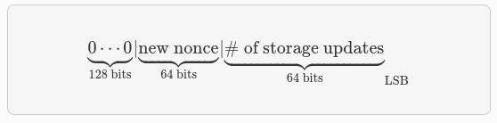
- Para cada actualización de almacenamiento:
- clave: la dirección dentro del almacenamiento del contrato donde se actualiza el valor
- valor: el nuevo valor
Ejemplos antes la v0.11.0
A continuación, mostramos un ejemplo de datos en cadena que se extrajeron de L1 y se decodificaron según el formato anterior.
[
2,
2472939307328371039455977650994226407024607754063562993856224077254594995194,
1336043477925910602175429627555369551262229712266217887481529642650907574765,
5,
2019172390095051323869047481075102003731246132997057518965927979101413600827,
18446744073709551617,
5,
102,
2111158214429736260101797453815341265658516118421387314850625535905115418634,
2,
619473939880410191267127038055308002651079521370507951329266275707625062498,
1471584055184889701471507129567376607666785522455476394130774434754411633091,
619473939880410191267127038055308002651079521370507951329266275707625062499,
541081937647750334353499719661793404023294520617957763260656728924567461866,
2472939307328371039455977650994226407024607754063562993856224077254594995194,
1,
955723665991825982403667749532843665052270105995360175183368988948217233556,
2439272289032330041885427773916021390926903450917097317807468082958581062272,
3429319713503054399243751728532349500489096444181867640228809233993992987070,
1,
5,
1110,
3476138891838001128614704553731964710634238587541803499001822322602421164873,
6,
59664015286291125586727181187045849528930298741728639958614076589374875456,
600,
221246409693049874911156614478125967098431447433028390043893900771521609973,
400,
558404273560404778508455254030458021013656352466216690688595011803280448030,
100,
558404273560404778508455254030458021013656352466216690688595011803280448031,
200,
558404273560404778508455254030458021013656352466216690688595011803280448032,
300,
1351148242645005540004162531550805076995747746087542030095186557536641755046,
500
]
- El primer elemento
2, es el número de celdas que codifican la implementación de contratos. - Los dos siguientes elementos describen una única implementación de contrato con los siguientes parámetros:
- dirección_contrato:
2472939307328371039455977650994226407024607754063562993856224077254594995194
- hash_contrato:
1336043477925910602175429627555369551262229712266217887481529642650907574765
- El siguiente elemento
5(índice 3 en el array), es el número de contratos cuyo almacenamiento se actualizó. Tomaremos solo el primer contrato como ejemplo.- dirección_contrato:
2019172390095051323869047481075102003731246132997057518965927979101413600827
- Después de la dirección de contrato mencionada anteriormente, tenemos
18446744073709551617(índice 8 en el array), que es2^64+1, por lo tanto:- El nuevo nonce del contrato es 1.
- Se actualiza una clave de almacenamiento.
- El valor en la clave 5 se cambió a 102.
Las siguientes 4 actualizaciones de almacenamiento de contratos se interpretan de la misma manera.
Extracción desde Ethereum Los datos descritos anteriormente se envían a través de varias transacciones de Ethereum, cada una de las cuales contiene una parte de esta matriz como calldata. Cada nuevo bloque de Starknet tiene sus transacciones de difusión de estado asociadas.
Puede encontrar el código para extraer estos datos de Ethereum en el repositorio de Pathfinder.
EVM vs zkEVM
El desafío central con el enfoque zkEVM está enraizado en el plan original de EVM, este no fue diseñado para funcionar dentro de un contexto de prueba de validez. En consecuencia, los esfuerzos para reflejar su funcionalidad no logran desbloquear todo el potencial de las pruebas de validez, lo que resulta en una eficiencia menos que óptima. Tal ineficiencia finalmente pesa el rendimiento general del sistema.
La compatibilidad del EVM con las pruebas de validez se ve obstaculizada por los siguientes factores:
-
El EVM emplea un modelo basado en apilamiento, mientras que las pruebas de validez se emplean de manera más efectiva con un modelo basado en registros. La naturaleza basada en la pila del EVM hace que sea inherentemente más difícil demostrar la exactitud de su ejecución y proporcionar soporte directo para su cadena de herramientas nativa.
-
El diseño de almacenamiento Ethereum depende en gran medida de Keccak y un gran árbol Merkle Patricia, que no son amigables con Validity Proof e imponen una carga de prueba sustancial. Por ejemplo, Keccak es muy rápido para las arquitecturas x86 ( sobre las cuales generalmente ejecutamos el EVM ), pero toma 90k pasos para probar ( con una construcción especial incorporada ). Mientras que Pedersen ( una función hash amigable con zk ) da 32 pasos. Incluso con compresión recursiva, el uso de Keccak en un zkEVM significa altos recursos de prover que terminan siendo pagados por el usuario.
Kakarot - Bases de su arquitectura
VM de Cairo
La Máquina Virtual Cairo (CVM) es un componente esencial del lenguaje de programación Cairo, utilizado para desarrollar y ejecutar contratos inteligentes en la cadena de bloques. Su arquitectura eficiente y sofisticada permite una gestión avanzada de la memoria, validación de instrucciones y deducción de valores.
La CVM forma el núcleo del lenguaje Cairo, brindando capacidades avanzadas de ejecución de contratos inteligentes y permitiendo el desarrollo de aplicaciones descentralizadas seguras y eficientes en la cadena de bloques. Su diseño técnico y eficiente hace posible la ejecución de programas complejos y la validación precisa de memoria, garantizando la confiabilidad y precisión en la ejecución de los contratos inteligentes.
A continuación, se detalla su funcionamiento y estructura técnica:
Gestión de Memoria y Segmentos
La memoria de Cairo es de solo lectura, y las direcciones de memoria que el programa accede deben ser continuas. Los posibles huecos entre las direcciones son llenados con valores arbitrarios.
La memoria se organiza en segmentos continuos, cuyo tamaño varía y solo se conoce al finalizar la ejecución del programa. Las direcciones absolutas de cada celda dentro de un segmento se determinan utilizando valores Relocatable, que indican el número de segmento y el desplazamiento.
Los diferentes segmentos son:
- Segmento del Programa: Contiene el bytecode de Cairo, con el
Program Counter (pc)iniciando al principio de este segmento. - Segmento de Ejecución: Aquí se generan datos durante la ejecución del programa Cairo y su longitud es variable según la entrada del programa. Los
Allocation Pointer (ap)yFrame Pointer (fp)comienzan aquí. - Segmento Incorporado: Cada función incorporada tiene su propio espacio continuo en memoria. La longitud es variable.
Registros
Los registros son fundamentales para el funcionamiento de la Máquina Virtual Cairo:
- Allocation Pointer (ap): Apunta a una celda de memoria sin usar.
- Frame Pointer (fp): Apunta al marco de la función actual. Las direcciones de todas las variables locales y argumentos son relativas al valor de este registro. Al inicio de una function1,
fpes igual aapy permanece constante durante su ejecución. Cuando una function2 se llama dentro de una function1, el valor defpcambia para function2 pero se restaura a su valor original al finalizar function2 (esto permite rastrear el valor original de function1). - Program Counter (pc): Apunta a la instrucción actual. Cada instrucción toma 1 o 2
felts, ypcavanza 1 o 2 después de cada instrucción. Los saltos pueden cambiar el valor delpca un valor absoluto o relativo, según las operaciones de salto.
Validación y Deducción de Valores
La Máquina Virtual Cairo es capaz de deducir valores de memoria y validar la ejecución de instrucciones para asegurar la integridad y correctitud del programa. Utiliza pruebas recursivas para optimizar y paralelizar la ejecución, lo que mejora la eficiencia y escalabilidad del sistema.
Jerarquía de Estructuras
La Máquina Virtual Cairo se basa en una jerarquía de estructuras que permiten un manejo complejo de la memoria y las operaciones:
VirtualMachineBase: Proporciona la base para la Máquina Virtual Cairo, con atributos importantes como el contexto de ejecución, registros, funciones incorporadas y más.ValidatedMemoryDict: Contiene una memoria validada con reglas de validación y auto-deducción de valores.auto_deduction: Es un diccionario que mapea un índice de memoria segmento a una lista de reglas para deducir el valor de una celda de memoria.
Representación del Programa
El programa Cairo se representa mediante la estructura ProgramBase, que contiene información sobre funciones, referencias, constantes y otros elementos del programa. Esta estructura es serializable, lo que facilita su almacenamiento y distribución en la cadena de bloques.
AIR y Builtins
Profundizaremos en la arquitectura de la CVM y su funcionamiento a nivel de ejecutar AIR, optimizaciones usando builtins, instrucciones y sus diseños para mejorar pasos y potenciar sus funciones. En ellos, estará cómo se organizan los diseños lineales o dinámicos para optimizar el rendimiento de un programa de Cairo, y revisaremos las celdas traza.
Este conjunto minimalista de instrucciones se denomina RISC algebraico (Computadora de conjunto de instrucciones reducidas); Algebraico se refiere al hecho de que las operaciones admitidas son operaciones de campo. El uso de un RISC algebraico nos permite construir un AIR para Cairo con solo 51 celdas traza por paso.
Uno de los mejores ejemplos es RISC Zero, que detallaremos más en otras arquitecturas. Básicamente, RISC Zero zkVM es un ordenador verificable que funciona como un microprocesador RISC-V real integrado, lo que permite a los programadores escribir pruebas ZK como si escribieran cualquier otro código. También destaca que soporta Rust para escribir pruebas ZK y puede admitir cualquier lenguaje que compile en RISC-V.
Builtin
Los builtins son unidades de ejecución de bajo nivel optimizadas predefinidas que se agregan a la placa de la CPU de Cairo para realizar cálculos predefinidos que son costosos de realizar en vainilla Cairo (por ejemplo, verificaciones de rango, hash de Pedersen, ECDSA, ...).
Poseidon es una familia de funciones hash diseñadas para ser muy eficientes como circuitos algebraicos. Como tales, pueden ser muy útiles en sistemas de prueba ZK como STARK y otros.
La comunicación entre la CPU y los builtins se realiza a través de la memoria: a cada builtin se le asigna un área continua en la memoria y aplica algunas restricciones (dependiendo de la definición del builtin) en las celdas de memoria en esa área. En términos de construcción del AIR, significa que agregar builtins no afecta las restricciones de la CPU. Simplemente significa que la misma memoria se comparte entre la CPU y los builtins.
Para invocar un builtin, el programa de Cairo se comunica con ciertas celdas de memoria, y el builtin impone algunas restricciones en esas celdas de memoria.
Fase de Inicialización y Ejecución de Hints en la CVM
La operación de la CVM involucra dos fases cruciales: la Fase de Inicialización y la Fase de Ejecución. Durante estas etapas, se administran y ejecutan las "hints" (pistas o indicaciones) que desempeñan un papel esencial en el procesamiento eficiente y seguro de programas. Los "hints" son fragmentos de información contextual que se incorporan en el código del programa, suministrando instrucciones específicas a la CVM durante su ejecución. Estas instrucciones abarcan desde detalles sobre el flujo de ejecución hasta orientaciones sobre las operaciones a llevar a cabo. Los "hints" ofrecen un mecanismo para optimizar y agilizar la ejecución de contratos inteligentes, al tiempo que garantizan su corrección y seguridad.
En el ámbito de las pruebas en la cadena de bloques, los "hints" desempeñan un papel crucial en la generación y verificación de los STARKS. Los "hints" en este contexto proporcionan información adicional a los Provers y el Verifier, posibilitando la generación y revisión de pruebas con mayor precisión.
A continuación, se desglosan los procesos inherentes a cada una de estas fases:
Fase de Inicialización
En esta etapa inicial, se realizan una serie de actividades fundamentales:
-
Carga del Programa: La fase se inicia con la disponibilidad de un archivo JSON compilado que encapsula detalles exhaustivos sobre un programa en la Máquina Virtual Cairo.
-
Sección de Hints: Dentro del archivo, una sección denominada "hint" alberga información detallada sobre cada "hint" presente en el programa.
-
Detalle de Hints: Cada "hint" contiene datos esenciales, como su código, los contextos en los que es accesible (principal, función actual, funciones integradas e incluso la ruta de importación en el caso de funciones importadas), seguimiento de flujo y las "reference_ids" que se vinculan a las variables con las que interactúa en su entorno.
-
Almacenamiento de Información: Al cargar el archivo JSON y crear un objeto "Program", toda la información relacionada con los "hints" se organiza en un campo llamado "hints", estructurado como un diccionario.
-
Carga y Asociación: En el inicio de la máquina virtual (VM) y la carga de los datos del programa a través de la función "load_program", también se ejecuta la función "load_hints". Esto da como resultado la creación de un diccionario que relaciona una dirección en el programa con una lista de "hints" compilados. Es posible que una misma dirección albergue varios "hints".
-
Asignación de Identificadores: Además, se establece un mapeo que conecta un "id" (identificador único del "hint") con una dirección y, en situaciones en las que existen múltiples "hints" en la misma dirección, se asigna un índice. Esta disposición facilita la identificación y gestión de los "hints".
-
Compilación de Hints: La obtención de los "hints" compilados se lleva a cabo mediante la función "compile" de Python en modo de ejecución, utilizando el código inherente a cada "hint".
Fase de Ejecución
La Fase de Ejecución abarca los siguientes pasos:
-
Gestión de Hints: Al dar comienzo a un paso en la ejecución del programa, se inicia el manejo de los "hints".
-
Recopilación y Exploración: Se reúne la lista de "hints" en la dirección actual del programa (si está presente) y se procede a iterar a través de ella.
-
Entorno de Ejecución: Se crea un diccionario llamado "exec_locals", el cual encapsula información relevante. Esto incluye la entrada del programa, la memoria validada ("validated_memory"), los registros actuales (ap, fp, pc), el paso actual, los identificadores (que contienen memoria), ap, fp y pc como constantes, y algunas funciones específicas del programa.
-
Ejecución de Hints: Posteriormente, cada "hint" se ejecuta mediante la función "exec" de Python. En este contexto, el diccionario "exec_locals" se emplea como entorno de ejecución para estas operaciones.
Versiones VM
A medida que ha transcurrido el tiempo, se han implementado una serie de optimizaciones en varias versiones de la CVM. Nuestra atención se concentrará en el contexto del ecosistema desarrollado por Starkware, específicamente, exploraremos las distintas encarnaciones de la VM dentro de este marco. Sin embargo, es importante resaltar que el tema de las relaciones con las STARKs en diversos contextos, más allá de Starknet y otras arquitecturas, es un asunto amplio y diversificado que tiene varios espacios detallados en capítulos separados.
- Inicialmente, se creó la Máquina Virtual Cairo en Python por parte de Starkware, y durante varios años, esta versión fue el núcleo del ecosistema.
- Posteriormente, con Quantum Leap y la versión 0.12, se incorporó una implementación en Rust de la VM de Cairo, conocida como cairo-vm en Rust. Esta implementación en Rust logró un rendimiento destacado gracias a Lambda Class.
- Además, se encuentra en desarrollo una VM en GO desde Lamda Class, esta implementación en curso de la Máquina Virtual Cairo en Go tiene múltiples objetivos, pero podemos destacar la Diversidad de Implementaciones. Contar con varias implementaciones contribuye a la detección de errores y fortalece todo el ecosistema, además de poder documentar ampliamente la Máquina Virtual en su conjunto.
Builtins y Mecanismos de Fee
En esta sección, revisaremos el mecanismo de tarifas de Starknet Alpha. Si desea omitir la motivación y profundizar en el mecanismo.
Los usuarios pueden especificar la máxima tarifa que están dispuestos a pagar por una transacción a través del campo max_fee.
La única limitación en el secuenciador (impuesta por Starknet OS) es que la tarifa real cobrada está acotada por max_fee, pero por ahora, StarkWare’s secuenciador solo cobrará la tarifa requerida para cubrir el costo de la prueba (potencialmente menos que la tarifa máxima).
Actualmente, el secuenciador solo tiene en cuenta los costos de L1 relacionados con la presentación de la prueba. Hay dos componentes que afectan el rastro de L1 de una transacción:
-
Complejidad computacional: cuanto más pesada sea la transacción, mayor será su parte en el costo de verificación de la prueba.
-
Datos en cadena: costo de datos de L1 originados por la disponibilidad de datos y mensajes de L2 → L1.
Las unidades de tarif están denominadas en ETH, (esto puede cambiar en versiones futuras). Cada transacción está asociada con una estimación de gas, y al combinar esto con el precio del gas, se obtiene la tarifa estimada.
Descripción general de alto nivel
Analicemos la métrica correcta para medir la complejidad de una transacción. Para simplificar, ignoraremos las funciones incorporadas de Cairo con fines de explicación, y luego veremos cómo abordarlas.
Sin builtins incorporados
Recordemos que la ejecución de un programa Cairo produce una traza de ejecución. Al probar un bloque de Starknet, agregamos todas las transacciones que aparecen en ese bloque a la traza de ejecución.
El Prover de Starknet genera pruebas para trazas de ejecución, con una longitud máxima L, derivada de las especificaciones de la máquina de pruebas y la latencia de la prueba deseada.
Es sencillo hacer un seguimiento de la longitud de la traza de ejecución asociada con cada transacción. Cada operación sobre field elements (como verificar la suma/multiplicación sobre el field) requiere el mismo número constante de celdas de traza (trace cells).
Cuando mencionamos sin builtin incorporados nos referimos a un escenario en el que todas las operaciones en el programa Cairo son operaciones básicas y no implican el uso de funciones más complejas, como las que encontramos con builtin incorporados. En esta situación, la ejecución de una operación simple, como una suma, requerirá menos celdas de traza que una operación más compleja como la función Pedersen. Es evidente que la función Pedersen ocupará más celdas de traza debido a su naturaleza más compleja en comparación con una simple suma.
Con builtins incorporados
La traza de ejecución de Cairo está separada, y cada builtin incorporado tiene su propia ranura. Debemos tener en cuenta esta asignación de ranura al determinar la tarifa.
Repasemos primero un ejemplo concreto. Imagina que la traza de ejecución tiene una capacidad máxima que ocupará el Prover:
- 500.000.000 pasos de Cairo
- 20.000.000 hashes de Pedersen
- 4.000.000 verificaciones de firma
- 10.000.000 comprobaciones de rango
La prueba se cerrará y se enviará a L1 cuando cualquiera de estos componentes se llene.
Es importante darse cuenta de que la división en funciones incorporadas debe estar predeterminada. No podemos decidir sobre la marcha tener una prueba con 20.000.001 Pedersen.
Supongamos, por ejemplo, que una transacción utiliza 10.000 pasos de Cairo y 500 hashes de Pedersen. Podemos acomodar como máximo 40.000 transacciones de este tipo en nuestro rastro hipotético (20.000.000/500). Por lo tanto, la tarifa de la transacción se relaciona con 1/40.000 del costo de enviar la prueba.
Es importante notar que el número de pasos de Cairo no es el factor limitante en esta estimación del rendimiento de la transacción (ya que 500,000,000/10,000 > 20,000,000/500). Con este ejemplo en mente, ahora podemos formular la tarifa exacta asociada con el cómputo de L2.
Caso general
Para cada transacción, el secuenciador calcula un vector CairoResourceUsage que contiene:
- Número de pasos de Cairo
- Número de aplicaciones de cada función incorporada de Cairo (por ejemplo, cinco comprobaciones de rango y dos hashes de Pedersen)
El secuenciador cruza esta información con el vector CairoResourceFeeWeights. Para cada tipo de recurso (paso o una aplicación específica de función incorporada), CairoResourceFeeWeights tiene una entrada que especifica el costo de gas relativo de ese componente en la prueba.
Volviendo al ejemplo anterior, si el costo de enviar una prueba con 20.000.000 hashes de Pedersen es aproximadamente 5m de gas, entonces el número de pasos de la función incorporada de Pedersen es 0.2 gas por aplicación (5,000,000/20,000,000). El secuenciador tiene un vector de pasos predefinidos, de acuerdo con los parámetros de la prueba.
El secuenciador cobrará solo según el factor limitante. Por lo tanto, la tarifa está correlacionada con:
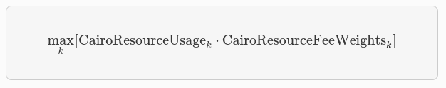
Donde k enumera los componentes de recursos de Cairo, es decir, el número de pasos y funciones incorporadas utilizados.
Los pasos son:
- Paso de Cairo: 0.01 gas/paso
- Pedersen: 0.32 gas/aplicación
- Poseidon: 0.32 gas/aplicación
- Comprobación de rango: 0.16 gas/aplicación
- ECDSA: 20.48 gas/aplicación
- Bitwise: 0.64 gas/aplicación
- EC_OP: 10.24 gas/aplicación
Datos On-Chain
Los datos en cadena asociados con una transacción están compuestos por tres partes:
- Actualizaciones de Storage.
- Mensajes L2 → L1.
- Contratos implementados.
Actualizaciones de Storage
Cuando una transacción actualiza una clave en el almacenamiento de algún contrato, los siguientes datos llegan a L1:
- Contract_address
- Número de claves actualizadas en ese contrato
- Clave para actualizar
- Nuevo valor
Nota: Solo el valor más reciente llega a L1. Es decir, la tarifa de la transacción solo depende del número de actualizaciones de storage únicas (si la misma celda de storage se actualiza varias veces dentro de la transacción, la tarifa sigue siendo la de una única actualización).
La tarifa de actualización de storage asociada para una transacción que actualiza n contratos únicos y m claves únicas es:
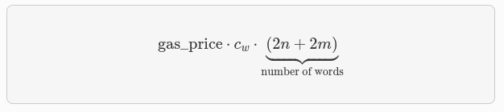
Donde cw es el costo de calldata (en gas) por palabra de 32 bytes.
Nota: Hay muchas posibles mejoras a la estimación pesimista anterior que se presentarán gradualmente en futuras versiones de Starknet. Por ejemplo, si diferentes transacciones dentro del mismo bloque actualizan la misma celda de almacenamiento, no es necesario cobrar ambas (solo el valor más reciente llega a L1). En el futuro, Starknet podría incluir un mecanismo de reembolso para tales casos.
Mensajes L2 → L1
Cuando se realiza una transacción que invoca la llamada del sistema send_message_to_l1 y se incluye en una actualización de estado, los siguientes datos llegan a la capa L1 (capa de destino):
-
L2 sender address: Es la dirección del remitente en la capa L2, es la dirección de la entidad o contrato en la capa 2 que inició la transacción o envió el mensaje.
-
L1 destination address: Es la dirección de destino en la capa L1. Esta dirección indica el contrato o entidad en la capa 1 que recibirá el mensaje enviado desde la capa 2.
-
Payload size: Es el tamaño del contenido útil o información que se envía en el mensaje. Representa la cantidad de datos que se transmiten desde la capa 2 a la capa 1.
-
Payload (lista de field element): Es la lista de elementos o datos que constituyen el contenido útil o payload del mensaje enviado desde la capa 2 a la capa 1.
En cuanto a la tarifa asociada con un solo mensaje de la capa L2 a la capa L1, se calcula utilizando la siguiente fórmula:
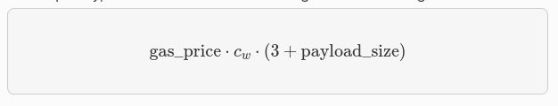
Donde:
gas_pricees el precio del gas (unidad de costo) establecido en la transacción.cwes el costo de calldata (datos de llamada) en gas por palabra de 32 bytes.payload_sizees el tamaño del contenido útil o payload del mensaje en bytes.
Esta fórmula te permite determinar el costo total de enviar un mensaje desde la capa L2 a la capa L1, tomando en cuenta el precio del gas, el costo de calldata y el tamaño del contenido enviado.
Contratos implementados
Cuando una transacción que eleva la llamada del sistema deploy se incluye en una actualización de estado, los siguientes datos llegan a L1:
- Dirección del contrato.
- Class Hash.
La tarifa asociada con una implementación única es:
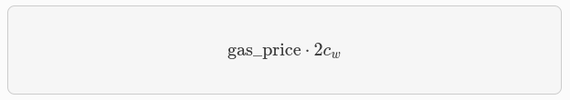
Donde cw es el costo de calldata (en gas) por palabra de 32 bytes.
Tarifa total
La tarifa para una transacción con:
- La utilización de Cairo se representa mediante el vector
v, donde las entradas devcorresponden al número de pasos y al número de aplicaciones por builtin incorporado. nactualizaciones de contratos únicosmactualizaciones de claves únicastmensajes con tamaños de cargaq1,...,qtℓimplementaciones de contratos
Está dada por:

Donde w es el vector de pasos discutido anteriormente y cw es el costo de calldata (en gas) por palabra de 32 bytes.
La tarifa se cobra atómicamente durante la ejecución de la transacción en L2. El SO de Starknet realiza una transferencia del ERC-20 asociado con la tarifa, con una cantidad igual a la tarifa pagada, utilizando al remitente de la transacción como emisor y al secuenciador como receptor.
Sierra - IR
En este apartadao detallaremos más la sintáxis del lenguague que su de finición de IR, que podra revisar en la sección
- Variables mutables: En un lenguaje de programación tradicional, cada variable está asociada con una celda de memoria específica, una ubicación en la memoria de la computadora donde se almacenan los datos de la variable. Cuando a una variable se le asigna un valor, el valor se almacena en la celda de memoria asociada con esa variable. La variable puede acceder o modificar el valor almacenado en esa celda de memoria durante la ejecución del programa.
Sin embargo, en Cairo, es imposible modificar el contenido de una celda de memoria a la que ya se ha escrito.
Las variables mutables son el azúcar sintáctico que permite a los desarrolladores de El Cairo modificar y actualizar sin esfuerzo los valores de datos a lo largo de la ejecución de un programa sin tener que seguir manualmente la variable declarada anteriormente. Cuando modificamos nuestra variable mutable x, la variable Sierra correspondiente que almacena su valor se descarta primero ya que ya no se usa, y luego se crea una nueva variable con el valor actualizado
Del mismo modo, para una variable no mutable y, cuyo valor esté sombreado, el procedimiento en Sierra es exactamente el mismo: el valor anterior se cae y uno nuevo se instancia con el valor actualizado asociado con y. Sin embargo, se recomienda usar variables mutables en lugar de sombrear donde sea posible, ya que garantiza la consistencia en los tipos.
-
Referencias: En los idiomas tradicionales, “pass-by-reference” es un método para pasar variables a funciones donde la función recibe una referencia a la ubicación de memoria de la variable. Esto permite que la función modifique el valor de la variable directamente. En Cairo, el equivalente se logra utilizando el ref modificador al definir el parámetro de función. Sin embargo, como se dijo anteriormente, es esencial tener en cuenta que una vez que los valores variables asignados no se pueden modificar directamente en Cairo, a diferencia de otros idiomas.
-
Snapshot: En el lenguaje de programación de Cairo, las instantáneas se introducen como un tipo de envoltura que crea una vista inmutable de un objeto en un momento dado. Las instantáneas son útiles cuando necesitamos realizar en tipos no duplicables como matrices. En la implementación del tiempo de ejecución, las instantáneas son abstracción de costo cero debido al modelo de memoria escrita de la Asamblea de Cairo.
En el crates cairo-lang-sierra, aprendemos que una instantánea es solo una envoltura alrededor de un objeto que garantiza que el objeto original no se modifique. los snapshot_take libfunc solo devuelve una instantánea al tipo si el tipo no se puede copiar. Los tipos duplicables son su propia instantánea, ya que la instantánea en sí misma es inútil si podemos duplicar el valor. Este concepto de instantáneas solo existe en el nivel Sierra y hace que el sistema de tipo lineal sea efectivo al garantizar que el objeto envuelto en una instantánea no pueda modificarse.
Pero, ¿cuándo encontramos instantáneas particularmente útiles? Específicamente cuando se trabaja con tipos no duplicables como Arrays. En el siguiente código, una función foo toma como parámetro una matriz a. Una instantánea de esta matriz se pasa a dos funciones, y luego se devuelve la matriz.
Cuando una función lleva una instantánea a un valor usando @, solo puede leer el valor y no modificarlo. Se comporta como un préstamo inmutable usando & en Rust, que permite que varias partes del programa lean el mismo valor simultáneamente y se asegura de que no se modifique. Cuando trabaja con objetos no copiables, el uso de instantáneas le permite retener la propiedad del objeto en el contexto de llamada y garantizar que el objeto permanezca inalterado.
- Function inlining: La combinación de funciones es una técnica de optimización del compilador que sustituye una llamada de función con el código real de la función que se llama. Elimina la sobrecarga de una llamada de función integrando el código de la función directamente en la función de llamada.
El compilador de El Cairo reemplazará automáticamente las llamadas a funciones marcadas como en línea directamente con su código Sierra. Esta optimización es especialmente útil para funciones pequeñas frecuentemente llamadas. Inlining puede reducir la sobrecarga de las llamadas a funciones y conducir a ejecuciones más rápidas y optimizadas, ya que los valores no necesitan ser recordados.
Resumen: Hemos explorado algunos conceptos centrales de El Cairo 1, como variables mutables, referencias e instantáneas. Hemos visto cómo las variables mutables en El Cairo son equivalentes a las variables sombreadas en Sierra y cómo las referencias en El Cairo usan el ref prefijo para pasar variables e implícitamente devolverlas. Además, hemos visto cómo las instantáneas en El Cairo son un concepto único que permite a los desarrolladores mantener la propiedad de los objetos al tiempo que garantiza que el valor original permanezca sin modificar. Finalmente, exploramos cómo los desarrolladores pueden usar la función como una técnica de optimización.
Cairo = Mejoras unicas en cairo?
Cairo Native - MLIR
MLIR significa (Intermediate Representation for Multi-Level Intermediate Representations), (Representación Intermedia MúltiNivel). Se refiere a un lenguaje de representación intermedia diseñado para ser flexible y adaptable a diferentes requisitos en una infraestructura unificada.
A diferencia de LLVM IR, que tiene una única representación intermedia central que abarca un conjunto completo de instrucciones para representar programas de CPU/GPU, MLIR adopta un enfoque diferente. En MLIR, no existe una única representación intermedia unificada.
MLIR tiene como objetivo abordar la fragmentación del software, mejorar la compilación de hardware heterogéneo, reducir significativamente el costo de construir compiladores específicos de dominio y ayudar a conectar compiladores existentes.
En su lugar, MLIR introduce conceptos abstractos como dialectos, operaciones y regiones. Estos conceptos permiten la definición de diferentes dialectos o lenguajes especializados, cada uno con su propio conjunto de operaciones y reglas semánticas específicas.
La idea detrás de MLIR es brindar una infraestructura flexible que pueda adaptarse a múltiples requisitos y necesidades en el ámbito de la representación intermedia. Esto significa que se pueden definir dialectos específicos para diferentes dominios, como procesadores específicos, aceleradores o incluso lenguajes de programación específicos.
En resumen, MLIR busca proporcionar una forma flexible y modular de representar programas en un nivel intermedio, permitiendo la adaptabilidad a diferentes requisitos y escenarios mediante el uso de dialectos y operaciones específicas de cada dominio.
En otras palabras, si LLVM IR está centralizado por la naturaleza y favorece los flujos unificados del compilador, la infraestructura MLIR y su ecosistema de dialecto están descentralizados por la naturaleza y favorecen los diversos flujos del compilador. Lo que es bastante poderoso es que MLIR permite representar diferentes niveles utilizando la misma infraestructura, para que el flujo entre diferentes niveles pueda ser continuo.
La mayoría de los protocolos ZKP implican aritmetización, que es el proceso de representar el cálculo en un formato numérico que puede utilizar el sistema de prueba, generalmente tomando las instrucciones en el cálculo y construyendo un gráfico de expresión de operaciones en bits llamado circuito aritmético y luego generando un seguimiento de ejecución, que muy brevemente es una matriz de elementos de campo que representan la evolución del cálculo a lo largo del tiempo. Este rastro de ejecución se alimenta al probador.
Para encapsular estos procesos, las máquinas virtuales se han diseñado e implementado para generar estos rastros de ejecución numéricos y proporcionar garantías computacionales, como Miden y cairo-rs. Una vez que tenga una máquina virtual, necesita un compilador y una representación intermedia.
Tampoco puede aceptar ningún programa, ya que necesita saber que su ejecución es demostrable a menos que esté dispuesto a asumir la posibilidad de programas no terminales, transacciones inválidas que consumen gas excesivo, la producción de trazas inválidas o incompletas, y que el probador simplemente renuncie en el medio. La teoría de tipos y las representaciones intermedias dentro de los compiladores se han convertido en una de las herramientas más potentes para producir código que tiene propiedades que podemos razonar y verificar mecánicamente.
En resumen, la necesidad de ejecutar hardware más diverso, incorporar tecnología de lenguaje de programación, para permitir el uso fácil de primitivas criptográficas complejas, Para transportar garantías de herramientas de desarrolladores a capas de ejecución, todos se han unido para lograr un pequeño renacimiento de la implementación del lenguaje en el mundo criptográfico.
Herodotus - Storage Proof
En el mundo de los sistemas descentralizados y la tecnología blockchain, garantizar la precisión y autenticidad de los datos es de suma importancia. A medida que el ecosistema evoluciona, se hace cada vez más necesario compartir información a través de diferentes cadenas, lo que lleva al desarrollo de soluciones innovadoras para verificar la integridad de los datos sin sacrificar la seguridad o la eficiencia. Una de esas soluciones es el uso de Storage Proof .
Las Storage Proof ofrecen un método criptográfico para rastrear y compartir información de blockchain a través de cadenas, similar a los oráculos. Sin embargo, la diferencia clave radica en el modelo de confianza.
Las Storage Proof proporcionan inherentemente una prueba de autenticidad sin depender de la confianza de terceros. En algunas situaciones, incluso pueden reemplazar o complementar los oráculos, allanando el camino para nuevos casos de uso y aplicaciones en el ecosistema blockchain.
Imagina que tienes un libro gigante lleno de información y quieres demostrar que un dato concreto está en ese libro, en lugar de pedir a alguien que revise todo el libro para encontrar la información, se utiliza un sistema inteligente (en nuestro caso, la criptografía) para crear una pequeña prueba que pueda demostrar fácilmente la presencia de la información en el libro. Esta prueba es lo que llamamos una Storage Proof.
En el contexto de las cadenas de bloques, estos libros gigantes son las bases de datos que almacenan todas las transacciones y datos de la red. Las Storage Proof permiten crear una prueba pequeña y verificable de que ciertos datos existen dentro del estado del blockchain en un momento determinado. Para ello se utilizan técnicas criptográficas incorporadas al propio almacenamiento.
Las cadenas de bloques utilizan varias estructuras de datos, como los árboles Merkle, los árboles Merkle Patricia y los árboles Verkle, para comprometer criptográficamente sus datos. Utilizando estas estructuras de datos, se pueden generar Storage Proof para demostrar que una información específica forma parte de un estado determinado. Sin embargo, cuando se utilizan solas, estas pruebas pueden llegar a ser bastante grandes, lo que las hace poco prácticas para la verificación en cadena. Para superar este problema, las Storage Proof suelen combinarse con técnicas criptográficas avanzadas, como STARK o SNARK, para crear pruebas más pequeñas y eficientes que puedan verificarse en cualquier dominio sin confiar en terceros. En su lugar, la seguridad y la confianza proceden de la propia blockchain subyacente.
Las Storage Proof le permiten abrir compromisos criptográficos de estado. Se pueden optimizar al unirlos con S [ N / T ] ARKS. . Estas pruebas de validez prueban que existía un estado en particular y que era válido en un bloque en particular en el pasado.
Fundamentalmente, las cadenas de bloques son bases de datos que contienen datos comprometidos criptográficamente utilizando (árboles Merkle, árboles Merkle Patricia, árboles Verkle, etc. ). Como todos los datos están comprometidos, podemos demostrar que cierta información está encapsulada en un estado dado. Sin embargo, con esquemas de compromiso simples, el tamaño de esta prueba se vuelve más prominente a medida que el tamaño de los datos que incluye se hace más grande. Verificar tales pruebas en cadena se vuelve demasiado costoso para ser práctico.
Las Storage Proof , por otro lado, cuando se usan junto con STARK o SNARK, pueden ser relativamente pequeñas y le permiten verificar un estado específico, en un momento específico y en cualquier dominio, sin confiar en un tercero. En su lugar, confían en la seguridad de la cadena subyacente.
¿Por qué es esto importante? Ethereum hoy no es la cadena monolítica simple (L1) que era hace varios años. Con el advenimiento de las soluciones L2, los datos ahora se distribuyen en múltiples cadenas.
Ya no se pueden hacer suposiciones sincrónicas sobre el estado de la cadena. Muchas soluciones para compartir datos ahora están en vivo, como los sistemas de mensajería L1 -> L2, puentes entre cadenas y oráculos. Pero el problema con estas soluciones actuales es que incluyen la confianza en un tercero, como los relevistas, los firmantes multisig y los comités. Las Storage Proof nos permiten validar el estado de una cadena de bloques en cualquier momento utilizando compromisos criptográficos sin asumir la confianza de un tercero.
Arquitectura Herodotus
Cada despliegue de contratos inteligentes de Heródoto que admite una cadena específica consta de los siguientes contratos:
- Commitments inbox: Este contrato es responsable de procesar y verificar la validez de otros compromisos de la cadena, como bloqueos o raíces estatales.
- Headers store: Esto contrata almacena y permite procesar encabezados desde un punto dado hasta la génesis al afirmar que
blockhash(x - 1) = parenthash(x). - Facts registry: Este contrato realiza la verificación de Storage Proof y almacena los valores solicitados en su estado.

Commitments Inbox
Cada vez que se accede a datos provenientes de un dominio diferente en otro dominio, se requiere un compromiso para asegurar su corrección criptográfica. Estos compromisos pueden ser:
- State root
- Block hash
- Transactions root
- Receipts root
El contrato CommitmentsInbox se encarga de recibir y gestionar estos compromisos. Los compromisos pueden entregarse de diversas formas, como:
- Recibir mensajes asíncronos.
- Validar el consenso de la red de manera verificable (disponible solo para L2 descentralizados).
- Utilizar relayers optimistas.
Una vez que un compromiso es aceptado por el CommitmentsInbox, se pasa al HeadersStore.
Headers Store
El contrato HeadersStore refleja los encabezados de las cadenas admitidas en el almacenamiento del state de este contrato. Estos encabezados solo pueden agregarse si el del encabezado parentHash ya ha sido pasado al CommitmentsInbox.
Cualquier persona puede enviar encabezados, pero un encabezado solo es válido si su hash calculado en la cadena coincide con el hash certificado previamente por el CommitmentsInbox.
Cada vez que se procesa un encabezado, se guarda el hash de su encabezado padre en el estado del contrato para permitir que el encabezado anterior en la cadena se procese de la misma manera.
Al procesar un bloque, sus parámetros pueden guardarse en el estado inteligente de los contratos. Cada cadena blockchain contiene diferentes parámetros en su encabezado. Por ejemplo, un encabezado de EVM en Ethereum L1 contiene las siguientes propiedades:
- baseFeePerGas
- difficulty
- extraData
- gasLimit
- gasUsed
- parentHash
- receiptsRoot
- transactionsRoot
- stateRoot
- timestamp
- logsBloom
- nonce
- miner
- mixHash
- sha3Uncles
- number
- extraData
La especificación de los parámetros que deben guardarse se realiza mediante un valor entero que codifica un mapa desde el índice del parámetro hasta si debe guardarse o no. Los índices para cada parámetro son:
PARENT_HASH = 0UNCLES_HASH = 1MINER = 2STATE_ROOT = 3TRANSACTION_ROOT = 4RECEIPTS_ROOT = 5LOGS_BLOOM = 6DIFFICULTY = 7BLOCK_NUMBER = 8GAS_LIMIT = 9GAS_USED = 10TIMESTAMP = 11EXTRA_DATA = 12MIX_HASH = 13NONCE = 14BASE_FEE = 15
Por ejemplo, para establecer solo la STATE_ROOT, el valor para ese parámetro sería 8, ya que su representación binaria es 000000000001000, lo cual es igual a 2^3, donde 3 es el índice de la STATE_ROOT.
Facts Registry
Este es el último contrato en la pila básica de Herodotus y optimiza el proceso de acceso a las propiedades de una cuenta, como:
Nonces (si están disponibles).
Saldos (si están disponibles).
Storage hash.
Code hash.
El primer nivel de almacenamiento en las blockchains basadas en cuentas son las propias cuentas. Para probarlas, es necesario tener acceso a la stateRoot, cuya corrección se verifica mediante el contrato HeadersStore. Con dicha raíz del estado, se puede verificar una prueba de MPT que demuestra las propiedades mencionadas de una cuenta.
Estas propiedades, de manera similar a HeadersStore, se pueden guardar en el estado para reducir la cantidad de cálculos necesarios cada vez que se accede al almacenamiento del contrato inteligente.
Acceso al almacenamiento del contrato
Como se mencionó anteriormente, el primer nivel de almacenamiento son las cuentas. El segundo nivel es el almacenamiento real del contrato. Este almacenamiento se guarda en un árbol Merkle Patricia Tree, donde la raíz es el StorageHash de la cuenta. Al ser un árbol Merkle Patricia, se puede probar cualquier cosa incluida en él.
Esto permite que Herodotus habilite el acceso al almacenamiento de los contratos inteligentes. El almacenamiento de los contratos inteligentes es una base de datos de clave-valor donde cada clave corresponde a 32 bytes de datos.
Para obtener más información sobre cómo asignar un nombre de variable a su clave de almacenamiento, consulte la documentación de Solidity. Recomendamos encarecidamente utilizar esta guía cuando se trabaja con el diseño del almacenamiento de contratos inteligentes en Solidity.
El uso de una API para solicitar Storage Proof es sencillo, pero creemos que todavía no es lo suficientemente simple. Hoy anunciamos Herodotus Turbo 🛰
Turbo permitirá una interoperabilidad 100% sin confianza entre las capas 2 de Ethereum con solo escribir una línea de código.
https://twitter.com/HerodotusDev/status/1682400907969822722
Casos de Usos
Dado que las Storage Proof nos permiten comprimir eficientemente “ ” una cadena de bloques y transmitir los datos a otra parte, tienen bastantes aplicaciones. El costo de verificación asequible, una propiedad integral de las Storage Proof , permite validar la prueba en el destino cadena, minimizando la necesidad de desarrollar sistemas de mensajería entre cadenas.
Los casos de uso potencial incluyen:
- Acceso a información general de una cadena de otra sobre el estado y las transacciones en la cadena de bloques.
- Sistemas de votación entre cadenas simplificados Con frecuencia, los usuarios mantienen sus activos en una cadena A lenta pero más segura, pero se produce una votación basada en tokens en una cadena B con transacciones más baratas. Esto obliga al usuario a omitir su voto o pagar enormes tarifas de transacción para unir sus activos de la A a la B, emitir su voto y luego obligarlos a la A. En tales casos, las Storage Proof permiten a los usuarios probar su equilibrio de fichas en la cadena A en un bloque dado y emitir su voto a la perfección en la cadena B.
- Alternativa a los puentes entre cadenas. Actualmente, los puentes entre cadenas asumen un nivel de confianza en un tercero porque generalmente involucran a un intermediario, como un custodio o una organización autónoma descentralizada ( DAO ). Este intermediario es responsable de garantizar que el intermediario reciba una cierta cantidad de tokens en la cadena de origen y de mantener los activos en la cadena de origen. Posteriormente, las fichas correspondientes se acuñan en la cadena de destino. Las Storage Proof pueden permitir puentes sin confianza entre cadenas, ya que una aplicación de contrato inteligente en la cadena de destino podría validar una transacción en la que los activos se transfirieron al contrato inteligente del puente en la cadena de origen y acuñar los activos puenteados. Sin embargo,en muchos casos, la necesidad de transferir activos entre cadenas puede eliminarse ya que la propiedad de los activos en otra cadena podría demostrarse simplemente con Storage Proof .
- UX mejorado para la abstracción de la cuenta ( AA ) casos de uso. AA se ha implementado en diferentes cadenas y se considera una innovación crucial para incorporar a los primeros mil millones de usuarios al espacio blockchain. Con Storage Proof , las billeteras podrían incluir la funcionalidad adicional de restaurar el acceso solo si la billetera no envió ninguna transacción durante una larga duración. También se podrían hacer cumplir verificaciones adicionales que requieren que algunos datos se utilicen de otras cadenas.
Ejemplos Storage Proof
Generar Storage Proof en cadenas compatibles con EVM es sencillo. Por ejemplo, la biblioteca Web3.js tiene la función getProof que puede generar pruebas del estado de un contrato en Ethereum (y otras cadenas compatibles con EVM como Polygon, BSC, L2 Optimism...). Una dirección de contrato y la ranura de almacenamiento para el contrato deben ser pasados a la función.
En Ethereum, los contratos inteligentes utilizan un almacén de clave-valor para almacenar los datos en su almacén. Cada dato se almacena en una ubicación específica conocida como ranura de almacenamiento. Las ranuras de almacenamiento son ubicaciones de memoria dentro del almacenamiento del contrato y se identifican mediante un índice único. Veamos un ejemplo de contrato inteligente con el siguiente código desplegado en la mainnet de Ethereum.

La variable owner se almacenaría en la ranura 0. Ahora, para generar la prueba de que el owner de este contrato era una dirección A, podemos utilizar la función getProof de la siguiente manera:
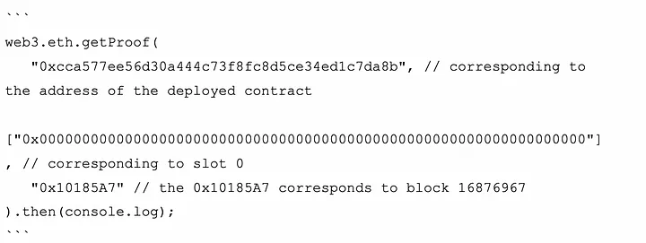
El resultado del código anterior es algo parecido a esto:
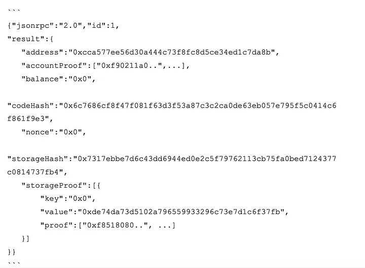
El storageProof devuelto contiene la prueba de almacenamiento para la variable owner. Dado que Ethereum utiliza Merkle Patricia Trees para comprometer su estado, el estado de las cuentas y su almacenamiento, el almacenamiento generado puede ser utilizado para probar una ranura de almacenamiento (o estado de la cuenta). Sin embargo, como se ha indicado anteriormente, estas pruebas no son lo suficientemente escalables como para discutir las transferencias de mensajes entre cadenas, para ello el uso de complejas matemáticas ZK sobre esto puede disminuir el cálculo necesario para verificar la prueba.
Proyectos SHH y Hackaton
- StarkSight: Use Worldcoin (Polygon) on Starknet. Storage proof of storage slot.
- MAID: Proof of OG (Are you a long-time holder of this coin?). Historical storage proof of storage slot
- Merge Swap: Use storage proof on PoW to PoS chain.
SHH
Merkle Mountain Ranges en Cairo
Herodotus ha implementado una nueva estructura de datos criptográfica llamada Merkle Mountain Ranges (MMR) en Cairo. Las MMR son una lista de Árboles de Merkle, donde cada árbol se representa como una montaña y la lista completa forma el rango.
Las MMR comparten las propiedades comunes de los Árboles de Merkle, como el almacenamiento eficiente de datos y la capacidad de generar pruebas de Merkle para demostrar la existencia de un elemento en el árbol. Sin embargo, también ofrecen ventajas adicionales, como la eficiencia en la adición y actualización de elementos, detallemos algunas:
- La adición de un elemento a un MMR es mucho más eficiente, ya que en la mayoría de los casos no es necesario recorrer todo el árbol. La complejidad subyacente es log2(n)
puntas de montaña. - Las pruebas de Merkle en un MMR se realizan mediante pruebas de tamaño log2(n) que consisten en una ruta Merkle hasta la punta del árbol.
- La actualización de un elemento también se puede realizar de manera eficiente.
- Es posible optimizar aún más al comparar inserciones y actualizaciones.
- Tanto las inserciones como las actualizaciones se pueden implementar en cadena, lo que garantiza una total transparencia sobre cómo se actualiza el árbol.
Con esta nueva estructura de datos en Cairo, buscamos mejorar la eficiencia y verificabilidad del almacenamiento de datos en la plataforma, haciéndola útil para diversas aplicaciones que requieren almacenamiento y verificación de datos en la cadena.
Esquema de firma ECDSA con umbral
Algunas innovaciones que se irán tratando como el esquema de firma ECDSA con umbral en bandeja de entrada de compromisos optimistas.
Para acceder al estado de diferentes cadenas, necesitamos acceder a las cabeceras de bloque, de las que podemos recuperar todo tipo de información (incluido el estado). Tenemos varias estrategias para obtener las cabeceras de bloque de diferentes cadenas, una de las cuales es un protocolo MPC que ejecuta un algoritmo de firma ECDSA de umbral. La salida del protocolo es una única firma que se validará en la cadena. Esto es mejor que tener una firma por parte, lo que es posible gracias a una ceremonia DKG (generación de clave distribuida).
Storage Proof Vs Oracle
Las cadenas de bloques están diseñadas para no generar confianza, lo que significa que no pueden acceder intrínsecamente a datos fuera de la cadena. Esta limitación afecta a la capacidad de los contratos inteligentes para tomar decisiones basadas en eventos del mundo real o en información histórica de la cadena de bloques. Como solución, se introdujeron los oráculos para proporcionar a los contratos inteligentes datos fuera de la cadena o resultados de cálculos fuera de la cadena que consumen muchos recursos.
Los oráculos suelen requerir que un tercero, como una institución o una red descentralizada de operadores de nodos, envíe datos a la cadena. Aunque esto introduce un nivel de confianza, varios equipos, como Pragma, están trabajando para minimizar este requisito de confianza.
Chainlink es un conocido oráculo de blockchain que proporciona datos del mundo real, servicios de cálculo fuera de la cadena y servicios entre cadenas. Dado que los contratos inteligentes dependen actualmente de los oráculos para obtener datos del mundo real, los oráculos se han convertido en una parte crucial del ecosistema blockchain.
¿Pueden los oráculos ser sustituidos o mejorados por Storage Proof?
En algunos casos, las Storage Proof pueden sustituir a los oráculos. Algunos datos proporcionados por los oráculos ya están disponibles en la cadena, y una prueba de almacenamiento puede eliminar la necesidad de confiar en un tercero, permitiendo que los contratos inteligentes se basen por completo en la seguridad de los compromisos criptográficos. Sin embargo, en otros casos en los que las Storage Proof no pueden sustituir completamente a los oráculos, pueden mejorarlos con una funcionalidad adicional:
- Las Storage Proof permiten realizar cálculos sobre datos de diferentes fuentes y exportar los resultados a otras cadenas, haciendo posible que los oráculos transmitan información a través de múltiples cadenas.
- Las Storage Proof pueden facilitar una validación rentable en las cadenas de destino, ya que la cadena de origen preferida suele tener un cálculo barato.
- Líderes en investigación, como Herodotus, permiten el acceso a datos entre dominios a través de cadenas Ethereum utilizando Storage Proof y matemáticas ZK. Pragma planea asociarse con Herodotus para soportar oráculos entre cadenas en un futuro próximo.
- Las Storage Proof pueden unificar el estado de múltiples rollups e incluso permitir lecturas síncronas entre capas Ethereum.
- La recuperación fiable de datos históricos de la cadena es otra mejora posible gracias a las Storage Proof . Las cadenas de bloques con estado, como Ethereum y Starknet, preservan criptográficamente su estado a través de estructuras de datos especializadas, lo que permite probar la inclusión de datos. Esto permite a los contratos inteligentes acceder a información que se remonta al bloque de génesis.
Pragma está explorando el desarrollo de un oráculo L3 en Starknet, que podría permitir a otras cadenas extraer y verificar datos utilizando Storage Proof. Los beneficios de tener un oráculo L3 en una red computacionalmente barata como Starknet incluyen:
- Consenso más rápido en bloques debido a la cadena L3 altamente personalizable, reduciendo significativamente la latencia de datos para el oráculo.
- Transferencia asíncrona de datos de baja latencia a otras cadenas al alcanzar el consenso en la cadena de origen, en combinación con Storage Proof .
- Mayor confianza en los datos mediante un sistema incorporado para penalizar a los proveedores de datos deshonestos. Los proveedores de datos en la L3 podrían poner en juego sus activos como garantía de la exactitud de los datos. Como toda la red L3 debe alcanzar un consenso antes de que otras cadenas puedan utilizar los datos, los datos del oráculo pueden considerarse garantizados por la apuesta de los validadores en L3.
La creciente adopción de soluciones L2 de Ethereum, como Starknet, Optimism y Arbitrum, ha permitido vislumbrar el futuro del sector. Sin embargo, un reto clave que impide un mayor crecimiento es la implementación de un sistema descentralizado de mensajería entre cadenas, las Storage Proof tienen un enorme potencial para resolver este problema.
En algunos casos, las Storage Proof pueden sustituir o mejorar los oráculos, facilitando una comunicación entre cadenas más eficiente y el acceso a datos históricos. Al reducir la dependencia de la confianza en terceros, las Storage Proof pueden reforzar significativamente la seguridad y la eficiencia de las aplicaciones de blockchain.
A medida que el panorama de las cadenas de bloques siga evolucionando, podemos anticipar nuevos desarrollos e innovaciones en Storage Proof, oráculos y comunicación entre cadenas. Aprovechando estas tecnologías, el ecosistema blockchain puede mantener su crecimiento y ofrecer más valor tanto a los usuarios como a los desarrolladores.
Estado de Oracles en Starknet
En la red de pruebas de Starknet, Chainlink proporciona datos de precios para siete pares de criptomonedas y se ha asociado con Starkware para acelerar el desarrollo y crecimiento de aplicaciones en el ecosistema de Starknet. Chainlink minimiza los supuestos de confianza a través de una red descentralizada de nodos, pero la agregación de datos se produce fuera de la cadena.
Pragma y Stork Network son dos importantes proveedores de oráculos en Starknet, que operan tanto en la mainnet como en la testnet. Ofrecen tickers de precios para múltiples pares de criptomonedas, y Pragma está trabajando en la implementación de una fuente de aleatoriedad verificable en la mainnet para una aleatoriedad segura en la cadena. Las fuentes de precios de Pragma se basan en envíos de grandes instituciones y creadores de mercado, aprovechando la eficiente tecnología ZK para la agregación de precios en la cadena.
En resumen, tanto las Storage Proof como los oráculos son cruciales para facilitar la comunicación entre cadenas y el acceso a datos fuera de la cadena. Mientras que los oráculos son indispensables para los datos del mundo real, las Storage Proof ofrecen una forma fiable y eficiente de transferir y verificar la información de la cadena de bloques entre cadenas. Juntos, ayudan a crear un ecosistema de cadenas de bloques más sólido e interconectado.
Pragma - Bases
Chainlink - Bases
Exploradores de Bloques 🚧
Starkscan 🚧
Voyager 🚧
Madara 🚧
Elixir 🚧
View Block 🚧
Cairo - Arquitectura
Sintáxis Básica
Cairo v2 - Nueva versión del Compilador
https://twitter.com/nodeguardians/status/1682410394864832514
Introducción Parte 3
Otras Arquitecturas
Lambda en Starknet 🚧
Starknet en Rust 🚧
Lambda Prover - Platinum 🚧
Lambda Sequencer 🚧
LambdaWorks 🚧
Madara - Exploración de su Arquitectura 🚧
En este capítulo realizaremos un análisis exhaustivo de la arquitectura de Madara, este componente fundamental desempeñará un papel vital en el ecosistema de Starknet, destacándose por su enfoque en el escalado fractal y la modularidad dentro del mundo de las blockchains. Antes de sumergirnos en las intrincadas capas de Madara, es recomendable revisar los cimientos y las definiciones clave, las cuales están detalladas en el apartado Base Madara de la Parte 2 del Libro de L2 sobre la Arquitectura de Starknet y Cairo.
La esencia de Madara se fusiona con la plataforma Substrate, un framewrok de innovación en la cadena de bloques que se erige como el fundamento de Madara. Las Chains montadas con Substrate se representan como una combinación de tres tecnologías fundamentales:
-
WebAssembly: Wasm es un formato binario de instrucciones diseñado para una máquina virtual basada en pilas. Su principal propósito es servir como un objetivo de compilación portátil para diversos lenguajes de programación, lo que facilita su implementación en aplicaciones tanto de cliente como de servidor en la web.
-
Libp2p: Es una colección de protocolos, especificaciones y herramientas que facilitan la construcción de redes descentralizadas y resistentes a la censura en el ámbito de la web. Esta biblioteca está diseñada para brindar una capa de comunicación peer-to-peer eficiente y flexible, permitiendo que los nodos se conecten y se comuniquen de manera segura a través de una variedad de redes y protocolos subyacentes. Libp2p se adapta a una amplia gama de aplicaciones, desde sistemas de almacenamiento distribuido hasta redes de transmisión de datos, lo que lo convierte en un componente esencial para la arquitectura de Madara y su integración con Starknet.
-
GRANDPA: Es la abreviatura de (GHOST-based Recursive Ancestor Deriving Prefix Agreement), un componente de vital importancia que desempeña un rol crucial similar a una "llave maestra" para los clientes de cadenas de bloques basadas en Substrate. Podemos definir este algoritmo de finalización que intenta conseguirel equilibrio perfecto entre velocidad y seguridad en el intrincado proceso de consenso. Su enfoque innovador se centra en el concepto de votar por bloques válidos y, de manera progresiva y transitiva, aplicar esos votos a lo largo de las generaciones de bloques ancestrales. Esta estrategia inteligente permite la finalización de bloques al lograr una supermayoría de votos, lo que asegura una finalidad asincrónica y, además, otorga adaptabilidad ante diversas condiciones de la red.
La distinción de GRANDPA se manifiesta en su capacidad excepcional para finalizar múltiples bloques de manera simultánea, una característica que confirma su resiliencia incluso en circunstancias de particiones prolongadas en la red. En un esfuerzo por mantener la integridad del proceso, aquellos participantes que emiten votos contradictorios son detectados y enfrentan consecuencias mediante un protocolo meticuloso de desafío y respuesta. Un aspecto digno de mención es la flexibilidad de GRANDPA para asignar pesos individuales a nodos, considerando factores como la cantidad apostada en el protocolo. Esta capacidad de personalización potencia la influencia de los nodos en el proceso de finalización, contribuyendo a un consenso robusto y equilibrado.
En esencia, GRANDPA fusiona magistralmente la estructura misma de la cadena de bloques con el intrincado proceso de consenso, generando así un mecanismo seguro y responsable de finalización. La habilidad para concluir múltiples bloques, adaptarse ágilmente a condiciones cambiantes en la red y otorgar a los nodos la posibilidad de influir en el proceso, lo sitúa como un pilar esencial en la arquitectura dinámica de Polkadot y en la evolución continua de las cadenas de bloques hacia un futuro prometedor.
Substrate
Las cadenas Substrate presentan tres características distintivas que las califican como "de próxima generación":
- Una función de transición de estado dinámica y autodefinida.
- Funcionalidad de cliente ligero desde el primer día.
- Un algoritmo de consenso progresivo con una rápida producción de bloques y una finalidad adaptativa y definida.
La función de transición de estado (STF), codificada en WebAssembly, se conoce como el "tiempo de ejecución" (runtime). Esta define la función execute_block, y puede especificar desde el algoritmo de staking, la semántica de transacciones, los mecanismos de registro y los procedimientos para reemplazar cualquier aspecto de sí misma o del estado de la cadena (gobernanza). Debido a la total dinamicidad del tiempo de ejecución, todos estos elementos pueden cambiarse o actualizarse en cualquier momento. En esencia, una cadena Substrate es comparable a un "organismo vivo".
Para obtener más información sobre Substrate, puedes consultar este enlace..
Explorando las Posibilidades de Substrate
Substrate está diseñado para ser utilizado de tres maneras diferentes:
-
Sencilla: Se ejecuta el binario Substrate y se configura con un bloque génesis que incluye el tiempo de ejecución de demostración actual. En este caso, simplemente construyes Substrate, configuras un archivo JSON y lanzas tu propia cadena de bloques. Esto te brinda un nivel mínimo de personalización, permitiéndote principalmente cambiar los parámetros génesis de los diversos módulos de tiempo de ejecución, como balances, staking, período de bloque, tarifas y gobernanza.
-
Modular: Se ensamblan paquetes (pallets) con Substrate FRAME para crear un nuevo tiempo de ejecución, posiblemente alterando o reconfigurando la lógica de generación de bloques del cliente Substrate. Esto te otorga una gran cantidad de libertad sobre la lógica de tu cadena de bloques, permitiéndote cambiar los tipos de datos, añadir o quitar módulos y, crucialmente, agregar tus propios módulos. Gran parte puede modificarse sin afectar la lógica de generación de bloques (pues es genérica). En este caso, el binario Substrate existente puede usarse para la generación de bloques y sincronización. Si es necesario ajustar la lógica de generación de bloques, será necesario construir un nuevo binario de generación de bloques modificado como proyecto independiente y utilizarlo para los validadores. Este enfoque se utiliza para la cadena de relés de Polkadot y debería ser adecuado para la mayoría de las circunstancias a corto y mediano plazo.
-
Genérico: Es posible ignorar completamente FRAME y diseñar e implementar el tiempo de ejecución desde cero. Si se desea, esto puede hacerse en un lenguaje distinto de Rust, siempre y cuando pueda apuntar a WebAssembly. Si el tiempo de ejecución es compatible con la lógica de generación de bloques del cliente existente, simplemente puedes construir un nuevo bloque génesis a partir de tu fragmento de WebAssembly (Wasm) y lanzar tu cadena con el cliente Substrate existente basado en Rust. Si no es así, será necesario ajustar la lógica de generación de bloques del cliente según corresponda. Esta opción es probablemente la menos utilizada por la mayoría de los proyectos, pero ofrece una flexibilidad completa que permite un camino de actualización a largo plazo y de amplio alcance para el paradigma Substrate.
Sin embargo, es importante destacar que Substrate también establece normas y convenciones, especialmente en relación con la Biblioteca de Módulos de Runtime. En términos generales, estos tipos de datos fundamentales se corresponden con interfaces ("traits") en lo que respecta al estándar no negociable y estructuras genéricas ("structs") en lo que respecta a la convención.
- Encabezado: = Padre + ExtrinsicsRoot + StorageRoot + Digest
- Bloque: = Encabezado + Extrinsics + Justificaciones
Con este conocimiento en mente, podemos sumergirnos en las complejidades de Madara y comprender mejor cómo Substrate proporciona una base sólida para su construcción.
Execution
En la base de esta fascinante estructura se encuentra la capa de Ejecución (Execution). Aquí, la ejecución de los bloques y la evolución del state distaf toman forma. Lo impresionante de Madara es su habilidad para transitar sin esfuerzo entre dos enfoques de ejecución: [Blockifier] de Starkware y [starknet_in_rust] de LambdaClass. Esta flexibilidad promete optimizaciones en constante evolución, con la posibilidad de consolidar en un único enfoque a medida que el tiempo avance.
Settlement Eficiente
En la dinámica de un Validity Rollup, podemos usar la arquitectura de Madara se despliega magistralmente desde su estrato de Settlement. En esta genialidad técnica, Madara no impone restricciones sobre las opciones disponibles para esta capa.
Para ilustrarlo con un ejemplo concreto, consideremos un escenario de nivel L3.
Madara tiene la capacidad de orquestar la transmisión de pruebas periódicas hacia Starknet, específicamente para un conjunto de bloques L3. El intervalo de aproximadamente ~ 5 horas para la liquidación en Starknet, un parámetro influenciado por los costos asociados con la liquidación en Ethereum, adquiere un matiz de eficiencia extraordinaria. En contraposición, en una configuración L3, se abre la posibilidad de establecer la liquidación en Starknet en intervalos aún más frecuentes, lo cual conlleva una disminución significativa en los costos operativos.
Madara es el arquitecto de la cadena que permite erigir la totalidad de su estructura a partir de su capa de asentamiento. Se distingue por su enfoque agnóstico respecto a las capas de asentamiento, ofreciendo así un lienzo en blanco para las decisiones de diseño. Asimismo, dentro de este ecosistema, Madara proporciona el marco para establecer tanto la finalidad Hard como la Soft, una dualidad contextual que aporta versatilidad y adaptabilidad a la plataforma.
Sequencing Adaptativa
La Secuenciación (Sequencing), vital en el funcionamiento de Madara, es moldeable según las necesidades. Las posibilidades son infinitas: desde esquemas sencillos First-Come-First-Served (FCFS) hasta enfoques más sofisticados como Narwhall & Bullshark o el intrigante HotStuff.
- HotStuff: Basado en el protocolo de consenso PBFT (Practical Byzantine Fault Tolerance), HotStuff es una evolución de PBFT diseñada para optimizar el rendimiento y la latencia. Introduce el "consensus certificate" y utiliza una estructura de árbol llamada "fair chain" para agilizar el proceso de consenso. Este enfoque permite lograr consenso con menor latencia y número reducido de mensajes.
En el contexto de la secuenciación, el orden de las transacciones desempeña un papel crucial para proteger contra ataques MEV y asegurar una distribución equitativa. Las aplicaciones específicas pueden incluso implementar estrategias como memorias encriptadas para garantizar un orden equitativo.
Fundamentos de Disponibilidad de Datos
En Madara, se están explorando diversos esquemas de DA para garantizar la integridad y accesibilidad de la información.
- Validium: Este enfoque implica datos con disponibilidad off-chain, administrados por un Comité conocido como Data Availability Committee (DAC). Este comité se encarga de asegurar que los datos estén disponibles y se mantengan fuera de la cadena principal.
- Rollup: Aquí, los datos tienen disponibilidad on-chain, siguiendo una dinámica similar a lo que estamos familiarizados con los Validity Rollup. En este caso, se almacena la diferencia de estado (state delta) en la cadena Ethereum.
- Volition: Ofrece una alternativa personalizada y híbrida, permitiendo a los usuarios decidir qué datos desean guardar en la capa L1 de Ethereum y cuáles mantener off-chain, esto empodera a los desarrolladores para seleccionar el nivel de disponibilidad de datos más adecuado para sus aplicaciones, ya sea en la L1 de Ethereum para una seguridad sólida o en la L2 de Starknet para reducción de costos. Adicionalmente, Volition brinda la opción de autohospedar sus propios datos o alojarlos en otros esquemas de gestión de datos, como Celestia o Eigen DA.
Estos enfoques en la disponibilidad de datos no solo demuestran la versatilidad y capacidad de adaptación de Madara, sino que también allanan el camino hacia soluciones más eficientes y escalables dentro del ecosistema de Starknet y otros entornos. En estos contextos, Madara puede ser empleada como punto de entrada para capitalizar la potencia de Cairo y los STARKs, brindando nuevas oportunidades para impulsar la innovación y el crecimiento tecnológico.
Diseño de Gobernanza Robusta en Madara y Starknet
En el contexto de Starknet y Madara, se está llevando a cabo un proceso de descentralización tanto en la infraestructura de red como en la toma de decisiones del protocolo. Esta iniciativa tiene como objetivo primordial fortalecer la participación y el empoderamiento de la comunidad en el desarrollo y las decisiones clave.
Uno de los elementos esenciales de Madara es Snapshot X, que establece un sistema completamente en cadena basado en sólidas pruebas de almacenamiento. Esta estrategia de gobernanza ha demostrado su efectividad en diversas situaciones, incluyendo casos como el de Turbo VM. Las pruebas de almacenamiento se presentan como el principal mecanismo de conexión en el ecosistema de Madara, garantizando la integridad de las resoluciones tomadas por la comunidad.
Además, Madara se encuentra en proceso de exploración de alternativas, tales como el módulo de gobernanza nativa de Substrate. Aprendiendo de lecciones valiosas provenientes de plataformas exitosas, Madara reconoce la trascendencia de mantener una gobernanza en cadena, en línea con la filosofía observada en ecosistemas como Cosmos y Polkadot.
En busca de una gobernanza más inclusiva y efectiva, Madara considera la adopción de herramientas avanzadas como OpenGov y Pallet Democracy. Estas herramientas permiten una toma de decisiones participativa y adaptable a través de la delegación y la participación directa de la comunidad.
-
OpenGov: Dentro del ecosistema de Polkadot, OpenGov promueve la inclusión al permitir que cualquier miembro de la comunidad proponga y vote en referendos. Basado en 15 Trayectorias únicas, cada una con reglas predefinidas, OpenGov permite que las propuestas sean evaluadas y votadas por expertos en áreas específicas. Esto asegura que incluso aquellos menos familiarizados con los aspectos técnicos puedan influir en las decisiones clave.
-
Pallet Democracy: Este paquete se encarga de la administración de las votaciones generales de los stakeholders. A través de un proceso en dos colas, las propuestas son transformadas en referendos. Cualquier titular de tokens puede votar, utilizando un sistema de bloqueo temporal para expresar su convicción en las decisiones. La flexibilidad y la adaptabilidad son elementos clave de este enfoque.
Esta convergencia entre Madara y Starknet resalta la vital importancia de la descentralización y la gobernanza activa en la evolución de estos ecosistemas. La prometedora trayectoria de ambas plataformas se moldea a través de la colaboración y la participación comunitaria en la toma de decisiones.
Madara - Fusionando Fuerzas 🚧
En esta sección, exploraremos la poderosa alianza entre Madara y Kakarot, culminando en la creación de L3 zkEVMs en la red de Starknet. Este hito marca un paso crucial hacia un futuro de escalabilidad y modularidad en el ámbito de las cadenas de bloques, abriendo la puerta a un panorama en constante evolución. Aquí, los equipos pueden implementar cadenas de aplicaciones (dApp Chains) zkEVM y aprovechar las Pruebas de Validez para garantizar transacciones seguras en Starknet.
La asociación entre Kakarot y Madara cobra vida como una sinergia cautivadora, a pesar de ser componentes completamente distintos. Pero, ¿cómo se entrelazan estos elementos en un tejido coherente que impulsa el futuro de la tecnología blockchain? La respuesta reside en la capacidad de integrar Kakarot con Madara, lo que nos brinda un abanico de oportunidades diversas.
Imagina a Madara como el sólido cimiento, un sustrato fundamental que establece las bases para futuras dApp Chains, secuenciadores descentralizados y una variedad de opciones en diferentes capas. Detallamos la gestión en la capa de DA en el capítulo anterior, que puedes revisar en Madara - Fundamentos de DA.
Estas bases, que pueden optimizarse desde el componente de Madara gracias a Substrate y los Pallets, logran mejorar las características de escalabilidad, modularidad y seguridad, formando así una plataforma sólida y lista para recibir nuevas capas de innovación.
Por otro lado, Kakarot asume el papel de un manto creativo, siendo la zkEVM en Starkent capaz de interpretar el lenguaje de Solidity y ejecutarlo en Cairo. Ambas capas o componentes están protegidos por Validity Proof, donde en este caso, los STARKs aseguran la integridad de los datos, mientras que otros elementos potencian la descentralización y la eficiencia.
Esta simbiosis entre Madara y Kakarot establece los cimientos para un futuro emocionante y dinámico en el universo de las cadenas de bloques, allanando el camino hacia una mayor adopción y evolución tecnológica.
La Fusión de Madara y Kakarot
La fusión de ambos componentes da lugar a una L3 zkEVM. El impacto de L3 zkEVM trasciende la mera innovación tecnológica. Su importancia radica en la descentralización y la seguridad que brinda. Al lograr altos niveles de seguridad sin depender de una multitud de validadores, se establece una nueva norma en la industria. La descentralización se convierte en una poderosa arma contra la censura y la vulnerabilidad, elementos fundamentales a menudo pasados por alto en la búsqueda de soluciones de cadena de bloques.
El viaje apenas comienza con L3 zkEVM. La armonía entre Madara y Kakarot allana el camino para futuras evoluciones, incluyendo L4, L5 y más allá. La modularidad de Substrate otorga a Kakarot la libertad de innovar en protocolos de consenso, mientras que las actualizaciones de tiempo de ejecución sin bifurcaciones en Substrate permiten una adaptación fluida del EVM.
La colaboración entre Madara y Kakarot también da lugar a posibilidades avanzadas, como la creación de zkEVM tipo 1. Mediante la incorporación de las reglas de consenso de Ethereum en Cairo dentro del nodo completo Madara x Kakarot y el cambio a Keccak MPT, Kakarot puede convertirse en un cliente zkEVM tipo 1 capaz de probar bloques L1. Aunque este es un caso de uso más avanzado que depende de la hoja de ruta de Ethereum, muestra cómo la innovación puede seguir floreciendo.
Optimizando la Eficiencia con L3 zkEVM
Un aspecto subestimado pero crucial de L3 zkEVM es su capacidad para desacoplar seguridad y descentralización. Aprovechando el enfoque de Prueba de Validez de Kakarot, los usuarios pueden disfrutar de niveles de seguridad comparables a Ethereum L1 sin requerir la misma cantidad de validadores. La descentralización, con su resistencia y capacidad anti-censura, sigue siendo esencial, y se logra a través de un secuenciador establecido en cientos en lugar de miles.
La eficiencia se multiplica aún más gracias a la computación en capas, lo que resulta en costos de gas exponencialmente más bajos que en L2 y un mayor rendimiento (TPS). Esta escalabilidad acumulativa allana el camino para una escalada más allá de L3, abriendo la puerta a futuras evoluciones.
Para reducir aún más los costos de gas y mejorar la disponibilidad de datos, se plantea la separación de verificación de pruebas y DA. Mientras que Starknet L2 puede servir como una capa de verificación de prueba segura, soluciones innovadoras como Celestia o EigenDA pueden utilizarse para publicar datos de transacciones de manera rentable.
Explorando Horizontes de Investigación
Madara se destaca como un faro de innovación en el vasto océano de la tecnología blockchain. Sus capas y componentes se entrelazan en una sinfonía de eficiencia, seguridad y escalabilidad. Esta colaboración con Kakarot da forma a un futuro vibrante, donde los zkEVMs florecen y la cadena de bloques alcanza nuevas alturas. A medida que Madara continúa su evolución, anticipamos con entusiasmo las hazañas que el futuro tiene reservadas para esta extraordinaria creación.
El viaje en la arquitectura Madara no se detiene aquí, se están explorando temas intrigantes, como la comunicación de cross-rollups aprovechando el protocolo de mensajería de Substrate. La unión de Madara y Kakarot representa una sinergia poderosa, sentando las bases para una evolución constante en el ecosistema blockchain. Cada avance y cada innovación en esta colaboración allana el camino para un futuro donde la seguridad, la descentralización y la escalabilidad convergen en un todo armonioso.
Sharingan
En este capítulo hablaremos como Sharingan representa una innovadora y transitoria testnet al servicio de Starknet, donde la totalidad de las entidades nodales que conforman la infraestructura son encarnaciones virtuales de Madara. En este entorno de pruebas, la funcionalidad de Starknet es sometida a rigurosas pruebas de campo en un paradigma descentralizado, en el cual los nodos colaboran armoniosamente para determinar la continuación de la cadena mediante un proceso de consenso. La arquitectura subyacente de Sharingan se apoya en la utilización de lo que denominamos secuenciadores, elementos cruciales responsables de la producción, validación y anexión de bloques en la cadena de bloques.
No obstante, es importante destacar que algunos nodos dentro de este ecosistema tienen un rol específico en el almacenamiento y retención de datos, sin involucrarse activamente en las decisiones de consenso.
Si bien Madara se refiere comúnmente como el Secuenciador en el contexto de Starknet, es relevante establecer una distinción intrínseca en Sharingan entre dos categorías de nodos:
- Madara en calidad de Secuenciador: Partícipe activo en el proceso de consenso y toma de decisiones.
- Madara en calidad de Fullnode: Contribuyente a la persistencia y almacenamiento de datos en la red.
El propósito fundamental que subyace a Sharingan consiste en inaugurar un capítulo de pruebas descentralizadas para Starknet y, simultáneamente, proporcionar un acceso inclusivo y participativo a todos los actores interesados en experimentar con la red Starknet.
Para facilitar la interacción con la red Starknet, los nodos Starknet ofrecen una interfaz de programación de aplicaciones (API) en formato JSON RPC. Como consecuencia, cada instancia de Madara que contribuye al entorno de Sharingan posee un puerto expuesto, diseñado para admitir la comunicación externa.
Se distinguen un total de seis secuenciadores reconocidos dentro del contexto de Sharingan, aunque siempre revise documentación ofical para estar actualizados:
| Mantenedor | ID | Alias de clave | IP | ID de par | Puerto RPC |
|---|---|---|---|---|---|
| Starkware | 1 | alice | 52.7.206.208 | 12D3KooWJytWW4wqhG1xp9ckLb7B15KqDU24Q8HHo8VfwXmFe5ZE | 9933 |
| Starkware | 2 | bob | 44.195.161.82 | 12D3KooWHocNfvLz6rgpb8wJsynSpMwkspkcRn6gmN5UiK1tTTeG | 9933 |
| Cartridge | 3 | charlie | 208.67.222.222 | 12D3KooWQe2ZtqiyC5CLJKZr9i9xTmEyiAikZcr5J18w3cG1dQAc | 9933 |
| LambdaClass | 4 | dave | 65.109.91.29 | 12D3KooWK8QhFjkGYGyMskDuCyaS1nrhfTfadMeRjJkox4SV32co | 9933 |
| Pragma | 5 | eve | 13.39.22.82 | 12D3KooWGMCGJ517tFor12U9n2v3ax5WNw1pXFdj48hSHYQe6oyJ | 9933 |
| Kakarot | 6 | ferdie | 52.50.242.182 | 12D3KooWHnQ8LC113DgB5cVVyx2mvTN7bBkm75zvzsndr2WhstEE | 9933 |
Este selecto grupo de secuenciadores desempeña un papel crucial en la gobernanza y operación de Sharingan, aportando una diversidad de perspectivas y recursos para enriquecer el desarrollo y evolución de Starknet en su trayectoria hacia la descentralización.
Explorando los Recursos de Sharingan
A continuación, proporcionamos un enlace hacia una guía exhaustiva en español que le brindará una orientación detallada sobre su utilización.
Dentro del marco de esta guía, examinaremos una porción selecta para ilustrar el funcionamiento. Una vez que hayamos establecido una configuración precisa, nos aventuraremos a conectarnos a la interfaz RPC mediante un comando, es importante señalar que tenemos la capacidad de configurar cualquiera de los seis operadores previamente mencionados, siempre y cuando estén operativos.
Realicemos una demostración práctica al invocar el método starknet_blockHashAndNumber a través del operador de Starkware, con el propósito de obtener información crucial acerca de un bloque en la red.
curl --header "Content-Type: application/json" \
--request POST \
--data '{
"jsonrpc": "2.0",
"method": "starknet_blockHashAndNumber",
"params": [],
"id":1
}' http://52.7.206.208:9933
La respuesta obtenida deberá proporcionar el hash del bloque más reciente, junto con su número de bloque e identificador:
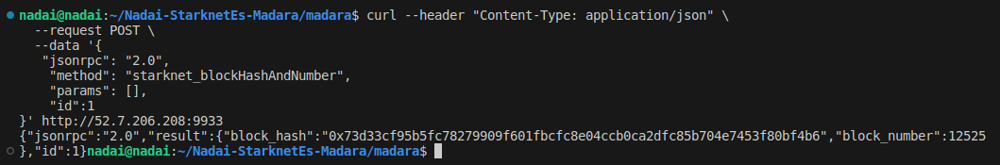
Avanzando, exploramos otro ejemplo, en este caso, empleamos starknet_getBlockWithTxHashes para obtener el bloque más reciente, acompañado por su hash relacionado, el estado actual de la transacción, el timestamp (sello de tiempo) y la dirección del secuenciador.
curl --header "Content-Type: application/json" \
--request POST \
--data '{
"jsonrpc": "2.0",
"method": "starknet_getBlockWithTxHashes",
"params": [
"latest"
],
"id":1
}' http://52.7.206.208:9933
La respuesta a esta consulta deberá seguir la estrucutra de salida de la siguiente imagen:

En última instancia, proporcionamos el enlace directo al documento hospedado en el repositorio oficial. Este recurso le permitirá mantenerse al tanto de las actualizaciones más recientes y acceder al Sharingan Starter Pack para examinar los Comandos y Recomendaciones actualizadas.
Otros Secuenciadores 🚧
Katana 🚧
Radius 🚧
Otros Prover 🚧
Sandstorm 🚧
Kakarot 🚧
Dojo: 🚧
Este capítulo nos sumerge en el intrigante universo del motor Dojo y su capacidad para revolucionar los juegos demostrables. Desglosaremos los conceptos emergentes de mundos autónomos y juegos probables a través de una sección especial dedicada a la Teoría. Dojo, impulsado por colaboradores destacados como Cartridge, Realms & BibliothecaDAO, briq y muchos otros, es una iniciativa de código abierto con licencia MIT.
Un Motor para Crear Mundos Autónomos
Dojo es una herramienta poderosa que trasciende los límites de un motor de juegos convencional. Su diseño está enfocado en la creación de juegos y mundos autónomos en la cadena de bloques utilizando la versatilidad de Cairo. Incorpora un sistema innovador de componentes de entidades y adopta el patrón diamante, lo que facilita la construcción de entornos modulares y escalables. La esencia de Dojo radica en la incorporación de Componentes (estado) y Sistemas (lógica) que dan vida a estos mundos digitales. Su arquitectura se inspira en la brillantez del motor Bevy.
Características Clave y Futuro Prometedor
Dojo destaca por su Sistema de Componentes de Entidades (ECS) basado en Cairo 1.0, así como por elementos clave como Sozo, Torii y Katana que impulsan la red y la indexación. Además, Dojo ofrece SDKs tipados para un desarrollo eficiente. Este proyecto de código abierto se encuentra en sus fases iniciales de desarrollo y acoge con entusiasmo a colaboradores de todos los niveles. Dojo se erige como una respuesta a las lecciones aprendidas en la búsqueda de construir juegos en cadena, aligerando la carga de la infraestructura compleja y permitiendo a los desarrolladores centrarse en la esencia de sus creaciones. Los juegos demostrables demandan propiedades de conocimiento cero (ZK) para su escalabilidad y verificación de cálculos eficiente. Cairo, un lenguaje versátil, es la piedra angular que facilita este proceso, eliminando la complejidad de crear circuitos para integrar SNARKs. Así, programar en Cairo se traduce en aplicaciones automáticamente demostrables. Además, Dojo ofrece una versatilidad excepcional en cuanto a implementación. Puedes llevar tus programas a la Máquina Virtual Cairo (CVM), que es compatible con la Capa 2 de Starknet y las appchains de Starknet. Incluso puedes llevar tus creaciones al navegador a través de WebAssembly (WASM). Dojo está diseñado para impulsar el desarrollo de juegos en múltiples contextos, aportando primitivas de conocimiento cero (ZK). A medida que el proyecto avanza, su objetivo es empoderar a los desarrolladores, acortando drásticamente el tiempo necesario para crear juegos en cadena y Mundos Autónomos (AWs), convirtiendo semanas de trabajo en un proceso eficiente de horas. Acompáñanos en esta emocionante travesía hacia el futuro del entretenimiento digital con Dojo. ¡El horizonte de los juegos demostrables y mundos autónomos espera ser explorado! 🌟